اختُبر الكود في هذا الكتاب على Flutter 3.50.1 وDart 3.14، وكل مثال وجلسة طرفية وصورة شاشة منتَج من ملفات مستودع الكود الخاص بالكتاب.
Flutter وDart وFirebase وAndroid وGoogle Play علامات تجارية لشركة Google LLC، وiOS وXcode وApp Store علامات تجارية لشركة Apple Inc. وغيرها من الأسماء الواردة في هذا الكتاب علامات تجارية لأصحابها، وتُذكر للتعريف فقط.
تستطيع أن تبني تطبيق Flutter وتنشره. وهذا الكتاب عن بناء تطبيقات تبقى جيدة وهي تكبر: شاشات أكثر، وأشخاص أكثر يعملون عليها، ومستخدمون أكثر على أنواع أكثر من الجوالات، وسنوات أكثر من التحديثات. وهو مكتوب لمن أنهى Flutter من الصفر، الكتاب الخامس في هذه السلسلة، أو لمن نشر تطبيق Flutter بنفسه. لا يشرح الـ Widgets ولا التخطيطات ولا setState من جديد؛ بل يشرح لماذا تعمل كما تعمل، وما الذي يبنيه المحترفون فوقها.
ما تحتاجه
كل ما في الكتاب الخامس: Flutter، وVisual Studio Code أو Android Studio، ومحاكٍ أو جوال. وجهاز Mac لأجزاء iOS.
صبراً على الأدوات: فهذا الكتاب يستخدم حزماً أكثر من سابقه، وكل فصل يقول بالضبط أيها، ولماذا.
كيف نُظّم الكتاب
فصول الكتاب سبعة عشر، في ثلاثة أجزاء. الجزء الأول أساس ما بعده؛ أما الجزآن الثاني والثالث فيُقرآن بأي ترتيب بعده.
المعمارية يبدأ من تحت الغطاء، بكيف يحوّل Flutter الـ Widgets إلى نقاط على الشاشة، ثم يبني هيكل التطبيق الكبير: طبقات نظيفة، والحالة بـ Riverpod، والتنقل بـ go_router، وطبقة شبكة تتعامل مع الأخطاء وإعادة المحاولة، وبيانات تعمل بلا اتصال.
الجودة عن إحساس التطبيق، وكيف تعرف أنه يعمل: نظام تصميم، وحركات، وأداء يُقاس ويُصلح، وكل أنواع الاختبار، وإمكانية الوصول.
الإنتاج عن تشغيل التطبيق في العالم الحقيقي: الإشعارات والعمل في الخلفية، والكود الأصلي، والأمان، وخوادم البناء التي توقّع وتنشر، وتقارير الأعطال والتحليلات، ومشروع ختامي يستخدم كل ذلك.
في كل فصل
يسير كل فصل على النمط الذي عرفته في الكتاب الخامس: ما ستتعلمه؛ وشرح مبني على أمثلة حقيقية تعمل؛ و«اختبر نفسك»؛ وصناديق فيها نصائح وفخاخ وعادات المحترفين؛ والأخطاء الشائعة؛ وملخص؛ وثلاثة مشاريع تطبيقية (سهل ومتوسط وتحدٍّ)؛ وتمارين بثلاثة مستويات، وإجاباتها في آخر الكتاب. وفي هذا المستوى تقترب المشاريع من العمل الحقيقي: أكثرها يبدأ من كود بطيء أو هش أو صعب الاختبار، ويطلب منك أن تجعله أفضل، وأن تثبت ذلك.
كود حقيقي وأرقام حقيقية
كل مثال ملف حقيقي، وكل جلسة طرفية سُجّلت أثناء إعداد الكتاب، وكل صورة شاشة هي التطبيق نفسه. وحين يقول فصل إن تغييراً وفّر أربعين إعادة بناء أو ألف عملية رسم، فقد عدّها اختبار. وسترى النتائج نفسها بالإصدارات نفسها:
الأداة
الإصدار
Flutter
3.50.1 (المستقر)
Dart
3.14.0
الحزم
إصداراتها الدقيقة في جلسة pub add في كل فصل
وقياسات الوقت، مثل مدة الإطار، تعتمد على الجهاز. وحيث يعرضها الكتاب يقول على أي جهاز قاسها، ويعلّمك أن تقيس على جوالك أنت، وهذا ما يهم.
قراءة الأمثلة
اللسان الداكن فوق المثال يذكر مسار الملف في المشروع. والملفات الطويلة تُعرض أجزاءً، والملف كاملاً في مستودع الكود.
الصندوق ذو النقاط الملونة الثلاث طرفية: السطر الذي يبدأ بـ $ أمر، والأسطر تحته رده.
الصورة داخل إطار جوال لقطة من التطبيق.
الكود بالإنجليزية دائماً، أما التعليقات والنصوص التي يراها المستخدم فبالعربية في هذا الإصدار.
مستودع الكود
كل مثال ومشروع وحل تمرين موجود في مستودع الكود الخاص بالكتاب، مع السكربت الذي أنتج مخرجاته. استخدمه للمقارنة، أو لتبدأ من نسخة تعمل حين تتعثر؛ لكن اكتب الكود بنفسك أولاً.
كلمة من المؤلف
الفرق بين مطور يبني تطبيقات ومطور يبني تطبيقات تدوم نادراً ما يكون الموهبة. إنه معرفة ما يحدث تحت الكود الذي تكتبه، وعادات تكتشف الأخطاء قبل أن يكتشفها الناس. ويحاول هذا الكتاب أن يعطيك الاثنين. وبِت، الروبوت البنفسجي، ما زال هنا، ومعه الآن بعض الندوب من بيئة الإنتاج. أهلاً بعودتك.
سليمان ماجد سعيد صلاح
1
الفصل 1
كيف يرسم Flutter فعلاً
ستتعلم في هذا الفصل أن
ترى الأشجار الثلاث خلف كل شاشة: الـ Widgets، والعناصر (elements)، وكائنات الرسم (render objects)
تتبع إطاراً واحداً من setState إلى النقاط على الشاشة، وتعرف كلفة كل خطوة
تتوقع أي الـ Widgets يُعاد بناؤها، وتُبقي عددها صغيراً بـ const والحالة المحلية
تستخدم المفاتيح لتبقى الحالة حيث يجب، وحدود إعادة الرسم ليبقى الرسم رخيصاً
تثبت كل ذلك باختبارات تعدّ مرات البناء ومرات الرسم
في الكتاب الخامس كتبت الـ Widgets ورسمها Flutter. وكان هذا كافياً لبناء التطبيقات. لكنه لا يكفي لتعرف لماذا تتقطع قائمة، ولماذا يفقد حقل نص ما كُتب فيه حين تتغير الشاشة، ولماذا يتجاهل Widget العرض الذي أعطيته. وللثلاثة جواب واحد: ما يفعله Flutter بالـ Widgets بعد أن تعيد build. وهذا الفصل يفتح الصندوق، وكل ادعاء فيه يقيسه اختبار.
بِت
لا شيء في هذا الفصل قاعدة تقريبية. كل رقم، من مرات البناء إلى مرات الرسم، عدّته الاختبارات التي ستراها، على الجهاز الذي صنع الكتاب. غيّر الكود، وشغّل الاختبارات، وشاهد الأرقام تتغير.
1.1ثلاث أشجار
الـ Widget ليس ما تراه على الشاشة. إنه وصف: كائن صغير لا يتغير يقول ما يجب أن يكون هناك. ويحتفظ Flutter بشجرتين أخريين بجانب الـ Widgets:
الـ عنصر (element) مكان الـ Widget في الشجرة الحية. يُنشأ مرة واحدة، ويحفظ موضعه، ويحمل الـ State الخاصة بالـ Widget ذي الحالة، ويُعاد استخدامه حين يصل Widget جديد من النوع نفسه إلى المكان نفسه.
وكائن الرسم (render object) يقوم بالعمل الحقيقي: يقيس نفسه، ويضع أبناءه، ويرسم. ولبعض الـ Widgets فقط كائن رسم.
يستطيع اختبار أن يمر على عناصر شاشة صغيرة ويطبع الثلاثة، سطراً لكل عنصر:
test/trees_test.dart (جزء)
final root = tester.element(find.byType(Directionality));
voidshow(Element e, int depth) {
// RenderObjectElement وحده يملك كائن رسم؛ والباقي يبني Widgets فقط.final ro = e is RenderObjectElement
? '${e.renderObject.runtimeType}'
: '-';
debugPrint(
'${'' * depth}${e.widget.runtimeType} | ${e.runtimeType} | $ro',
);
e.visitChildren((child) => show(child, depth + 1));
}
show(root, 0);
الطرفية
$ flutter test test/trees_test.dart
00:00 +0: loading test/trees_test.dart
00:00 +0: الأشجار الثلاث لشاشة صغيرة
Directionality | _UbiquitousInheritedElement | -
Center | SingleChildRenderObjectElement | RenderPositionedBox
Padding | SingleChildRenderObjectElement | RenderPadding
Text | StatelessElement | -
RichText | MultiChildRenderObjectElement | RenderParagraph
00:00 +1: All tests passed!
Center وPadding رقيقان: لكل منهما عنصر وكائن رسم يخطط لابن واحد.
وTextبلا كائن رسم. إنه StatelessWidget يبني RichText، وRichText هو صاحب RenderParagraph الذي يقيس الحروف ويرسمها. وأكثر الـ Widgets التي تستخدمها مثل Text: لا تفعل إلا بناء Widgets أخرى.
وDirectionality بلا كائن رسم أيضاً: إنه Widget موروث (inherited widget) يمرر قيمة إلى الأسفل، كما يفعل Theme وMediaQuery.
1.2إطار واحد
شاشة الجوال تطلب صورة جديدة 60 أو 120 مرة في الثانية. ولكل صورة يملك Flutter نحو 16 أو 8 أجزاء من الألف من الثانية، ويقوم بالخطوات نفسها بالترتيب:
الحركة. كل حركة جارية تنتقل إلى قيمتها في هذه اللحظة.
البناء. كل عنصر مُعلَّم بأنه متسخ (dirty)، بـ setState أو بتغير قيمة موروثة، تُنفَّذ دالة build في الـ Widget الخاص به، وتُقارن الـ Widgets الجديدة بالقديمة.
التخطيط. كائنات الرسم التي ربما تغيّر مقاسها تقيس نفسها وتضع أبناءها.
الرسم. كائنات الرسم التي تغيّر شكلها تسجّل ما يجب رسمه، في طبقات.
التركيب والتنقيط. تذهب الطبقات إلى خيط الـ GPU، فيحولها إلى نقاط بينما يُبنى الإطار التالي.
وكل خطوة لا تلمس إلا ما تغيّر. فالإطار الذي لم يتغير فيه شيء لا يكلّف شيئاً تقريباً؛ والإطار الذي تغيّر فيه كل شيء قد يفوته موعده، فيرى الشخص تقطعاً يسمى jank. وباقي هذا الفصل عن إبقاء «ما تغيّر» صغيراً في كل خطوة.
1.3من يُعاد بناؤه
setState تعلّم عنصراً واحداً بأنه متسخ. وفي الإطار التالي يُبنى الـ Widget الخاص به من جديد، فيعيد Widgets أبناء جديدة. ولكل ابن يقارن Flutter الـ Widget الجديد بالقديم في المكان نفسه:
إن كان الكائن نفسه، فلا يمكن أن يكون شيء تحته قد تغيّر: فيتخطاه Flutter كله. وهذا ما تعطيك إياه const: فالـ Widget الثابت يُنشأ مرة واحدة، حين يُترجم التطبيق، وهو الكائن نفسه في كل بناء.
وإن كان كائناً مختلفاً من النوع نفسه (وبالمفتاح نفسه)، بقي العنصر وحُدّث، وبُني الابن من جديد.
وإن اختلف النوع أو المفتاح، رُمي العنصر القديم وكل ما تحته، وأُنشئ جديد.
الصفحة التالية تعدّ مرات بناء كل Widget على الشاشة نفسها. تُغيَّر حالة الصفحة ثلاث مرات بالزر الممتلئ، وحالة Widget أصغر خمس مرات بالزر ذي الإطار:
lib/rebuilds.dart (جزء)
// const: الكائن نفسه في كل مرة، فيتخطاه Flutter.const Badge1(),
// بلا const: كائن جديد مع كل بناء لأبيه، فيُبنى من جديد.
Badge2(),
FilledButton(
onPressed: () => setState(() => count++),
child: Text('أضف واحداً ($count)'),
),
const Divider(height: 32),
Text(
'الحالة أُنزلت إلى أسفل',
style: Theme.of(context).textTheme.titleMedium,
),
const LocalCounter(),
الشكل 1.1: بعد ثلاث لمسات لزر الصفحة وخمس للزر المحلي.
الطرفية
$ flutter test test/rebuilds_test.dart
00:00 +0: loading test/rebuilds_test.dart
00:00 +0: setState تعيد بناء الـ Widget وكل جديد تحته
{page: 4, const: 1, plain: 4, local: 6}
00:00 +1: All tests passed!
بُنيت الصفحة أربع مرات: مرة في البداية، ومرة مع كل واحدة من استدعاءات setState الثلاثة.
وبُني const Badge1() مرة واحدة. فالصفحة أعادت الكائن نفسه في كل مرة، فلم يطلب منه Flutter البناء ثانية أبداً.
وبُني Badge2() أربع مرات مثل أبيه، مع أن شيئاً فيه لم يتغير: فالكائن الجديد Widget جديد.
وبُني LocalCounter ست مرات: مرة في البداية، ومرة مع كل واحد من استدعاءات setState الخمسة الخاصة به. ولم تُعد هذه الخمسة بناء الصفحة ولا الشارتين: فالحالة التي تعيش منخفضة في الشجرة لا تعيد إلا بناء ما تحتها.
1.4القيود تنزل، والمقاسات تصعد
التخطيط في Flutter مرور واحد إلى أسفل الشجرة ثم العودة. يعطي الأب كل ابن قيوداً (constraints): عرضاً وارتفاعاً أدنى وأقصى. ويختار الابن مقاسه داخلها، ويخبر أباه. ثم يقرر الأب أين يضع الابن. وثلاث جمل تشرح كل مفاجأة في التخطيط:
القيود تنزل. والمقاسات تصعد. والأب يحدد الموضع.
وWidget صغير يجعل القيود مرئية: فـ LayoutBuilder يعطي دالته القيود التي تلقّاها.
lib/constraints.dart (جزء)
String describe(BoxConstraints c) {
String range(double min, double max) => min == max
? min.toStringAsFixed(0)
: '${min.toStringAsFixed(0)}–${max.isFinite ? max.toStringAsFixed(0) : '∞'}';
return'w ${range(c.minWidth, c.maxWidth)} h ${range(c.minHeight, c.maxHeight)}';
}
// يعرض القيود التي تلقّاها هذا المكان من أبيه.class ConstraintsLabel extends StatelessWidget {
const ConstraintsLabel({super.key});
@override
Widget build(BuildContext context) {
return LayoutBuilder(
builder: (context, constraints) => ColoredBox(
color: Theme.of(context).colorScheme.primaryContainer,
child: Padding(
padding: const EdgeInsets.all(8),
child: Text(describe(constraints), textDirection: TextDirection.ltr),
),
),
);
}
}
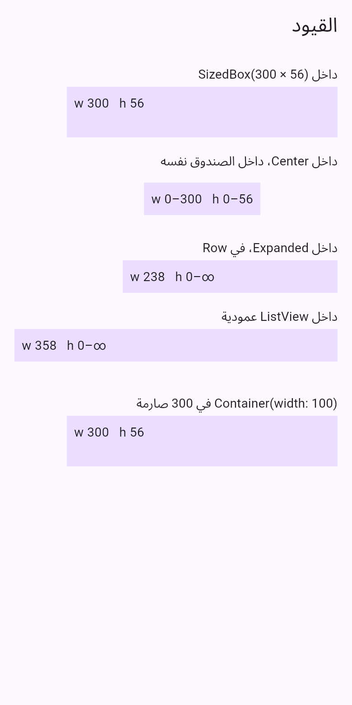
الشكل 1.2: اللافتة نفسها في خمسة أماكن، تعرض ما سمح به كل مكان.
SizedBox بمقاس 300 × 56 يعطي قيوداً صارمة (tight): الأدنى يساوي الأقصى، ولا خيار للابن.
وCenter يرخيها: أي شيء من الصفر حتى مقاس الصندوق. فتأخذ اللافتة ما يحتاجه نصها فقط، ويضعها Center في المنتصف.
وExpanded يعطي الابن العرض الباقي في الصف بالضبط، وارتفاع الصف بلا حد: 0–∞.
وListView العمودية تعطي أبناءها ارتفاعاً بلا حد، لأن القائمة تتمرر. ولهذا يفشل Column فيه Expanded داخل ListView: فـ«أطول ما يمكن» لا جواب له حين يكون الأقصى بلا نهاية.
والأخير يطلب عرض 100، فيأخذ 300. فـ Container(width: 100) أمنية، وقيود أبيه الصارمة تغلب. ولتجعله بعرض 100 أرخِ القيود أولاً، بـ Center أو Align.
1.5المفاتيح: أي عنصر هو أيّها
يُبقي Flutter العنصر حين يكون للـ Widget الجديد في مكانه النوع نفسه والمفتاح (key) نفسه. وبلا مفاتيح يعني «مكانه» ترتيبه بين إخوته. وهذا صحيح عادة، ويفشل بالضبط حين يتحرك إخوة من النوع نفسه. الصفحة التالية فيها صفان من البطاقات ذات الحالة، أحدهما بلا مفاتيح والآخر بـ ValueKey لكل حرف، وزر يبدّل الحرفين:
lib/keys.dart (جزء)
// بلا مفتاح: بعد التبديل تبقى كل State في موضعها.
Row(children: [for (final l in labels) Tile(label: l)]),
const SizedBox(height: 24),
Text('مع ValueKey', style: Theme.of(context).textTheme.titleMedium),
// مع مفتاح: كل State تتبع الـ Widget الخاص بها.
Row(
children: [
for (final l in labels) Tile(key: ValueKey(l), label: l),
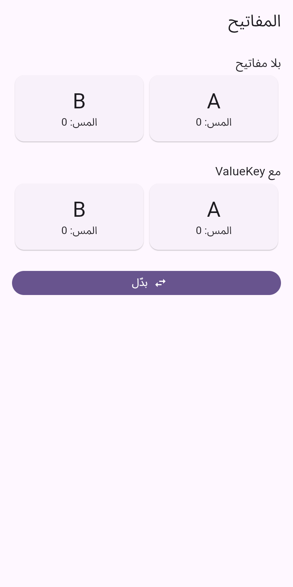
قبل
لُمس A ثلاث مرات في كل صف، ثم التبديل
في الصف الأول انتقل الحرفان، لكن العدّين بقيا مكانهما: فصار B يعرض لمسات A الثلاث. فكل عنصر قارن الـ Widget الجديد في موضعه، فوجد Tile كما كان، فأبقى الـ State الخاصة به. وفي الصف الثاني وجد كل مفتاح عنصره أينما انتقل، فذهبت لمسات A الثلاث مع A. والاختبار يقول ذلك بدقة:
test/keys_test.dart (جزء)
String tapsUnder(Finder label) => (tester.widget<Text>(
find.descendant(
of: find.ancestor(of: label, matching: find.byType(Column)),
matching: find.textContaining(':'),
),
)).data!;
// بلا مفاتيح: انتقل A إلى الجهة الأخرى، لكن لمساته الثلاث بقيت مكانها.
expect(tapsUnder(find.text('A').first), 'المس: 0');
// مع المفاتيح: انتقلت لمسات A الثلاث معه.
expect(tapsUnder(find.text('A').last), 'المس: 3');
الطرفية
$ flutter test test/keys_test.dart
00:00 +0: loading test/keys_test.dart
00:00 +0: بلا مفاتيح تبقى الحالة مكانها؛ ومع المفاتيح تنتقل
00:00 +1: All tests passed!
1.6الرسم والطبقات
حين يتغير شكل كائن رسم، يعلّم نفسه بأنه يحتاج الرسم، ويصعد التعليم إلى أقرب حد لإعادة الرسم (repaint boundary): فيُعاد رسم كل ما تحت هذا الحد، تغيّر أو لم يتغير. وشعار يدور بجانب صورة ثابتة يُظهر كلفة ذلك. والاختبار يعدّ مرات رسم الصورة الثابتة خلال ستين إطاراً:
test/repaint_test.dart (جزء)
Future<int> paintsOver60Frames(
WidgetTester tester, {
requiredbool boundary,
}) async {
final painter = CountingPainter();
final picture = CustomPaint(painter: painter, size: const Size(100, 100));
await tester.pumpWidget(
Directionality(
textDirection: TextDirection.ltr,
child: Row(
children: [
picture,
// طبقة خاصة به: إعادة رسم المؤشر لم تعد تعيد رسم جيرانه.if (boundary)
const RepaintBoundary(child: Spinner())
elseconst Spinner(),
],
),
),
);
for (var i = 0; i < 60; i++) {
await tester.pump(const Duration(milliseconds: 16));
}
return painter.paints;
}
الطرفية
$ flutter test test/repaint_test.dart
00:00 +0: loading test/repaint_test.dart
00:00 +0: الحد يمنع الرسمة الثابتة من إعادة الرسم
without a boundary: 61 paints, with one: 1
00:00 +1: All tests passed!
بلا حد، رُسمت الصورة التي لا تتغير أبداً إحدى وستين مرة: مرة في البداية ومرة مع كل إطار، لأنها تشارك المؤشر الدوّار طبقته. ومع RepaintBoundary حول المؤشر صارت له طبقة خاصة، ورُسمت الصورة مرة واحدة.
1.7رؤية ذلك على الجوال
اختبارات هذا الفصل تعدّ؛ وعلى الجوال تشاهد. شغّل التطبيق في وضع profile، flutter run --profile، على جهاز حقيقي: فوضع التطوير أبطأ مرات كثيرة، وتوقيتاته بلا معنى. ثم افتح DevTools من الرابط في الطرفية:
صفحة Performance تعرض كل إطار عموداً، مقسوماً بين خيط البناء وخيط التنقيط، وتعلّم الإطارات التي فاتها موعدها.
وTrack widget rebuilds تعرض الأعداد نفسها التي في صفحة هذا الفصل، لكل Widget، مباشرة.
وHighlight repaints ترسم إطاراً ملوناً يتغير لونه في كل مرة تُرسم فيها منطقة: فما يظل يومض حين لا يجب أن يتغير شيء هو حد ناقص.
ومستكشف التخطيط في Inspector يعرض قيود كل Widget ومقاسه، كما في القسم 1.4.
أخطاء شائعة
الخطأ
ما يحدث
الحل
نسيان const
تُبنى Widgets لم تتغير مع كل أب
مُنشئات const، والقاعدة التي تطلبها
الحالة عالية في الشجرة
تغيير صغير يعيد بناء صفحة كاملة
انقل الحالة إلى الـ Widget الصغير الذي يستخدمها
مقاومة مقاس Widget
عرض وارتفاع يبدوان متجاهَلين
افحص قيوده؛ وأرخها بـ Center أو Align
عناصر متحركة بلا مفاتيح
الحالة والنص والتركيز تبقى مكانها حين تتحرك العناصر
ValueKey بمعرّف العنصر
UniqueKey() داخل build
تضيع الحالة مع كل إعادة بناء
مفتاح من البيانات، يُنشأ مرة واحدة
القياس في وضع التطوير
إطارات بطيئة ليست بطيئة في الحقيقة
flutter run --profile على جوال حقيقي
الملخص
الـ Widgets تصف؛ والعناصر تعيش وتحمل الحالة؛ وكائنات الرسم تخطط وترسم. وأكثر الـ Widgets لا تفعل إلا بناء Widgets أخرى.
الإطار يحرّك، ويبني المتسخ، ويخطط ويرسم ما تغيّر، وينقّط على خيط آخر.
الابن يُتخطى إن كان الكائن نفسه (const)، ويُحدَّث إن كان له النوع والمفتاح نفسهما، ويُستبدل في غير ذلك. والحالة التي تعيش منخفضة تعيد بناء القليل.
المفاتيح تجعل العناصر تتبع الـ Widgets الخاصة بها حين يتحرك الإخوة. وحدود إعادة الرسم تعزل ما يُعاد رسمه كثيراً.
عُدّ مرات البناء والرسم في الاختبارات؛ وشاهدها في DevTools، في وضع profile، على جوال.
إجابات «اختبر نفسك»: 1. RichText (وكائنه RenderParagraph) وPadding (وكائنه RenderPadding)؛ أما Text فلا يفعل إلا بناء RichText. 2. Logo() وحده: فـ const Logo() هو الكائن نفسه كما كان، فيتخطاه Flutter. 3. قيود أبيه صارمة: العرض الأدنى والأقصى كلاهما 300، والابن يجب أن يختار مقاساً داخل قيوده، أياً كان ما طلبه.
مشاريع للتدريب
كل مشروع ينتهي باختبار يعدّ شيئاً. اكتب الاختبار أولاً، وشاهده يفشل أو يطبع رقماً مفاجئاً، ثم غيّر الكود حتى يصير الرقم ما تتوقعه.
المشروع 1.1 · سهل
ماذا داخل ListTile؟
عُدّ العناصر وكائنات الرسم في ListTile واحد، واطبع قائمة كائنات الرسم.
ستتدرب على: المرور على العناصر بـ visitChildren، ومعرفة أي العناصر يملك كائن رسم.
ارسم ListTile له أيقونة على كل جانب وعنوان، داخل MaterialApp وMaterial.
جِد عنصره بـ tester.element(find.byType(ListTile))، ومُرّ على كل ما تحته.
عُدّ كل العناصر، واجمع e.renderObject.runtimeType لما كان منها RenderObjectElement.
اطبع الاثنين، واقرأ القائمة: أي كائنات الرسم موجودة فقط من أجل قارئات الشاشة والفأرة واللمس؟
تلميح: ثلاث من الفقرات ليست العنوان: فالأيقونات تُرسم نصاً، حرفاً واحداً من خط أيقونات لكل منها.
يجب أن تكون نتيجتك هكذا:
الطرفية
$ flutter test test/tile_test.dart
00:00 +0: loading test/tile_test.dart
00:00 +0: ListTile عناصر كثيرة وكائنات رسم قليلة
47 elements, 19 render objects:
RenderSemanticsAnnotations, RenderMouseRegion, RenderSemanticsAnnotations, RenderPointerListener, RenderSemanticsAnnotations, RenderPadding, RenderPadding, _RenderListTile, RenderSemanticsAnnotations, RenderExcludeSemantics, RenderConstrainedBox, RenderPositionedBox, RenderParagraph, RenderParagraph, RenderSemanticsAnnotations, RenderExcludeSemantics, RenderConstrainedBox, RenderPositionedBox, RenderParagraph
00:00 +1: All tests passed!
المشروع 1.2 · متوسط
أعد الترتيب دون أن تفقد شيئاً
قائمة مهام يمكن سحبها إلى ترتيب جديد، وكل مهمة تحتفظ بعلامتها.
ستتدرب على:ReorderableListView، ومفاتيح من البيانات، وقيادة سحب في اختبار.
TaskTile ذو حالة يحفظ done في حالته، ويعرض CheckboxListTile.
ReorderableListView يعرض المهام، لكل منها key: ValueKey(task). وonReorderItem تتلقى الموضع القديم والجديد وتنقل المهمة في القائمة.
في اختبار، علّم المهمة الأولى، ثم اسحبها إلى الآخر: startGesture عليها، وانتظر الضغط المطوّل، وحرّكها إلى أسفل، وأفلتها.
تأكد أن المهمة الأولى صارت الأخيرة، وما زالت معلَّمة. ثم احذف المفتاح وشاهد الاختبار يفشل.
تلميح:ReorderableListView تصر على المفاتيح وترمي خطأً بدونها، لكنها لا تستطيع التأكد أنها من البيانات: فـ ValueKey(index) سينجح في فحصها ويضيّع العلامات مع ذلك.
يجب أن تكون نتيجتك هكذا:
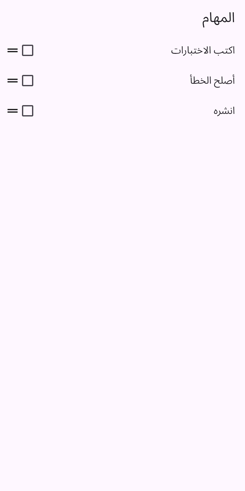
المشروع 1.2: اسحب المهمة لتنقلها.
الطرفية
$ flutter test test/reorder_test.dart
00:00 +0: loading test/reorder_test.dart
00:00 +0: إعادة الترتيب تُبقي حالة كل عدّاد
00:00 +1: All tests passed!
المشروع 1.3 · تحدٍّ
ميزانية لإعادة الرسم
لوحة فيها رأس، ورسم بياني، وتذييل، وساعة حية. اكتب اختباراً يفشل إن أُعيد رسم أي شيء غير الساعة وهي تعمل، ثم أصلح اللوحة.
ستتدرب على: عدّ مرات الرسم بـ CustomPainter، وكتابة الاختبارات كميزانيات، والإصلاح بـ RepaintBoundary مقيس.
أعطِ كل جزء ثابت رسّاماً يعدّ مرات رسمه في خريطة مشتركة، وأعطِ الساعة رسّاماً يعيد الرسم مع كل دقة.
ارسم اللوحة، وشغّل ثلاثين إطاراً، وتوقع أن يكون كل عدد إلا عدد الساعة 1. واجعل رسالة الفشل تطبع الأعداد.
شغّله: يفشل، ويقول كم أُعيد الرسم.
ضع الساعة، والساعة وحدها، داخل RepaintBoundary، وشغّله من جديد.
تلميح: اختبار كهذا ميزانية: لا يتحقق من أن التطبيق يبدو صحيحاً، بل من أنه يبقى رخيصاً. احتفظ به، فالشخص التالي الذي ينقل الساعة سيعرف عن الحد من الاختبار الفاشل، لا من المستخدمين.
يجب أن تكون نتيجتك هكذا (قبل الإصلاح، ثم بعده):
الطرفية
$ flutter test test/budget_before_test.dart
00:00 +0: loading test/budget_before_test.dart
00:00 +0: الساعة تعيد رسم نفسها فقط
{header: 31, chart: 31, clock: 31, footer: 31}
Expected: true
Actual: <false>
repainted: {header: 31, chart: 31, footer: 31}
الطرفية
$ flutter test test/budget_test.dart
00:00 +0: loading test/budget_test.dart
00:00 +0: الساعة تعيد رسم نفسها فقط
{header: 1, chart: 1, clock: 31, footer: 1}
00:00 +1: All tests passed!
تمارين
سهل أضف Icon وSizedBox إلى اختبار الأشجار. وقبل أن تشغّله اكتب أي الأسطر سيكون لها كائن رسم.
سهل في صفحة إعادة البناء، اجعل مُنشئ Badge2 من نوع const لكن استمر في استدعائه بلا const. كم مرة يُبنى الآن، ولماذا؟
متوسط ضع Column فيه ابن Expanded داخل ListView عمودية. اقرأ الخطأ، واشرحه بالقيود من القسم 1.4، وأصلحه بطريقتين مختلفتين.
متوسط أعطِ بطاقات صفحة المفاتيح TextField بدل العدّاد، واكتب في واحدة، وبدّل. ماذا يحدث للنص في كل صف، ولتركيز لوحة المفاتيح؟
تحدٍّ انقل RepaintBoundary في اختبار الرسم من المؤشر إلى الصورة الثابتة. توقّع العدد، ثم شغّله. متى يكون كل موضع هو الأفضل؟
إجابات التمارين في آخر الكتاب، وفي مستودع كود الكتاب.
في الفصل 2
عرفت كيف يرسم Flutter شاشة واحدة. والتطبيق الحقيقي فيه خمسون، وفريق يعمل عليها. والفصل القادم يعطي التطبيق هيكلاً ينمو: طبقات للبيانات والمجال والعرض، مع قواعد عمّن يحق له أن يكلّم من.
2
الفصل 2
المعمارية النظيفة في Flutter
ستتعلم في هذا الفصل أن
تقسم الميزة إلى ثلاث طبقات، المجال والبيانات والعرض، وتقول ما مكان كل شيء فيها
تتبع قاعدة الاعتماد: المجال لا يعرف شيئاً عن Flutter ولا JSON ولا الشبكة
تمثّل ما قد يسوء في صورة أنواع، بـ Result مختوم وحالات فشل مختومة
تصل كل شيء في جذر تركيب واحد، وتشغّل التطبيق نفسه موصولاً بثلاث طرق
تختبر كل طبقة وحدها، وتحرس القاعدة نفسها باختبار يقرأ الاستيرادات
كان لتطبيق الملاحظات في الكتاب الخامس طبقات من قبل: ملاحظة، ومخزن، ونموذج، وشاشات. وكان هذا كافياً لميزة واحدة يكتبها شخص واحد. أما التطبيق الحقيقي ففيه عشرون ميزة، وفريق، وخادم يغيّر شكل JSON الخاص به، وقواعد تتغير كل ثلاثة أشهر. وهذا الفصل يعطي هذا النوع من التطبيقات هيكله: الطبقات التي تستخدمها فرق Flutter المحترفة، والقاعدة الواحدة التي تجمعها، واختباراً يضمن ألا يكسرها أحد، ولا أنت نفسك مساء يوم خميس.
بِت
المثال ميزة واحدة، الطلب من المقهى، مبنية كاملة: ثلاث طبقات، وثلاثة تطبيقات لا تختلف إلا في توصيلها، وثمانية اختبارات، واختبار واحد يفشل عمداً لترى ما يلتقطه.
2.1ثلاث طبقات وقاعدة واحدة
المجال (domain) هو ما يدور حوله التطبيق: الكيانات (طلب، ومبلغ من المال)، والقواعد (الطلب لا يكون فارغاً؛ المقهى يغلق في العاشرة)، والأفعال التي يقوم بها الناس، وتسمى حالات الاستخدام (use cases). وهو Dart خالصة.
وطبقة البيانات (data) تعرف من أين تأتي الأشياء: JSON وHTTP وقاعدة بيانات. وتترجم ذلك العالم إلى كيانات المجال.
وطبقة العرض (presentation) هي الشاشات والكائنات التي تحمل حالتها. تعرض الكيانات وتستدعي حالات الاستخدام.
وقاعدة واحدة، قاعدة الاعتماد: الاستيرادات تشير نحو المجال، لا تبتعد عنه أبداً.
presentation ──▶ domain ◀── data
▲
(knows no Flutter, no JSON, no HTTP)
يعرّف المجال ما يحتاجه، مثل «شيء يستطيع إرسال طلب»، في صورة واجهة. وطبقة البيانات تنفّذها. والعرض يتسلّمها. ولا أحد في المجال يكتب import 'package:http/...' أبداً، فحين يتغير الخادم لا تتغير القواعد؛ وحين يُعاد تصميم الشاشات لا تتغير القواعد؛ وتُختبر القواعد في أجزاء من الثانية، بلا جوال ولا شبكة.
والتطبيقات الكبيرة تنظّم المجلدات بالـ ميزة أولاً، ثم بالطبقة، فيعيش كل ما يخص الطلبات معاً:
lib/
core/result.dart shared by every feature
features/orders/
domain/ money, order, failures, orders_repository, place_order
data/ order_dto, orders_source, orders_repository_impl
presentation/ orders_controller, orders_page
orders_app.dart the composition root
2.2المجال
الأشياء تسوء: السلة فارغة، والمقهى مغلق، والشبكة متوقفة. والاستثناءات تُخفي ذلك عن نوع الدالة، فتكتشفه الشاشة وقت التشغيل. أما في المجال فتعيد حالة الاستخدام نتيجة، وهي إما قيمة وإما فشل:
lib/core/result.dart
// النتيجة إما قيمة وإما فشل؛ والنوع يقول أيهما، وswitch يجب أن يعالج الاثنين.sealedclass Result<T, F> {
const Result();
}
finalclass Ok<T, F> extends Result<T, F> {
const Ok(this.value);
final T value;
}
finalclass Err<T, F> extends Result<T, F> {
const Err(this.failure);
final F failure;
}
وحالات الفشل أنواع أيضاً، بلا كلمات فيها: فما يُقال عن الفشل، وبأي لغة، شأن الشاشة.
lib/features/orders/domain/failures.dart (جزء)
// كل ما قد يسوء، في صورة أنواع. بلا نصوص: الكلمات مكانها الشاشة.sealedclass OrderFailure {
const OrderFailure();
}
finalclass EmptyOrder extends OrderFailure {
const EmptyOrder();
}
finalclass TooLarge extends OrderFailure {
const TooLarge(this.max);
finalint max;
}
ولأن الاثنين مختومان (sealed)، يجب على كل switch عليهما أن يعالج كل الحالات، ويتحقق المترجم من ذلك. أضف فشلاً خامساً العام القادم، فتتوقف كل شاشة نسيته عن الترجمة حتى تقول شيئاً عنه.
ويحتاج المجال أن يرسل الطلبات إلى مكان ما، لكن يجب ألا يعرف كيف. فيقول ما يحتاجه في صورة واجهة، تسمى منفذاً (port):
// ما يحتاجه المجال من العالم الخارجي. وطبقة البيانات ستقدّمه.abstractinterfaceclass OrdersRepository {
Future<Result<Order, OrderFailure>> place(List<OrderLine> lines);
Future<List<Order>> history();
}
وحالة الاستخدام تحمل قواعد فعل واحد:
lib/features/orders/domain/place_order.dart (جزء)
// فعل واحد من أفعال التطبيق، بقواعده. ولا يعرف المستودع إلا بواجهته.class PlaceOrder {
PlaceOrder(this.repository, {DateTime Function()? clock})
: clock = clock ?? DateTime.now;
final OrdersRepository repository;
final DateTime Function() clock;
staticconst maxItems = 20;
Future<Result<Order, OrderFailure>> call(List<OrderLine> lines) async {
// القواعد بالترتيب: أرخص الفحوص أولاً، والشبكة أخيراً.final items = lines.fold(0, (sum, line) => sum + line.quantity);
if (items == 0) {
returnconst Err(EmptyOrder());
}
if (items > maxItems) {
returnconst Err(TooLarge(maxItems));
}
final hour = clock().hour;
if (hour < 8 || hour >= 22) {
returnconst Err(Closed());
}
return repository.place(lines);
}
}
والساعة تُعطى من الخارج كما في الكتاب الخامس: فيقرر الاختبار كم الساعة.
والقواعد تعمل قبل الشبكة. فالمقهى المغلق يُقال عنه فوراً، دون طلب كان الخادم سيرفضه على أي حال.
والاختبار لا يحتاج Flutter ولا خادماً ولا شاشة. ومستودع مزيف يسجّل ما وصله:
test/domain/place_order_test.dart (جزء)
void main() {
test('إرسال الطلب يتبع القواعد، بالترتيب', () async {
final repo = FakeRepository();
var hour = 10;
final place = PlaceOrder(repo, clock: () => DateTime(2026, 11, 22, hour));
final latte = OrderLine(menu.first, 2);
expect(
await place([]),
isA<Err<Order, OrderFailure>>().having(
(e) => e.failure,
'failure',
isA<EmptyOrder>(),
),
);
expect(
(await place([OrderLine(menu.first, 21)]) as Err).failure,
isA<TooLarge>(),
);
hour = 23;
expect((await place([latte]) as Err).failure, isA<Closed>());
expect(repo.placed, isEmpty);
hour = 10;
final ok = await place([latte]) as Ok<Order, OrderFailure>;
expect(ok.value.total.pounds, 90);
expect(repo.placed, hasLength(1));
});
}
الطرفية
$ flutter test test/domain/place_order_test.dart
00:00 +0: loading test/domain/place_order_test.dart
00:00 +0: إرسال الطلب يتبع القواعد، بالترتيب
00:00 +1: All tests passed!
وآخر expect قبل النجاح مهم بقدر غيره: بعد ثلاث حالات رفض لم يصل المستودع شيء. فالقواعد تعمل أولاً فعلاً.
2.3طبقة البيانات
الخادم يتكلم JSON، بأسمائه الخاصة: placed_at، والحالات نصوصاً، والقطع خريطة. وDTO، أي كائن نقل البيانات، يعكس هذا الشكل بالضبط، ولا شيء أكثر:
lib/features/orders/data/order_dto.dart (جزء)
// شكل البيانات على الشبكة. يتغير حين يتغير الخادم؛ أما الكيان فلا.class OrderDto {
const OrderDto({
requiredthis.id,
requiredthis.items,
requiredthis.status,
requiredthis.placedAt,
});
factory OrderDto.fromJson(Map<String, dynamic> json) => OrderDto(
id: json['id'] asint,
items: (json['items'] asMap<String, dynamic>).map(
(k, v) => MapEntry(k, v asint),
),
status: json['status'] asString,
placedAt: json['placed_at'] asString,
);
finalint id;
finalMap<String, int> items;
finalString status;
finalString placedAt;
}
وتنفيذ المستودع يحوّل الـ DTO إلى كيانات، وكل ما يسوء إلى فشل:
class OrdersRepositoryImpl implements OrdersRepository {
OrdersRepositoryImpl(this.source);
final OrdersSource source;
@override
Future<Result<Order, OrderFailure>> place(List<OrderLine> lines) async {
try {
final json = await source.post({
for (final l in lines) l.item.id: l.quantity,
});
return Ok(_toOrder(OrderDto.fromJson(json)));
} catch (_) {
// أي فشل في المصدر يصير NetworkFailure: فالمجال لا يرى استثناءً أبداً.returnconst Err(NetworkFailure());
}
}
@override
Future<List<Order>> history() async => [
for (final json inawait source.list()) _toOrder(OrderDto.fromJson(json)),
];
Order _toOrder(OrderDto dto) => Order(
id: dto.id,
lines: [
for (final MapEntry(:key, :value) in dto.items.entries)
OrderLine(menu.firstWhere((m) => m.id == key), value),
],
status: OrderStatus.values.byName(dto.status),
placedAt: DateTime.parse(dto.placedAt),
);
}
والمصدر خلفه واجهة أخرى: هنا مصدر مزيف يجيب بعد 400 جزء من الثانية كما تفعل الشبكة؛ وفي المشروع 2.2 عميل HTTP حقيقي. ولا يتغير المستودع ولا المجال بين الاثنين.
الطرفية
$ flutter test test/data/orders_repository_test.dart
00:00 +0: loading test/data/orders_repository_test.dart
00:00 +0: المستودع يحوّل البيانات إلى كيانات، والأخطاء إلى حالات فشل
00:00 +1: All tests passed!
2.4العرض
المتحكم يحمل حالة الشاشة، ويستدعي حالة الاستخدام، ويحوّل كل فشل إلى كلمات بلغة الشخص:
Future<void> place() async {
placing = true;
notifyListeners();
final result = await placeOrder([
for (final e in basket.entries) OrderLine(e.key, e.value),
]);
switch (result) {
case Ok(:final value):
basket.clear();
message = 'أُرسل الطلب: الطلب ${value.id}';
history = await repository.history();
case Err(:final failure):
message = describe(failure);
}
placing = false;
notifyListeners();
}
// كل فشل، بلغة الشخص.staticString describe(OrderFailure failure) => switch (failure) {
EmptyOrder() => 'أضف شيئاً إلى سلتك أولاً.',
TooLarge() => 'الطلب الواحد يتسع لعشرين قطعة على الأكثر.',
Closed() => 'المقهى مغلق. نفتح من 8:00 إلى 22:00.',
NetworkFailure() => 'لا اتصال. سلتك محفوظة؛ حاول من جديد.',
};
}
والصفحة تشاهد المتحكم وترسم فقط. والصفحة نفسها والمتحكم نفسه وحالة الاستخدام نفسها تعطي ثلاث شاشات مختلفة، بحسب ما أُعطيته وحده:
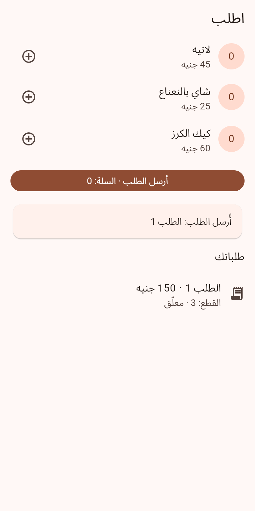
في 10:00: أُرسل
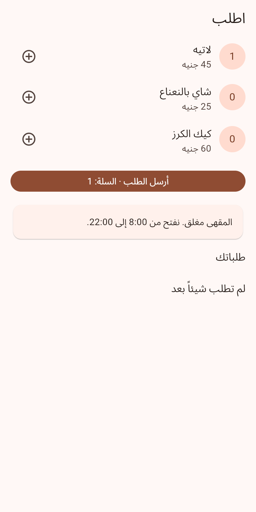
في 23:00: مغلق
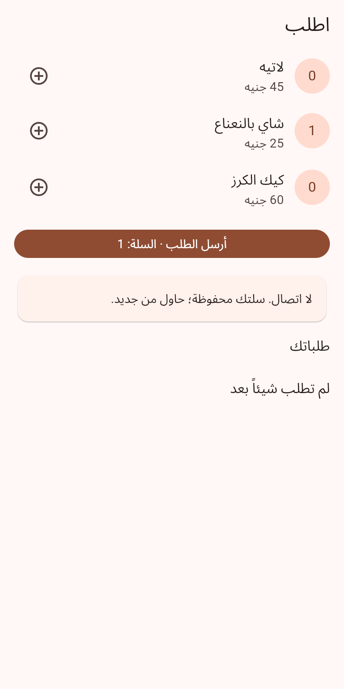
بلا شبكة
الطرفية
$ flutter test test/presentation/orders_page_test.dart
00:00 +0: loading test/presentation/orders_page_test.dart
00:00 +0: الصفحة تعرض الطلب المرسل، أو الفشل بالكلمات
00:01 +1: All tests passed!
2.5جذر التركيب
في مكان ما يجب أن يعرف أحدٌ كل صنف حقيقي: أي مصدر، وأي مستودع، وأي ساعة. وهذا المكان جذر التركيب (composition root)، وهو عادة main، وهو المكان الوحيد:
lib/orders_app.dart (جزء)
// جذر التركيب: المكان الوحيد الذي يعرف كل صنف حقيقي.void main() {
final repository = OrdersRepositoryImpl(FakeOrdersSource());
final placeOrder = PlaceOrder(
repository,
clock: () => DateTime(2026, 11, 22, 10),
);
runApp(
ChangeNotifierProvider(
create: (context) => OrdersController(placeOrder, repository),
child: MaterialApp(
debugShowCheckedModeBanner: false,
// من اليمين إلى اليسار، كما في الفصل 13 من الكتاب الخامس.
builder: (context, child) =>
Directionality(textDirection: TextDirection.rtl, child: child!),
theme: ThemeData(colorSchemeSeed: Colors.brown),
home: const OrdersPage(),
),
),
);
}
والشاشات الثلاث أعلاه ثلاثة جذور تركيب، orders_app.dart وorders_closed.dart وorders_offline.dart، يختلف كل منها في سطر واحد: الساعة، أو المصدر. وفي تطبيق حقيقي تعطيك الفكرة نفسها نسخة عرض ببيانات مزيفة، ونسخة اختبار على خادم تجريبي، ونسخة إنتاج، من الكود نفسه.
2.6حراسة القاعدة
القواعد التي تعيش في رؤوس الناس وحدها تُكسر خلال شهر: يحتاج أحدهم لوناً في المجال «مؤقتاً»، فيستورد Flutter. ويستطيع اختبار أن يقرأ استيرادات كل ملف في المجال، ويفشل حين يشير أحدها في الاتجاه الخطأ:
test/architecture_test.dart (جزء)
const forbidden = [
'package:flutter/',
'package:material_ui/',
'package:provider/',
'package:http/',
'/data/',
'/presentation/',
];
/// Every import in a domain folder that breaks the rule, as "file: import".List<String> violations(String root) => [
for (final file in Directory(
root,
).listSync(recursive: true).whereType<File>())
if (file.path.contains('/domain/') && file.path.endsWith('.dart'))
for (final line in file.readAsLinesSync())
if (line.startsWith('import ') && forbidden.any(line.contains))
'${file.path}: $line',
];
void main() {
test('المجال لا يستورد Flutter ولا البيانات ولا العرض', () {
// المجال لا يستورد إلا Dart وملفات المجال الأخرى.
expect(violations('lib/features'), isEmpty);
});
}
الطرفية
$ flutter test test/architecture_test.dart
00:00 +0: loading test/architecture_test.dart
00:00 +0: المجال لا يستورد Flutter ولا البيانات ولا العرض
00:00 +1: All tests passed!
ولتراه يلتقط شيئاً، يعمل الفحص نفسه على مجلد أمثلة فيه ملف مجال سيئ واحد، دالة تختار Color لكل حالة:
الطرفية
$ flutter test test/architecture_bad_test.dart
00:00 +0: loading test/architecture_bad_test.dart
00:00 +0: ملف في المجال يستورد Flutter يُكتشف
00:00 +0 -1: ملف في المجال يستورد Flutter يُكتشف [E]
Expected: empty
Actual: [
'test/fixtures/orders/domain/status_color.dart: import \'package:material_ui/material_ui.dart\';'
]
الفشل يسمّي الملف والاستيراد. والإصلاح أن تنقل statusColor إلى طبقة العرض، حيث مكان الألوان، وتُبقي OrderStatus وحدها في المجال.
حالات الاستخدام تعيد Result مختوماً؛ وحالات الفشل أنواع مختومة بلا كلمات، والشاشة تختار الكلمات.
جذر تركيب واحد يختار كل صنف حقيقي؛ وجذور مختلفة تعطي تطبيقات للعرض والاختبار والإنتاج من الكود نفسه.
اختبر كل طبقة وحدها بالمزيفات، وافرض قاعدة الاعتماد باختبار يقرأ الاستيرادات.
إجابات «اختبر نفسك»: 1. القاعدة مكانها المجال (في PlaceOrder)؛ والنص مكانه العرض (في describe)، بكل لغة. 2. ليعمل مع أي تنفيذ، المزيف في الاختبارات، أو الذي في الذاكرة، أو HTTP، ولا يحتاج أبداً أن يستورد طبقة البيانات. 3. كل switch على OrderFailure لا يعالجه سيتوقف عن الترجمة، بدءاً بـ describe في المتحكم، حتى يقرر أحد ما الذي يُقال للشخص.
مشاريع للتدريب
المشاريع الثلاثة تُنمي ميزة الطلبات دون لمس الملفات الموجودة: حالة استخدام جديدة، ومصدر بيانات جديد، وقاعدة معمارية جديدة. وإن أجبرك أحدها على تغيير طبقة موجودة، فاسأل لماذا قبل أن تفعل.
المشروع 2.1 · سهل
ألغِ طلباً
حالة استخدام تلغي الطلب فقط إن كان ما زال معلّقاً وأُرسل قبل أقل من خمس دقائق.
ستتدرب على: حالة استخدام بحالات فشل مختومة خاصة بها، وساعة، وحدود نافذة زمنية.
عرّف sealed class CancelFailure مع NotPending وTooLate.
اكتب CancelOrder بساعة، ودالة call(Order) تعيد Result<Order, CancelFailure>: نسخة من الطلب بحالة OrderStatus.cancelled، أو فشلاً.
اختبر أربع حالات: معلّق بعد دقيقتين، وجاهز بعد دقيقتين، ومعلّق بعد خمس دقائق بالضبط، ومعلّق بعد ست.
تلميح: قرّر، واختبر، ما يحدث عند الحد بالضبط. فهنا الدقائق الخمس ما زالت مسموحة (> لا >=)؛ اكتب ذلك في الاختبار، فلا يضطر الشخص التالي إلى التخمين.
يجب أن تكون نتيجتك هكذا:
الطرفية
$ flutter test test/domain/cancel_order_test.dart
00:00 +0: loading test/domain/cancel_order_test.dart
00:00 +0: لا يُلغى الطلب إلا وهو معلّق، وخلال خمس دقائق
00:00 +1: All tests passed!
المشروع 2.2 · متوسط
مصدر HTTP حقيقي
نفّذ OrdersSource بحزمة http، وأثبت أن المستودع والمجال يعملان معه دون تغيير.
ستتدرب على: تنفيذ واجهة من طبقة البيانات، ورموز الحالة، وMockClient من الكتاب الخامس.
HttpOrdersSource يتسلّم http.Client وعنواناً أساسياً. وpost ترسل القطع بصيغة JSON، مع مهلة، وترمي إن لم يكن رمز الحالة 201.
تأكد أن طلب الشاي يصل Order بالمجموع الصحيح، وأن الرفض يصل NetworkFailure.
تلميح: رد 409 «نفد» ليس فشل شبكة حقاً. وحين يبدأ الخادم بإرسال الأسباب، أضف فشلاً SoldOut إلى المجال، وحوّله في المستودع، ودع المترجم يريك كل شاشة يجب أن تشرحه الآن.
يجب أن تكون نتيجتك هكذا:
الطرفية
$ flutter test test/data/http_orders_source_test.dart
00:00 +0: loading test/data/http_orders_source_test.dart
00:00 +0: مصدر HTTP يحوّل الإجابات والأخطاء
00:00 +1: All tests passed!
المشروع 2.3 · تحدٍّ
ميزات تلتزم حدودها
قاعدة معمارية ثانية: يحق للميزة أن تستورد مجال ميزة أخرى، لكن لا بياناتها ولا عرضها أبداً.
لكل ملف Dart تحت lib/features جِد ميزته من المسار، features/<name>/.
ولكل استيراد جِد الميزة والطبقة اللتين يشير إليهما، لاستيرادات package: وللنسبية مثل '../../orders/presentation/...'.
أبلغ عنه حين تكون الميزة أخرى والطبقة ليست domain.
توقّع ألا يوجد بلاغ في lib/features، وأن يوجد بلاغ واحد بالضبط في مجلد أمثلة فيه ميزة menu تستورد مجال الطلبات (مسموح) ومتحكم الطلبات (غير مسموح).
تلميح: اختبار القاعدة على مثال يكسرها هو ما يثبت أنها تعمل. فالفحص الذي لم يفشل قط ربما يبحث في المكان الخطأ ببساطة.
يجب أن تكون نتيجتك هكذا:
الطرفية
$ flutter test test/features_test.dart
00:00 +0: loading test/features_test.dart
00:00 +0: الميزات لا تكلّم بعضها إلا عبر مجالها
00:00 +1: All tests passed!
تمارين
سهل وزّع هذه على المجال أو البيانات أو العرض: OrderDto، و«الطلب يتسع لعشرين قطعة على الأكثر»، وColors.green للطلبات الجاهزة، وMoney، والنص «أُرسل الطلب»، وjsonDecode.
سهل أضف الفشل SoldOut إلى failures.dart وشغّل flutter analyze. أين يشتكي، وماذا يقول لك ذلك؟
متوسط اكتب جذر تركيب رابعاً، orders_demo.dart، يبدأ مصدره بثلاثة طلبات في سجله، لعرض التطبيق على أحد بلا خادم.
متوسطMoney تحمل جنيهات كاملة. غيّرها لتحمل القروش دون تغيير أي ملف خارج المجال. أي الملفات تتغير، ولماذا هي قليلة إلى هذا الحد؟
تحدٍّ المتحكم في هذا الفصل ChangeNotifier، وهو من Flutter. هل يحق لطبقة العرض أن تعتمد على Flutter؟ وهل يمكن أن يكون المتحكم Dart خالصة، وماذا تكسب وتخسر؟ (والفصل القادم يجيب بـ Riverpod.)
إجابات التمارين في آخر الكتاب، وفي مستودع كود الكتاب.
في الفصل 3
وصل هذا الفصل كل شيء باليد في main، ومرّر المتحكم إلى الأسفل بـ Provider. والفصل القادم يستبدل الاثنين بـ Riverpod: providers يبني بعضها بعضاً، وحالة يمكن أن تكون تحميلاً أو جاهزة أو فاشلة، وكل اعتماد يُستبدل في الاختبارات بسطر واحد.
3
الفصل 3
إدارة الحالة بـ Riverpod
ستتعلم في هذا الفصل أن
تعلن الاعتماديات والحالة في صورة providers، وتدعها يبني بعضها بعضاً
تحفظ الحالة المتغيرة في Notifier، قيماً لا تتغير
تحمّل البيانات بـ FutureProvider، وتعرض كل حالات AsyncValue
تنفّذ الأفعال بـ AsyncNotifier، وتحدّث ما جعلته قديماً
تعيد بناء ما تغيّر وحده بـ select، وتعرف متى يعيد Riverpod المحاولة عنك
تستبدل أي اعتماد، في الاختبارات وفي النسخ المختلفة، باستبدال واحد
وصل الفصل 2 ميزة الطلبات باليد في main، وسلّم الشاشة ChangeNotifier بـ Provider. وهذا يعمل، وفيه ثلاث نقاط ضعف تكبر مع التطبيق: الاعتماديات تمرَّر باليد عبر المُنشئات، والـ provider الناقص لا يُكتشف إلا حين تُفتح الشاشة، وكل حالة تحميل أو خطأ تُكتب باليد. وRiverpod يجيب عن الثلاث. ويُبقي هذا الفصل طبقتي المجال والبيانات من الفصل 2 كما كانتا بالضبط، ويعيد كتابة العرض وحده.
بِت
ملفات المجال والبيانات في هذا الفصل منسوخة من الفصل 2 دون تغيير، بالسكربت الذي يبني الأمثلة. ولو احتاج Riverpod تغييراً فيها لكانت طبقات الفصل 2 خاطئة.
3.1الـ Providers
الـ provider إعلان: «هكذا تُصنع هذه القيمة». وهو ثابت في أعلى الملف، فيستطيع أي كود أن يسمّيه، ويتحقق المترجم من الاسم والنوع. والقيم نفسها لا تعيش في الـ providers؛ بل في حاوية (container) تنشئ كل قيمة أول مرة تُطلب، وتحتفظ بها. وفي التطبيق تكون الحاوية ProviderScope في الجذر؛ وفي الاختبار ProviderContainer.
class BasketNotifier extends Notifier<Map<MenuItem, int>> {
@override
Map<MenuItem, int> build() => const {};
// خريطة جديدة في كل مرة: يبلّغ Riverpod حين تكون الحالة كائناً مختلفاً.void add(MenuItem item) => state = {...state, item: (state[item] ?? 0) + 1};
void clear() => state = const {};
}
final basketProvider = NotifierProvider<BasketNotifier, Map<MenuItem, int>>(
BasketNotifier.new,
);
// حالة مشتقة: تُحسب من جديد فقط حين تتغير السلة.final basketCountProvider = Provider<int>(
(ref) => ref.watch(basketProvider).values.fold(0, (a, b) => a + b),
);
build تعيد الحالة الأولى. وstate = … تستبدلها وتبلّغ كل من يشاهدها.
والحالة لا تُغيَّر في مكانها أبداً. فـ add تبني خريطة جديدة؛ ولو كتبت state[item] = 1 لتغيّرت الخريطة القديمة، ولرأى Riverpod، وهو يقارن الحالة القديمة بـ«الجديدة»، الكائن نفسه، فلا يخبر أحداً.
وbasketCountProvider حالة مشتقة: provider يشاهد غيره ويحسب منه. ولا يُحسب من جديد إلا حين تتغير السلة، والشاشات التي لا تحتاج إلا العدد تشاهد العدد وحده.
3.3بيانات تُحمَّل: AsyncValue
historyProvider من نوع FutureProvider. ومن يشاهده يتلقى AsyncValue: تحميلاً أو بيانات أو خطأ، وأحياناً اثنين معاً، مثل بيانات قديمة وجديدة تُحمَّل. وswitch بالأنماط يغطي كل حالة، ويتحقق المترجم من ذلك:
وترتيب الحالات مهم. البيانات أولاً: إن وُجد شيء فاعرضه، حتى أثناء التحديث. ثم الخطأ. والمؤشر الدوّار فقط حين لا يوجد شيء آخر يُعرض.
ويعيد Riverpod 3 أيضاً المحاولة مع الـ provider الذي يفشل، منتظراً أطول قليلاً في كل مرة. وأثناء إعادة المحاولة تبقى القيمة في حالة تحميل، لكنها تحمل الخطأ. والاختبار يُظهر السلوكين بمصدر يفشل دائماً:
test/retry_test.dart (جزء)
test('الـ provider الفاشل يُعاد، ما لم تُطفأ إعادة المحاولة', () async {
final offline = ordersSourceProvider.overrideWithValue(
FakeOrdersSource(fails: true),
);
final retrying = ProviderContainer.test(overrides: [offline]);
debugPrint(
'default: ${await historyAfter(retrying, const Duration(milliseconds: 600))}',
);
final once = ProviderContainer.test(
overrides: [offline],
retry: (count, error) => null,
);
debugPrint(
'no retries: ${await historyAfter(once, const Duration(milliseconds: 600))}',
);
expect(once.read(historyProvider).isLoading, isFalse);
});
الطرفية
$ flutter test test/retry_test.dart
00:00 +0: loading test/retry_test.dart
00:00 +0: الـ provider الفاشل يُعاد، ما لم تُطفأ إعادة المحاولة
default: error: Exception: connection refused, still loading: true
no retries: error: Exception: connection refused, still loading: false
00:01 +1: All tests passed!
3.4الأفعال: AsyncNotifier
إرسال الطلب يأخذ وقتاً وقد يفشل. وAsyncNotifier يحمل حالته، تحميلاً أو نتيجة، والدالة التي تنفّذه:
// إرسال الطلب: تحميل أثناء العمل، ثم النتيجة.class PlaceController extends AsyncNotifier<Outcome?> {
@override
Future<Outcome?> build() async => null;
Future<void> place() async {
state = const AsyncLoading();
final lines = [
for (final e in ref.read(basketProvider).entries)
OrderLine(e.key, e.value),
];
final result = await ref.read(placeOrderProvider)(lines);
// ربما أُغلقت الشاشة أثناء الانتظار.if (!ref.mounted) {
return;
}
if (result is Ok) {
ref.read(basketProvider.notifier).clear();
// السجل قديم الآن: ارمه، فيُحمَّل من جديد لمن يشاهده.
ref.invalidate(historyProvider);
}
state = AsyncData(result);
}
}
final placeControllerProvider =
AsyncNotifierProvider<PlaceController, Outcome?>(PlaceController.new);
داخل الدوال تأخذ ref.read القيمة مرة واحدة. ومكان ref.watch هو build، حيث يجب أن يعيد التغيير البناء.
وبعد await تقول ref.mounted هل ما زال الـ provider حياً؛ فإن أُغلقت الشاشة في هذه الأثناء فلا أحد لنخبره.
وref.invalidate(historyProvider) ترمي السجل. فيتلقى من يشاهده حالة تحميل، ثم القائمة الجديدة بالطلب المرسل للتو. ولم تحتج أي شاشة أن يُقال لها «حدِّثي».
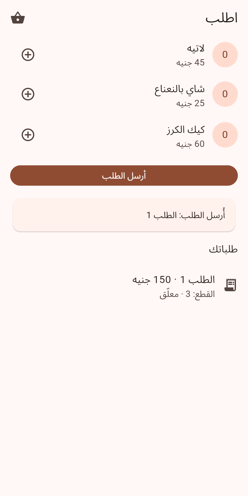
أُرسل: والسجل حُدِّث وحده
استبدال واحد: 23:00
استبدال واحد: بلا اتصال
3.5أعد بناء ما تغيّر وحده
الـ Widget الذي يشاهد السلة كلها يُعاد بناؤه كلما تغيّر فيها أي شيء. وكثيراً ما يحتاج أقل بكثير: فزر الإرسال لا يحتاج إلا أن يعرف هل السلة فارغة. وselect تشاهد قيمة واحدة محسوبة من provider، ولا تعيد البناء إلا حين تتغير تلك القيمة. والاختبار يضيف ثلاث قطع ويعدّ مرات بناء Widgetين:
$ flutter test test/select_test.dart
00:00 +0: loading test/select_test.dart
00:00 +0: select تعيد البناء فقط حين تتغير القيمة المختارة
{whole basket: 4, select isEmpty: 2}
00:00 +1: All tests passed!
أربع مرات للسلة كلها، مرة في البداية ومرة لكل قطعة. ومرتان لـ isEmpty: في البداية، وحين كفّت السلة عن أن تكون فارغة. وشارة السلة في الشريط تفعل الشيء نفسه بـ provider: تشاهد basketCountProvider، لا السلة.
3.6استبدال واحد
ولأن كل اعتماد provider، يمكن استبدال أي منها في جذر الحاوية، بـ الاستبدالات (overrides). والشاشات الثلاث أعلاه التطبيق نفسه، ولا تختلف إلا في هذا:
$ flutter test test/override_test.dart
00:00 +0: loading test/override_test.dart
00:00 +0: استبدال واحد، والقواعد تعمل بلا شبكة
00:00 +1: All tests passed!
والشاشة كلها، تُلمس كما يلمسها شخص، والسجل يحدّث نفسه بعد الطلب:
الطرفية
$ flutter test test/page_test.dart
00:00 +0: loading test/page_test.dart
00:00 +0: الإضافة والإرسال وتحديث السجل
00:01 +1: All tests passed!
أخطاء شائعة
الخطأ
ما يحدث
الحل
ref.read في build
لا يتحدث الـ Widget أبداً
ref.watch في build؛ وread في الدوال المستدعاة
ref.watch في دالة مستدعاة
إعادة بناء واشتراكات في المكان الخطأ
ref.read في الدوال المستدعاة ودوال الـ notifier
تغيير الحالة في مكانها
لا يُبلَّغ أحد
أسند قيمة جديدة إلى state
مؤشر دوّار وحده مع hasError
ينتظر الشخص إلى الأبد أثناء إعادة المحاولة
اعرض الخطأ وزر «أعد المحاولة»
تحديث الشاشات باليد بعد فعل
الشاشات المنسية تعرض بيانات قديمة
ref.invalidate للـ provider الذي صار قديماً
provider يُنشأ داخل build
provider جديد، وحالة ضائعة، مع كل بناء
providers في أعلى الملف؛ وfamily للمعاملات
الملخص
الـ providers إعلانات في أعلى الملفات؛ والقيم تعيش في حاوية (ProviderScope، ProviderContainer) وتُنشأ عند أول استخدام.
الاعتماديات providers يشاهد بعضها بعضاً بـ ref.watch؛ وملف واحد لكل ميزة يصلها.
Notifier يحمل الحالة المتغيرة قيماً لا تتغير؛ والـ providers المشتقة تحسب منها.
FutureProvider وAsyncNotifier يعطيان AsyncValue: اعمل switch على البيانات ثم الخطأ ثم التحميل، بهذا الترتيب. ويعيد Riverpod محاولة الفشل ما لم يُطلب منه غير ذلك.
select والـ providers المشتقة تعيد بناء ما تغيّر وحده؛ وref.invalidate تحدّث ما جعله فعلٌ قديماً.
الاستبدالات تبدّل أي اعتماد، بسطر واحد، للاختبارات وللنسخ المختلفة.
إجابات «اختبر نفسك»: 1. ref.watch في دوال build (للـ Widgets والـ providers)، حيث يجب أن يعيد التغيير البناء؛ وref.read في الدوال المستدعاة ودوال الـ notifier، لاستخدام القيمة مرة. 2. لأن Riverpod يبلّغ حين تصير state كائناً مختلفاً؛ وتغيير الخريطة نفسها في مكانها يُبقيها الكائن نفسه، فلا يُخبَر أحد. 3. قيمة ما زالت في حالة تحميل لكنها تحمل الخطأ، فتستطيع الشاشة أن تعرض الخطأ وزر «أعد المحاولة» بدل مؤشر دوّار.
مشاريع للتدريب
كل مشروع يضيف أداة من أدوات Riverpod لم يزد الفصل على ذكرها. والاختبارات هي المقصود: كل واحد يثبت السلوك الذي تعد به الأداة.
المشروع 3.1 · سهل
provider لكل طلب
provider يعطي طلباً واحداً برقمه، مبنياً من السجل، ومحفوظاً لكل رقم.
ستتدرب على:FutureProvider.family، وref.watch لـ future الخاص بـ provider آخر، والحفظ المؤقت.
أعلن orderProvider = FutureProvider.family<Order?, int>((ref, id) async {…}).
وفي داخله انتظر ref.watch(historyProvider.future) وأعد الطلب الذي له هذا الرقم، أو null (firstWhereOrNull من حزمة collection).
وفي اختبار أرسل طلبين، واقرأ orderProvider(1) وorderProvider(2)، وتحقق من مجموعيهما، وأن الرقم 3 يعطي null، وأن قراءة الرقم 1 من جديد تعطي الكائن نفسه تماماً.
تلميح: لأن orderProvider يشاهد السجل، فإبطال السجل بعد طلب جديد يحدّث كل providers الطلبات أيضاً. ولا شيء يجب أن يتذكر تحديثها.
يجب أن تكون نتيجتك هكذا:
الطرفية
$ flutter test test/family_test.dart
00:00 +0: loading test/family_test.dart
00:00 +0: لكل رقم طلب provider خاص به، محفوظ
00:01 +1: All tests passed!
المشروع 3.2 · متوسط
بحث يلغي نفسه
ابحث في القائمة والشخص يكتب، دون البحث عن كل حرف.
ستتدرب على:autoDispose، وfamily، وref.onDispose، وتأخير البحث بلا مؤقت.
Notifier يحمل نص البحث؛ وonChanged في حقل النص تضبطه.
searchProvider من نوع FutureProvider.autoDispose.family على نص البحث. يسجّل ref.onDispose، وينتظر 300 جزء من الثانية، ولا يبحث إلا إن لم يُرمَ في هذه الأثناء.
كتابة حرف جديد تجعل الصفحة تشاهد بحثاً جديداً: فلا يبقى للقديم مشاهد، فيُرمى، ولا يبحث أبداً.
اختبر بكتابة ثلاثة أحرف بفاصل 100 جزء من الثانية، وتأكد أن البحث لم يُنفَّذ إلا للنص الفارغ وللأخير.
تلميح: هذا تأخير البحث من الكتاب الخامس بلا Timer يُلغى: فـ autoDispose تتولى الإلغاء. ولطلب شبكة حقيقي ألغِ الطلب أيضاً في onDispose، فلا يكتمل بلا فائدة.
يجب أن تكون نتيجتك هكذا:
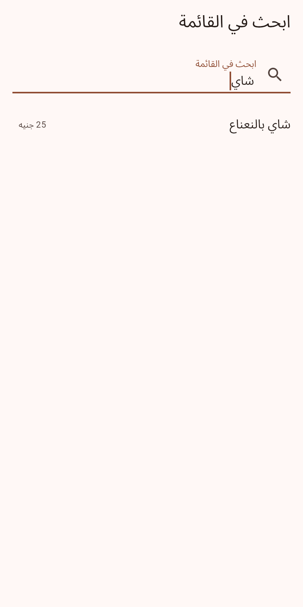
المشروع 3.2: بحث واحد، للنص الأخير.
الطرفية
$ flutter test test/search_test.dart
00:00 +0: loading test/search_test.dart
00:00 +0: آخر بحث وحده يُنفَّذ
00:01 +1: All tests passed!
المشروع 3.3 · تحدٍّ
تراجع، مجاناً
سلة تستطيع التراجع عن أي عدد من التغييرات، واحداً في كل مرة.
ستتدرب على: الحالة التي لا تتغير، وسجل للحالات داخل notifier، وcontainer.listen في الاختبارات.
كل تغيير يمر بدالة خاصة واحدة تضع الحالة الحالية في قائمة، ثم تضبط الجديدة.
undo تُرجع آخر حالة؛ وcanUndo تقول هل توجد واحدة.
اختبر تسلسلاً: إضافة، وإضافة، وإضافة، وحذف؛ ثم تراجع أربع مرات، متحققاً من السلة بعد كل مرة، ومن أن ثماني حالات أُعلنت.
تلميح: هذا لا يعمل إلا لأن الحالات لا تُغيَّر في مكانها أبداً: فكل خريطة قديمة ما زالت بالضبط كما كانت. ومع سلة متغيرة يكون «السجل» أربع إشارات إلى الخريطة نفسها، الأخيرة.
يجب أن تكون نتيجتك هكذا:
الطرفية
$ flutter test test/undo_test.dart
00:00 +0: loading test/undo_test.dart
00:00 +0: التراجع يعود حالة واحدة في كل مرة
00:00 +1: All tests passed!
تمارين
سهل غيّر BasketNotifier.add لتغيّر الخريطة في مكانها (state[item] = …). أي الاختبارات يفشل، وماذا تفعل الشاشة حين تلمس؟
سهل احذف ref.invalidate(historyProvider) من place. ماذا تعرض الصفحة بعد الطلب، ومتى تلحق؟
متوسط اعرض شريطاً سفلياً حين يُرسل الطلب، بـ ref.listen داخل build في الصفحة. لماذا listen لا watch؟
متوسط أطفئ إعادة المحاولة لـ historyProvider وحده، بمعامله retry، وانظر إلى شاشة انقطاع الاتصال. متى تختار ذلك في تطبيق حقيقي؟
تحدٍّ اكتب جذر تركيب رابعاً يستبدل historyProvider نفسه بثلاثة طلبات ثابتة. ماذا يتخطى ذلك مما لا يتخطاه استبدال المصدر؟
إجابات التمارين في آخر الكتاب، وفي مستودع كود الكتاب.
في الفصل 4
ميزة الطلبات تعيش في شاشة واحدة. والتطبيق الحقيقي فيه عشرات، وروابط تدخلها من الإشعارات والويب، وزر رجوع يجب أن يكون منطقياً، وشاشات لا يفتحها إلا من سجّل دخوله. والفصل القادم يفعل ذلك بـ go_router.
4
الفصل 4
التنقل على نطاق واسع بـ go_router
ستتعلم في هذا الفصل أن
تصف كل شاشة في التطبيق بعنوان، في موجّه واحد
تفتح أي شاشة مباشرة من رابط، بزر رجوع منطقي
تُبقي الألسنة حية، ولكل منها كومة صفحاته
تحمي الشاشات بتحويل يُرجع الناس إلى حيث أرادوا، وداخل التطبيق فقط
تتعامل مع العناوين غير الموجودة، ومع التغييرات التي يجب ألا تضيع
تنقّل الكتاب الخامس بين الشاشات بـ Navigator.push: «اعرض هذه الصفحة فوق». وهذا يعمل حتى يضطر التطبيق إلى فتح شاشة من الخارج: إشعار عن الطلب 2، أو رابط في رسالة، أو شريط العنوان في متصفح، أو جوال يستعيد التطبيق بعد إعادة التشغيل. وكل ذلك يصل في صورة عنوان لا في صورة دفع، ويجب على التطبيق أن يبني له كومة الصفحات الصحيحة. وهذا الفصل يجعل العنوان مصدر الحقيقة، بـ go_router، الموجّه الذي يرعاه فريق Flutter.
بِت
صور هذا الفصل التُقطت بفتح التطبيق على عنوان، مثل #/orders/2، كما يفعل رابط من الخارج تماماً، بدل اللمس للوصول إليه.
أولاً كل العناوين، في مكان واحد. فالشاشات تبني الروابط بهذه الدوال ولا تصل النصوص أبداً، فيتغير المسار المعاد تسميته مرة واحدة، وتُرمَّز قيمة الاستعلام دائماً:
والمسار داخل مسار آخر مسار ابن، وتوضع صفحته فوق صفحة أبيه: ففتح /menu/latte يبني القائمة والمشروب فوقها.
والصفحات تنتقل بـ context.go(address). فيقارن الموجّه العنوان الجديد بالشجرة ويبني الكومة المطابقة.
4.2الروابط العميقة
الرابط العميق (deep link) يفتح شاشة في عمق التطبيق. ولأن /orders/2 ابن لـ /orders، يبني فتحه مباشرة الصفحتين معاً، فيظهر سهم الرجوع ويعمل، مع أن الشخص لم يرَ القائمة قط:
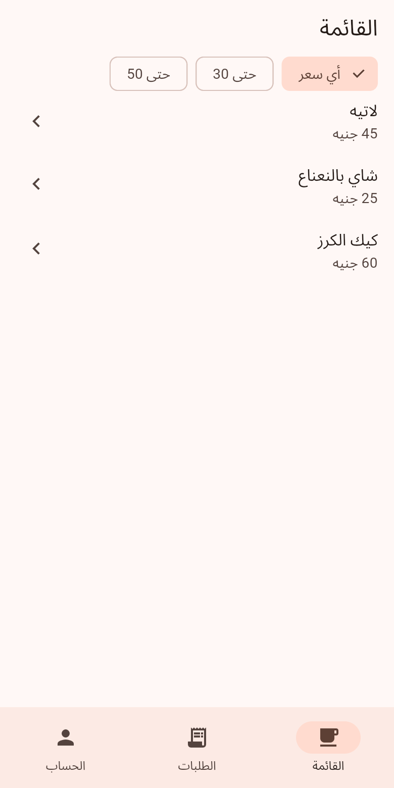
فُتح على #/menu
فُتح على #/orders/2
على الويب شريط العنوان هو العنوان. وعلى الجوالات تصل الروابط إلى التطبيق بعد إعداد صغير خارج Dart: مرشح intent في AndroidManifest.xml بنطاقك، وقدرة Associated Domains مع ملف apple-app-site-association على موقعك لـ iOS. ثم يسلّم Flutter الرابط إلى الموجّه، فيعامله كأي go.
4.3ألسنة تحفظ حالتها
لأكثر التطبيقات شريط ألسنة، ويتوقع الناس أن يتذكر كل لسان أين كانوا. وStatefulShellRoute يعطي كل لسان، أي كل فرع، موجّهه الخاص وكومته الخاصة، ويُبقيها كلها حية:
lib/cafe/pages.dart (جزء)
class TabsScaffold extends StatelessWidget {
const TabsScaffold({super.key, requiredthis.shell});
final StatefulNavigationShell shell;
@override
Widget build(BuildContext context) {
return Scaffold(
body: shell,
bottomNavigationBar: NavigationBar(
selectedIndex: shell.currentIndex,
// goBranch تنتقل بين الألسنة وتُبقي كومة كل لسان؛ ولمس اللسان الحالي من جديد يعود إلى صفحته الأولى.
onDestinationSelected: (i) =>
shell.goBranch(i, initialLocation: i == shell.currentIndex),
destinations: const [
NavigationDestination(icon: Icon(Icons.local_cafe), label: 'القائمة'),
NavigationDestination(
icon: Icon(Icons.receipt_long),
label: 'الطلبات',
),
NavigationDestination(icon: Icon(Icons.person), label: 'الحساب'),
],
),
);
}
}
الشكل 4.1: فُتح كيك الكرز، ثم لسان الطلبات، ثم العودة إلى القائمة: الكيك ما زال هناك.
والاختبار يقود الخطوات نفسها، ثم رابطاً عميقاً، ثم زر الرجوع:
$ flutter test test/tabs_test.dart
00:00 +0: loading test/tabs_test.dart
00:00 +0: الألسنة تحفظ صفحاتها، والروابط العميقة لها طريق رجوع
00:01 +1: All tests passed!
4.4التحويلات
لسان الحساب لمن سجّل الدخول فقط. والتحويل (redirect) يعمل قبل كل انتقال: ينظر إلى حيث يذهب الشخص ويعيد إما null، أي «تابع»، وإما عنواناً آخر:
lib/cafe/router.dart (جزء)
// يعمل قبل كل انتقال. أعد عنواناً جديداً لترسل الشخص إلى مكان آخر، أو null.
redirect: (context, state) {
final path = state.matchedLocation;
if (!auth.signedIn && path.startsWith(Routes.account)) {
return Routes.signIn(from: state.uri.toString());
}
if (auth.signedIn && path == '/signin') {
// تذكّر أين أراد الشخص أن يذهب، ولا تُرجع إلا إلى داخل التطبيق.final from = state.uri.queryParameters['from'] ?? Routes.menu;
return from.startsWith('/') && !from.startsWith('//')
? from
: Routes.menu;
}
returnnull;
},
من لم يسجّل الدخول وذهب إلى أي شيء تحت /account يُرسَل إلى /signin، ومعه العنوان الذي طلبه في from.
وrefreshListenable: auth تعيد تشغيل التحويل كلما تغيرت حالة تسجيل الدخول. فتسجيل الدخول في صفحته يشغّل القاعدة الثانية، فترسل الشخص إلى from: ولم يحتج أحد أن يستدعي go بعد تسجيل الدخول.
وتسجيل الخروج في صفحة الحساب يعيد الشخص إلى تسجيل الدخول، بالقاعدة الأولى، للسبب نفسه.
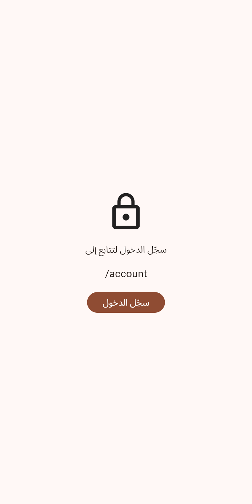
الشكل 4.2: فُتح على #/account دون تسجيل دخول.
الطرفية
$ flutter test test/redirect_test.dart
00:00 +0: loading test/redirect_test.dart
00:00 +0: الحساب يحتاج تسجيل الدخول، ويعود إلى حيث طُلب
signed out, asked /account: /signin?from=%2Faccount
after signing in: /account
after signing out: /signin?from=%2Faccount
from an outside address: /menu
00:01 +1: All tests passed!
العنوان الذي لا يطابق أي مسار، مثل /nothing/here، يصل إلى errorBuilder: صفحة كاملة تقول ذلك وتعرض طريقاً إلى البداية.
والعنوان الذي يطابق مساراً لكن برقم غير موجود، مثل /orders/9 أو /menu/coffee، شأن الصفحة: فهي تعرف ما الطلب، وتقول «لا طلب برقم 9» داخل التخطيط العادي، مع الألسنة وسهم الرجوع.
لا مسار: #/nothing/here
الطرفية
$ flutter test test/missing_test.dart
00:00 +0: loading test/missing_test.dart
00:00 +0: العناوين والأرقام المجهولة تجد صفحة تقول ذلك
00:01 +1: All tests passed!
4.6go وpush
go تضبط العنوان وتعيد بناء الكومة لتطابقه. وpush تضع صفحة فوق ما هو موجود، مثل Navigator.push، وقد لا يعود العنوان يصف الكومة. ففضّل go، ليقول العنوان الحقيقة دائماً، ويمكن فتح كل شاشة من رابط. واستخدم push للصفحات التي تعيد قيمة لما تحتها، مثل صفحة اختيار، وللنوافذ الحوارية، فهي ليست وجهات.
أخطاء شائعة
الخطأ
ما يحدث
الحل
روابط تُبنى بوصل النصوص في كل مكان
مسار معاد تسميته يكسر الروابط؛ وقيم فيها مسافات تكسر العناوين
صنف Routes واحد، وUri للاستعلامات
صفحات التفاصيل مسارات مستقلة في الأعلى
الرابط العميق بلا زر رجوع
مسارات أبناء تحت قوائمها
الألسنة مسارات عادية
الانتقال بين الألسنة يضيّع التمرير والصفحات
StatefulShellRoute.indexedStack
استدعاء go بعد تسجيل الدخول باليد
بعض طرق تسجيل الدخول تنساه
تحويل مع refreshListenable
الثقة بـ from
تحويل مفتوح إلى أي موقع
اقبل فقط المسارات التي تبدأ بـ / واحدة
int.parse على معامل مسار
انهيار مع /orders/abc
int.tryParse، وصفحة للهراء
الملخص
كل شاشة عنوان؛ وموجّه واحد يحوّل العناوين إلى أكوام صفحات؛ وصنف Routes واحد يبني كل رابط.
المسارات الأبناء تجعل الروابط العميقة تأتي مع آبائها، فيعمل الرجوع.
StatefulShellRoute.indexedStack يعطي كل لسان كومته ويُبقيها حية.
التحويل يحرس المسارات؛ وrefreshListenable تعيد تشغيله حين يتغير تسجيل الدخول؛ ولا يُقبل from إلا داخل التطبيق.
errorBuilder للعناوين المجهولة، وكل صفحة للأرقام المجهولة.
فضّل go؛ وأبقِ push للصفحات التي تعيد قيماً.
إجابات «اختبر نفسك»: 1. لأن /orders/:id ابن لـ /orders، فيبني الموجّه الصفحتين لهذا العنوان، ويعود سهم الرجوع إلى القائمة. 2. refreshListenable: auth: فالتغيير يعيد تشغيل التحويل، وقاعدته الثانية ترسل من سجّل الدخول بعيداً عن /signin إلى from. 3. null.
مشاريع للتدريب
المشاريع تستخدم الموجّه نفسه. وكل واحد يضيف شيئاً يحتاجه كل تطبيق كبير عاجلاً أو آجلاً.
المشروع 4.1 · سهل
مكان واحد لكل رابط
ابنِ كل عنوان بدوال في Routes، واختبر أنها صحيحة، ومنها ترميز الاستعلامات.
أضف دالة لكل عنوان له معامل: order(id) وdrink(id) وmenuUpTo(max) وsignIn(from:).
ابنِ الاستعلامات بـ Uri(path: …, queryParameters: …)، لا بـ '?max=$max' أبداً.
اختبر أن signIn(from: '/account?tab=2') ترمّز ? و/ و= الداخلية.
تلميح: ابحث في المشروع عن go('/: فكل نتيجة رابط لا يستخدم Routes. وقاعدة فحص أو اختبار يبحث عنها يُبقي الأمر كذلك.
يجب أن تكون نتيجتك هكذا:
الطرفية
$ flutter test test/routes_test.dart
00:00 +0: loading test/routes_test.dart
00:00 +0: الروابط تُبنى في مكان واحد، وتُرمَّز كما يجب
00:00 +1: All tests passed!
المشروع 4.2 · متوسط
الفلاتر في العنوان
صفِّ القائمة بالسعر بأزرار اختيار، واحفظ الفلتر في العنوان ليمكن مشاركته وحفظه والتراجع عنه بالرجوع.
مسار القائمة يقرأ max من الاستعلام بـ int.tryParse، ويمرره إلى الصفحة.
أزرار الاختيار تستدعي context.go(Routes.menuUpTo(limit))؛ و«أي سعر» يذهب إلى القائمة العادية.
اختبر أن فتح /menu?max=50 يُخفي الكيك، وأن لمس «حتى 30» يغيّر العنوان.
تلميح: الحالة التي يجب أن تبقى مع الرابط (فلتر، أو بحث، أو لسان مختار داخل صفحة) مكانها العنوان؛ والتي لا يجب (تعليق نصف مكتوب) مكانها الصفحة.
يجب أن تكون نتيجتك هكذا (مفتوحاً على #/menu?max=50):
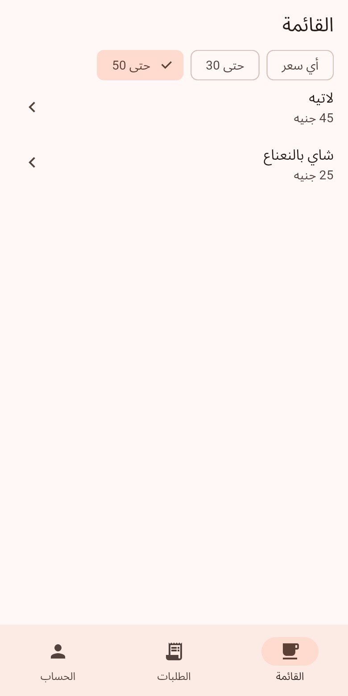
المشروع 4.2: الفلتر جاء من العنوان.
الطرفية
$ flutter test test/query_test.dart
00:00 +0: loading test/query_test.dart
00:00 +0: الفلتر يأتي من العنوان
00:01 +1: All tests passed!
المشروع 4.3 · تحدٍّ
لا تضيّع التغييرات غير المحفوظة
صفحة تعديل تسأل قبل مغادرتها وفيها تغييرات غير محفوظة، سواء بزر الرجوع أو بلسان آخر أو برابط.
ستتدرب على:onExit على مسار، والنوافذ الحوارية التي تعيد قيماً، واختبار طرق خروج متعددة.
أضف /account/edit ابناً لمسار الحساب، بحقل نص يعلّم الصفحة بأن فيها تغييرات غير محفوظة.
أعطِ المسار onExit تعيد true فوراً إن لم يكن شيء غير محفوظ، وإلا عرضت نافذة «تغادر دون حفظ؟» وأعادت الجواب.
اختبر طريقي الخروج: زر الرجوع، حيث يُبقي «ابقَ» الصفحة؛ ولسان القائمة، حيث يغادر «تجاهل».
تلميح:onExit تعمل مع كل طريقة لمغادرة المسار عبر الموجّه، ولهذا هي أفضل من التقاط زر الرجوع وحده. واحفظ علامة «غير محفوظ» في مكان يراه المسار؛ والتطبيق الحقيقي يحفظها في provider الحالة الخاص بالصفحة.
يجب أن تكون نتيجتك هكذا:
الطرفية
$ flutter test test/exit_test.dart
00:00 +0: loading test/exit_test.dart
00:00 +0: التغييرات غير المحفوظة لا تضيع خطأً
00:01 +1: All tests passed!
تمارين
سهل افتح #/orders/9 و#/orders/abc. ماذا تقول الصفحتان، ولماذا ليست صفحة «غير موجودة»؟
سهل اجعل /orders/:id مساراً في الأعلى بدل أن يكون ابناً لـ /orders، وافتحه مباشرة. ماذا تغيّر، ولماذا؟
متوسط لمس اللسان الحالي من جديد يعود إلى صفحته الأولى. جِد السطر الذي يفعل ذلك، واشرح initialLocation في goBranch.
متوسط أضف قاعدة تحويل: /menu/:id برقم ليس في القائمة يذهب إلى /menu. هل هذا أفضل للناس أم أسوأ من رسالة الصفحة؟
تحدٍّ انقل Auth إلى provider في Riverpod. كيف تعطي refreshListenable شيئاً تستمع إليه، وأين يُنشأ الموجّه لتبقى الاختبارات قادرة على استبدال تسجيل الدخول؟
إجابات التمارين في آخر الكتاب، وفي مستودع كود الكتاب.
في الفصل 5
كل صفحة في هذا الفصل استخدمت بيانات موجودة في التطبيق من قبل. والفصل القادم يأخذ الشبكة بجدية: عميل بمهلات، وأخطاء تقول للشاشة بالضبط ما حدث، وإعادة محاولة لا تزيد الأمور سوءاً، واختبارات لكل ذلك.
5
الفصل 5
الشبكة والأخطاء وإعادة المحاولة
ستتعلم في هذا الفصل أن
ترسل كل طلبات التطبيق عبر عميل واحد، بمهلة
تحوّل كل ما قد يسوء إلى أخطاء لها أنواع تعمل الشاشات switch عليها
تعيد المحاولة فقط فيما قد ينجح، بتأخير أسّي وعشوائية، وتحترم Retry-After
تجعل الطلبات المكررة آمنة بمفاتيح عدم التكرار
تجدد التوكن المنتهي مرة واحدة، مهما كثرت الطلبات التي تحتاجه
تختبر كل ذلك دون انتظار، وتشاهده مع خادم حقيقي غير موثوق
على مكتب المطور تعمل الشبكة دائماً. أما على الجوال فلا: القطار يدخل نفقاً، وخادم المقهى يُعاد تشغيله أثناء نشر جديد، وألف شخص يفتحون التطبيق حين تنتهي المباراة، والتوكن ينتهي في منتصف طلب. وقد التقط الكتاب الخامس الاستثناءات وعرض رسالة. أما هذا الفصل فيبني الطبقة التي يملكها كل تطبيق جاد بين مستودعاته والإنترنت: عميل واحد يعرف ما يعنيه كل فشل، وأيها يستحق محاولة أخرى، وكم ينتظر، وكيف يكرر طلباً دون أن يدفع الشخص مرتين.
بِت
الطرفية الأخيرة في القسم 5.4 ليست محاكاة: خادم Dart صغير يفشل في طلبين من كل ثلاثة عمل على جهاز الكتاب، وانتظر العميل فعلاً بين محاولاته. وفي كل مكان آخر تستبدل الاختبارات الانتظار بسجل، فتعمل في أجزاء من الثانية.
5.1كل فشل، في صورة نوع
الطلب يمكن أن ينتهي بسبع طرق مختلفة، وكل واحدة تحتاج من التطبيق جواباً مختلفاً. وصنف مختوم يحصيها:
lib/api/errors.dart (جزء)
// كل ما قد يسوء في طلب، في صورة أنواع تستطيع الشاشة أن تعمل switch عليها.sealedclass ApiError implements Exception {
const ApiError();
}
finalclass Offline extends ApiError {
const Offline();
}
finalclass TimedOut extends ApiError {
const TimedOut();
}
finalclass Unauthorized extends ApiError {
const Unauthorized();
}
finalclass NotFound extends ApiError {
const NotFound();
}
/// The server refused the request (400, 409, 422…), with its reason.finalclass Rejected extends ApiError {
const Rejected(this.status, this.message);
finalint status;
finalString message;
}
/// 429 and 5xx: the server could not answer now.finalclass ServerError extends ApiError {
const ServerError(this.status, {this.retryAfter});
finalint status;
final Duration? retryAfter;
}
finalclass BadResponse extends ApiError {
const BadResponse(this.detail);
finalString detail;
}
String describe(ApiError e) => switch (e) {
Offline: الطلب لم يصل إلى الخادم أبداً. وTimedOut: ربما وصل، لكن لم يأتِ جواب في الوقت.
وUnauthorized وNotFound تحتاجان شاشتيهما: سجّل الدخول من جديد، أو اشرح أن الشيء لم يعد موجوداً.
وRejected هو الخادم يقول لا لسبب (نفد، أو عنوان غير صالح)؛ ورسالته موجهة للشخص.
وServerError تغطي 429 (طلبات كثيرة جداً) ورموز 5xx؛ وBadResponse رمز 200 لا يمكن قراءة جسمه، وغالباً تطبيق قديم يكلّم خادماً جديداً.
والعميل يحوّل كل رمز حالة إلى واحد منها، مرة، في مكان واحد. واختبار يرسل رمزاً مختلفاً لكل طلب:
الطرفية
$ flutter test test/map_test.dart
00:00 +0: loading test/map_test.dart
00:00 +0: كل رمز حالة يصير خطأه
200 -> {ok: true}
201 -> BadResponse
401 -> Unauthorized
404 -> NotFound
409 -> Rejected(409, Sold out)
500 -> ServerError(500)
503 -> ServerError(503)
00:00 +1: All tests passed!
ورمز 201 بجسم ليس JSON هو BadResponse لا نجاح: فالعميل لا يعيد أبداً بيانات لم يستطع قراءتها.
// GET آمن التكرار. أما POST فبمفتاح عدم تكرار (idempotency key) فقط، يجعل الخادم يعرف التكرار.Future<Object?> get(String path) => _send('GET', path, retry: true);
Future<Object?> post(String path, Object body, {String? idempotencyKey}) =>
_send(
'POST',
path,
body: body,
headers: {'idempotency-key': ?idempotencyKey},
retry: idempotencyKey != null,
);
Future<Object?> _send(
String method,
String path, {
Object? body,
Map<String, String> headers = const {},
requiredbool retry,
}) async {
for (var attempt = 1; ; attempt++) {
try {
final result = await _once(method, path, body, headers);
log?.call('attempt $attempt: OK');
return result;
} on ApiError catch (e) {
log?.call('attempt $attempt: ${describe(e)}');
if (!retry || attempt >= policy.attempts || !retryable(e)) {
rethrow;
}
// إن قال الخادم متى نعود، فصدّقه.final wait =
(e is ServerError ? e.retryAfter : null) ??
policy.delay(attempt - 1, random);
log?.call(' waiting ${wait.inMilliseconds} ms');
await sleep(wait);
}
}
}
Future<Object?> _once(
String method,
String path,
Object? body,
Map<String, String> headers,
) async {
final request = http.Request(method, Uri.parse('$base$path'))
..headers.addAll({'accept': 'application/json', ...headers});
if (body != null) {
request.headers['content-type'] = 'application/json';
request.body = jsonEncode(body);
}
final http.Response response;
try {
// عدم الإجابة في الوقت فشل أيضاً. والمهلة تغطي الطلب كله: الإرسال والانتظار والقراءة.
response = await client
.send(request)
.then(http.Response.fromStream)
.timeout(timeout);
} on TimeoutException {
throwconst TimedOut();
} on http.ClientException {
throwconst Offline();
}
final status = response.statusCode;
if (status >= 200 && status < 300) {
if (response.bodyBytes.isEmpty) {
returnnull;
}
try {
return jsonDecode(utf8.decode(response.bodyBytes));
} on FormatException catch (e) {
throw BadResponse(e.message);
}
}
// كل رمز حالة يصير الخطأ الذي يعنيه.throwswitch (status) {
401 => const Unauthorized(),
404 => const NotFound(),
429 || >= 500 => ServerError(status, retryAfter: _retryAfter(response)),
_ => Rejected(status, _message(response)),
};
}
كل طلب يمر من _send، فلكل طلب مهلة، والترويسات نفسها، وتحويل الأخطاء نفسه، وقواعد إعادة المحاولة نفسها. ولا يستدعي أي مستودع http بنفسه.
GET تُعاد، لأن طلب القائمة من جديد لا يضر. أما POST فلا تُعاد إلا بمفتاح عدم تكرار، يشرحه القسم 5.5: فبدونه قد تُنشئ إعادة المحاولة طلباً ثانياً.
والانتظار يمر عبر sleep المعطاة في المُنشئ، فتستطيع الاختبارات أن تسجّل الانتظار بدل أن تنتظر.
5.3متى تعيد المحاولة، وكم تنتظر
إعادة المحاولة ليست لطفاً دائماً. فرمز 500 خطأ برمجي في العادة: والسؤال من جديد يعطي الخطأ نفسه ثلاث مرات. و409 Sold out لن يتوفر بعد 200 جزء من الثانية. ولا تزول إلا بعض حالات الفشل وحدها:
lib/api/retry.dart (جزء)
// كم مرة نحاول، وكم ننتظر بين المحاولات.class RetryPolicy {
const RetryPolicy({
this.attempts = 4,
this.base = const Duration(milliseconds: 200),
this.cap = const Duration(seconds: 5),
});
finalint attempts;
final Duration base;
final Duration cap;
// عشوائية كاملة: انتظار عشوائي بين الصفر وحد يتضاعف، كي لا تعيد ألف جوال المحاولة في اللحظة نفسها.
Duration delay(int retry, Random random) {
final limit = min(
cap.inMilliseconds,
base.inMilliseconds * pow(2, retry).toInt(),
);
return Duration(milliseconds: random.nextInt(limit + 1));
}
}
// فقط حالات الفشل التي قد تزول: لا اتصال، أو انتهاء المهلة، أو خادم مزدحم أو يُعاد تشغيله.bool retryable(ApiError e) => switch (e) {
Offline() || TimedOut() => true,
ServerError(:final status) =>
status == 429 || status == 502 || status == 503 || status == 504,
_ => false,
};
والانتظار يتضاعف في كل مرة (تأخير أسّي)، فيأخذ الخادم المتعب متنفساً أكبر فأكبر، ويُختار عشوائياً تحت هذا الحد (العشوائية، jitter). فبدون العشوائية تعيد كل الجوالات التي فشلت في الثانية نفسها المحاولة في الثانية نفسها، مرة بعد مرة، في موجات تُبقي الخادم متوقفاً. والاختبار يُظهر كل قاعدة بخادم يجيب بما يُقال له من رموز:
الطرفية
$ flutter test test/retry_test.dart
00:00 +0: loading test/retry_test.dart
00:00 +0: إعادة المحاولة تنتظر أطول في كل مرة، وفقط حين يفيد ذلك
GET, busy three times:
attempt 1: ServerError(503)
waiting 108 ms
attempt 2: ServerError(503)
waiting 244 ms
attempt 3: ServerError(503)
waiting 368 ms
attempt 4: OK
GET, a bug on the server:
attempt 1: ServerError(500)
POST without a key:
attempt 1: ServerError(503)
POST with a key:
attempt 1: ServerError(503)
waiting 108 ms
attempt 2: OK
429 with Retry-After: 2
attempt 1: ServerError(429)
waiting 2000 ms
attempt 2: OK
00:00 +1: All tests passed!
ثلاثة 503 ثم نجاح في المحاولة الرابعة، بانتظار أطول قليلاً كل مرة: 108 و244 و368 جزءاً من الثانية، عشوائياً تحت حدود 200 و400 و800.
و500 لا تُعاد، ولا POST بلا مفتاح. أما POST بمفتاح فتُعاد.
و429 مع Retry-After: 2 تنتظر ثانيتين بالضبط: فحين يقول الخادم متى تعود، يصدّقه العميل.
5.4المهلات، وخادم حقيقي غير موثوق
الطلب بلا مهلة قد ينتظر دقائق، والشخص يحدّق في مؤشر دوّار. والعميل يعطي كل طلب موعداً نهائياً:
test/timeout_test.dart (جزء)
final never = MockClient((r) => Completer<http.Response>().future);
final api = ApiClient(
never,
base: '',
timeout: const Duration(milliseconds: 50),
policy: const RetryPolicy(attempts: 1),
);
final watch = Stopwatch()..start();
await expectLater(api.get('/menu'), throwsA(isA<TimedOut>()));
expect(watch.elapsedMilliseconds, lessThan(1000));
});
}
الطرفية
$ flutter test test/timeout_test.dart
00:00 +0: loading test/timeout_test.dart
00:00 +0: الخادم الذي لا يجيب أبداً يصير TimedOut
00:00 +1: All tests passed!
الاختبارات تثبت القواعد؛ والشبكة الحقيقية تُظهر إحساسها. وهذا الخادم، بـ Dart الخالصة، يجيب /menu برمز 503 مرتين من كل ثلاث، ويأخذ ثلاث ثوانٍ على /slow، ويطلب الصبر على /busy:
وبرنامج صغير يرسل أربعة طلبات عبر العميل الحقيقي، بمهلة ثانية واحدة، طابعاً وقت كل سطر:
الطرفية
$ dart run bin/demo.dart
GET /menu
0.1s attempt 1: ServerError(503)
0.1s waiting 108 ms
0.2s attempt 2: ServerError(503)
0.2s waiting 244 ms
0.5s attempt 3: OK
-> [{name: Latte, price: 45}]
GET /slow
1.0s attempt 1: TimedOut
1.0s waiting 173 ms
2.2s attempt 2: TimedOut
2.2s waiting 247 ms
3.4s attempt 3: TimedOut
3.4s waiting 223 ms
4.7s attempt 4: TimedOut
-> TimedOut
GET /busy
0.0s attempt 1: ServerError(429)
0.0s waiting 1000 ms
1.0s attempt 2: ServerError(429)
1.0s waiting 1000 ms
2.0s attempt 3: ServerError(429)
2.0s waiting 1000 ms
3.0s attempt 4: ServerError(429)
-> ServerError(429)
GET /missing
0.0s attempt 1: NotFound
-> NotFound
وصلت القائمة في المحاولة الثالثة، بعد انتظارين قصيرين. وانتهت مهلة /slow بعد ثانية أربع مرات، بانتظارات عشوائية قصيرة بينها: 4.7 ثانية في المجموع، ثم TimedOut. وانتظر /busy الثانية التي طُلبت بالضبط في كل مرة، واستسلم بعد أربع محاولات. وفشل /missing فوراً: فرمز 404 لا يزول بالانتظار.
5.5تكرار الطلب بأمان
أسوأ فشل في الشبكة هو النجاح الصامت: حفظ الخادم الطلب، وضاع الجواب في طريق العودة. فيرى التطبيق خطأ، فيرسل الشخص الطلب من جديد، أو يرسله منطق إعادة المحاولة. فصار هناك طلبان، ودفعتان.
ومفتاح عدم التكرار (idempotency key) يصلح ذلك. فينشئ التطبيق مفتاحاً واحداً لكل طلب يرسله الشخص، ويرسله مع كل محاولة لهذا الطلب. ويتذكر الخادم المفاتيح التي رآها، ويجيب التكرار بالنتيجة الأولى بدل إنشاء طلب ثانٍ. ويبني المشروع 5.2 هذا بالضبط، بخادم يُضيّع الجواب الأول.
5.6عرض الأخطاء
الشاشة تعمل switch على نوع الخطأ، ولكل نوع كلماته. والقائمة التالية حُمِّلت عبر خادم متخيَّل داخل التطبيق كان مشغولاً مرتين، والصفحة تطبع ما سجّله العميل:
الشكل 5.1: مرتان 503، وانتظاران قصيران، ثم القائمة.
لم يرَ أحد خطأ: فقد امتُص فشلان في أقل من نصف ثانية. وهذا هدف الفصل كله. وحين لا تكفي إعادة المحاولة، يعطي المشروع 5.1 كل خطأ كلماته، بلغة الشخص.
أخطاء شائعة
الخطأ
ما يحدث
الحل
بلا مهلة
مؤشرات دوّارة تدور دقائق
مهلة لكل طلب، في العميل
إعادة كل شيء
الخطأ البرمجي نفسه ثلاث مرات؛ وخوادم مزدحمة تبقى متوقفة
أعد فقط: لا اتصال، وانتهاء المهلة، و429 و502 و503 و504
انتظارات ثابتة
آلاف الجوالات تعيد معاً، في موجات
تأخير أسّي مع عشوائية
إعادة POST بلا تفكير
طلبات ودفعات مكررة
مفاتيح عدم التكرار، أو لا إعادة
إعادة المحاولة في طبقات عدة
فشل واحد يصير عشرات الطلبات
أعد في العميل وحده
عرض e.toString()
«ClientException: SocketException…» على الشاشة
خطأ له نوع، وكلمات مختارة للناس
الملخص
عميل واحد يرسل كل طلب، بمهلة، ويحوّل كل نتيجة إلى بيانات أو ApiError له نوع.
أعد فقط حالات الفشل التي قد تزول وحدها؛ وانتظر بتأخير أسّي وعشوائية كاملة؛ واحترم Retry-After؛ وأعد في طبقة واحدة فقط.
GET يمكن أن تتكرر؛ وPOST فقط بمفتاح عدم تكرار يُنشأ حين يفعل الشخص الفعل.
الشاشات تعمل switch على نوع الخطأ وتختار كلمات للناس.
إجابات «اختبر نفسك»: 1. انتهاء المهلة و503؛ أما 409 فرفض لا يتغير بالانتظار، و500 خطأ برمجي في العادة يعطي الجواب نفسه من جديد. 2. كي لا تعيد الجوالات الكثيرة التي فشلت معاً المحاولة معاً: فالانتظارات العشوائية تفرّقها، فيتعافى الخادم. 3. لأن المحاولة الأولى ربما نجحت وضاع جوابها؛ وبلا مفتاح لا يستطيع الخادم أن يعرف أن الثانية تكرار، فيُنشئ طلباً ثانياً.
مشاريع للتدريب
المشاريع تُكمل العميل: كلمات لكل خطأ، وتكرار آمن، وتوكنات منتهية. ولكل منها اختبار يلتقط الخطأ الذي يمنعه.
المشروع 5.1 · سهل
كلمات لكل خطأ
دالة تعطي كل ApiError رسالة للناس، مع سبب الخادم نفسه حين يرسله.
ستتدرب على: الـ switch الشامل على الأنواع المختومة، والأنماط على الحقول.
اكتب message(ApiError e) تعبير switch بحالة لكل نوع.
استخدم نمطاً على رمز الحالة لتعطي 429 و503 كلماتهما: ServerError(status: 429 || 503)، قبل ServerError() العامة.
ولـ Rejected أعد رسالة الخادم: فهي تشرح السبب من قبل.
اختبر أربعة أخطاء، ومنها نوعا خطأ الخادم.
تلميح: في تطبيق بلغتين، مكان هذه النصوص ملفات ARB من الفصل 13 في الكتاب الخامس؛ ويبقى الـ switch كما هو ويعيد l.offline وغيرها.
يجب أن تكون نتيجتك هكذا:
lib/api/messages.dart (جزء)
// كلمات الشاشة لكل خطأ: ويجب أن يغطيها الـ switch كلها.String message(ApiError e) => switch (e) {
Offline() => 'لا اتصال. تحقق من الإنترنت وحاول من جديد.',
TimedOut() => 'المقهى يتأخر في الإجابة. حاول بعد لحظة.',
Unauthorized() => 'من فضلك سجّل الدخول من جديد.',
NotFound() => 'لم يُعثر على هذا. ربما حُذف.',
Rejected(:final message) => message,
ServerError(status: 429 || 503) => 'المقهى مزدحم جداً. حاول بعد دقيقة.',
ServerError() => 'حدث خطأ من جهتنا. ونحن نعمل عليه.',
BadResponse() => 'تعذّرت قراءة إجابة المقهى. من فضلك حدّث التطبيق.',
};
الطرفية
$ flutter test test/messages_test.dart
00:00 +0: loading test/messages_test.dart
00:00 +0: لكل خطأ كلمات، بلغة الشخص
00:00 +1: All tests passed!
المشروع 5.2 · متوسط
الطلب الذي حُفظ مرتين
أعد إنتاج مشكلة الجواب الضائع في اختبار، وأظهر أن مفتاح عدم التكرار يجعلها بلا ضرر.
ستتدرب على: خادم مزيف له ذاكرة، ومفاتيح عدم التكرار، واختبار فشل يحدث بعد النجاح.
خادم مزيف يحفظ كل طلب يصله، لكنه يرمي خطأ اتصال بدل أن يجيب الأول.
ويحفظ أيضاً خريطة من مفتاح عدم التكرار إلى رقم الطلب، ويجيب المفتاح المعروف برقم الطلب الأول.
أرسل طلباً بمفتاح، ودع العميل يعيد المحاولة: طلب واحد على الخادم.
وأرسل بلا مفتاح، و«المس من جديد» بعد الخطأ: طلبان على الخادم.
تلميح: المفاتيح يجب أن تكون فريدة لكل فعل وصعبة التخمين: UUID من حزمة uuid، يُنشأ حين يلمس الشخص «اطلب»، ويُحفظ حتى يتأكد الطلب.
يجب أن تكون نتيجتك هكذا:
الطرفية
$ flutter test test/idempotency_test.dart
00:00 +0: loading test/idempotency_test.dart
00:00 +0: مع المفتاح، الطلب المعاد يُنشأ مرة واحدة
with a key: answer {id: 1}, orders on the server: [1]
without a key, tapped twice: orders on the server: [1, 2]
00:00 +1: All tests passed!
المشروع 5.3 · تحدٍّ
تجديد واحد لطلبات كثيرة
عميل HTTP يضيف توكن الدخول إلى كل طلب، ومع 401 يجدد التوكن مرة واحدة، حتى حين تفشل طلبات عدة في اللحظة نفسها.
ستتدرب على: توسيع http.BaseClient، ونسخ الطلبات، ومشاركة Future واحد بين المستدعين.
ومع 401 ابدأ تجديداً إن لم يكن هناك واحد جارٍ، واحفظ الـ Future الخاص به في حقل؛ والطلبات التي تصل في هذه الأثناء تنتظر الـ Future نفسه.
أفرغ الحقل حين يكتمل التجديد، واحفظ التوكن الجديد، وأرسل الطلب المنسوخ من جديد.
اختبر بثلاثة طلبات متوازية وتوكن منتهٍ: ثلاثة أجوبة 200، وتجديد واحد بالضبط.
تلميح: بلا الـ Future المشترك تبدأ الطلبات الثلاثة ثلاثة تجديدات، ومع خوادم كثيرة يُبطل كل تجديد توكن الذي قبله: فيُخرج التطبيق نفسه. وتوقف بعد إعادة واحدة أيضاً: فإن حصل التوكن المجدَّد على 401 كذلك، فيجب أن يسجّل الشخص الدخول من جديد.
يجب أن تكون نتيجتك هكذا:
الطرفية
$ flutter test test/refresh_test.dart
00:00 +0: loading test/refresh_test.dart
00:00 +0: ثلاثة طلبات، وتجديد واحد
00:00 +1: All tests passed!
تمارين
سهل طلب له 4 محاولات، وأساس 200 جزء من الثانية، وحد أقصى 5 ثوانٍ. ما أطول ما يمكن أن ينتظره في المجموع قبل أن يستسلم، دون حساب الطلبات نفسها؟
سهل غيّر اختبار التحويل ليجيب الخادم برمز 200 بجسم فارغ. ماذا تعيد get، ولماذا ليس هذا BadResponse؟
متوسط أضف خطأ Cancelled وطريقة تجعل الشاشة توقف إعادة المحاولة حين يغادرها الشخص. أين ستتحقق منه؟
متوسط سجّل طريقة كل طلب ومساره ورمز حالته ومدته، دون تسجيل ترويسة Authorization ولا الجسم. لماذا هذان؟
تحدٍّ اكتب اختباراً يشغّل مئة عميل على خادم يفشل في أول ثانيتين، مع العشوائية ودونها، ويعدّ الطلبات في كل 100 جزء من الثانية. كيف يبدو الفرق؟
إجابات التمارين في آخر الكتاب، وفي مستودع كود الكتاب.
في الفصل 6
إعادة المحاولة تساعد حين تعود الشبكة في ثانية. أما حين تغيب ساعة، فما زال الناس يريدون قراءة طلباتهم والإضافة إلى سلتهم. والفصل القادم يجعل التطبيق يعمل بلا اتصال أولاً: قاعدة بيانات محلية مصدراً للحقيقة، ومزامنة حين تعود الشبكة.
6
الفصل 6
تطبيقات تعمل بلا اتصال أولاً
ستتعلم في هذا الفصل أن
تجعل مخزناً محلياً مصدر الحقيقة لكل شاشة
تحفظ التغييرات غير المرسلة في صندوق صادر، وترسلها حين تعود الشبكة
تكتب محرك مزامنة يرسل، ثم يجلب ما تغيّر وحده
تحل التعارضات حقلاً حقلاً، بمالك واضح لكل حقل
تنجو من الأجوبة الضائعة والرفض دون تكرار ولا إعادة محاولة بلا نهاية
جعل الفصل 5 التطبيق صبوراً حين ترمش الشبكة. وهذا الفصل يجعله مفيداً حين تغيب: في المترو، وفي قبو، وفي طائرة، وعلى طريق ريفي. والفكرة بسيطة وتغيّر كل شيء: الشاشات لا تنتظر الخادم أبداً. بل تقرأ وتكتب في مخزن على الجوال يجيب فوراً، ومحرك منفصل يُبقي هذا المخزن والخادم على اتفاق، كلما استطاع.
بِت
الخادم المزيف في هذا الفصل قاسٍ عمداً: ينقطع، ويضيّع جواباً بعد حفظ طلب، ويرفض الأصناف التي نفدت، ويغيّر الحالات من وراء ظهر التطبيق. وكل ذلك سيفعله بتطبيقك خادم حقيقي يوماً ما.
6.1المخزن المحلي هو الحقيقة
screens ──watch / write──▶ local store ◀──push / pull──▶ server
(outbox) sync engine
الشاشات تشاهد المخزن المحلي: تيار يعطي الطلبات الحالية، ثم كل تغيير. ولا تستدعي الخادم أبداً.
كتابة طلب تكتبه محلياً، معلَّماً بأنه ينتظر (queued): فيظهر على الشاشة فوراً، متصلاً كان الجوال أم لا.
ومحرك المزامنة يرسل التغييرات المنتظرة إلى الخادم ويجلب ما تغيّر هناك، كلما عمل: بعد كتابة، أو بزر، أو حين تعود الشبكة.
وكل طلب يحمل إلى أين وصل:
lib/offline/order.dart (جزء)
// طلب واحد كما يعرفه هذا الجوال، ومعه إلى أين وصل في طريقه إلى الخادم.class Order {
const Order({
requiredthis.id,
requiredthis.title,
this.note = '',
this.status = 'new',
this.sync = SyncState.queued,
this.version = 0,
this.error,
});
finalString id;
finalString title;
// من يملك أي حقل: الشخص يكتب الملاحظة؛ والمقهى يكتب الحالة.finalString note;
finalString status;
final SyncState sync;
finalint version;
finalString? error;
Order copyWith({
String? note,
String? status,
SyncState? sync,
int? version,
String? error,
}) => Order(
id: id,
title: title,
note: note ?? this.note,
status: status ?? this.status,
sync: sync ?? this.sync,
version: version ?? this.version,
error: error ?? this.error,
);
}
ولحقلين فيه مالكان مختلفان. فالشخص يكتب note؛ والمقهى وحده يغيّر status. وقول ذلك صراحة، لكل حقل، هو ما يجعل التعارضات قابلة للحل لاحقاً.
6.2المخزن وصندوق صادره
lib/offline/local_store.dart (جزء)
// مصدر الحقيقة لكل شاشة. الشاشات تشاهده؛ ولا تنتظر الشبكة أبداً.abstractinterfaceclass LocalStore {
Stream<List<Order>> watch();
Future<List<Order>> all();
Future<Order?> get(String id);
Future<void> put(Order order);
// صندوق الصادر: كل طلب فيه تغييرات لم يؤكدها الخادم بعد، الأقدم أولاً.Future<List<Order>> outbox();
Future<int> cursor();
Future<void> setCursor(int version);
}
watch تيار: فتُعاد بناء الشاشات حين يتغير أي شيء، أياً كان من غيّره، الشخص أم محرك المزامنة.
وصندوق الصادر (outbox) كل طلب فيه تغيير لم يؤكده الخادم، الأقدم أولاً. وهو هنا حالة على كل طلب؛ أما التطبيقات التي فيها أنواع كثيرة من التغييرات فتحفظ جدولاً منفصلاً للعمليات.
والمؤشر (cursor) يتذكر أحدث إصدار من الخادم جُلب من قبل، فلا يسأل الجلب التالي إلا عما هو أحدث.
ويحفظ الفصل المخزن في الذاكرة، لتعمل صوره في متصفح؛ ويضع المشروع 6.3 الواجهة نفسها على SQLite، ولا يتغير شيء آخر.
6.3محرك المزامنة
lib/offline/sync_engine.dart (جزء)
// أرسل ما ينتظر، ثم اجلب ما تغيّر. ويتوقف بهدوء بلا اتصال؛ ويحاول من جديد في المرة القادمة.class SyncEngine {
SyncEngine(this.local, this.remote);
final LocalStore local;
final FakeRemote remote;
Future<SyncReport> sync() async {
final report = SyncReport();
try {
for (final order inawait local.outbox()) {
try {
// لا تُرسل إلا حقول الشخص؛ والجواب يقول كم صارت نسخة الخادم حديثة.final version = await remote.push(order);
await local.put(
order.copyWith(sync: SyncState.synced, version: version),
);
report.sent++;
} on Refused catch (e) {
// الرفض لا يتغير بإعادة المحاولة: علّمه وتابع.await local.put(
order.copyWith(sync: SyncState.failed, error: e.reason),
);
report.refused++;
}
}
// فقط ما تغيّر منذ آخر مزامنة: والمؤشر أعلى إصدار رأيناه.var cursor = await local.cursor();
for (final change inawait remote.changesSince(cursor)) {
await _merge(change);
cursor = max(cursor, change['version']! asint);
report.pulled++;
}
await local.setCursor(cursor);
} on Offline {
report.offline = true;
}
return report;
}
الإرسال أولاً، بالترتيب: فيجب أن يرى الخادم تغييرات الشخص قبل أن يسأل التطبيق عما يراه الخادم.
وحين تغيب الشبكة يتوقف المحرك بهدوء. ولا يضيع شيء: فصندوق الصادر باقٍ للتشغيل التالي.
والرفض، مثل «نفد»، يُعلَّم على الطلب ويخرج من صندوق الصادر. فإعادة محاولته كل دقيقة إلى الأبد لن تفعل إلا استنزاف البطارية.
والجلب لا يسأل إلا عن الإصدارات فوق المؤشر، ويدمج كل تغيير، ويحرّك المؤشر.
والاختبار يمر على كل ما يستطيع الخادم فعله بالتطبيق:
$ flutter test test/sync_test.dart
00:00 +0: loading test/sync_test.dart
00:00 +0: الطلبات تنتظر بلا اتصال، وتُرسل مرة، والرفض لا يُعاد
offline: offline (sent 0), waiting: 2
answer lost: offline (sent 0), waiting: 2
next sync: sent 2, refused 0, pulled 2, waiting: 0
orders on server: 2
sold out: sent 0, refused 1, pulled 0
again: sent 0, refused 0, pulled 0
00:00 +1: All tests passed!
بلا اتصال ينتظر الطلبان. ثم يحفظ الخادم الطلب الأول لكن جوابه يضيع: فيرى المحرك خطأ، ويتوقف، ويُبقي الطلبين منتظرين. والمزامنة التالية ترسل الاثنين من جديد، ويبقى على الخادم طلبان لا ثلاثة، لأن رقم كل طلب هو مفتاح عدم تكراره، كما في الفصل 5. والمافن الذي نفد يُرفض مرة، ولا تحاوله المزامنة التالية من جديد.
6.4التعارضات
التعارض تغييران على الشيء نفسه، حدثا بعيداً عن بعضهما. فبلا اتصال يضيف الشخص ملاحظة، «بلا سكر»، إلى طلب؛ وفي الأثناء يعلّمه عامل المقهى جاهزاً. فحين يعود الجوال، أيهما يغلب؟ مع مالكين واضحين يغلب الاثنان: فالملاحظة للشخص، والحالة للمقهى.
lib/offline/sync_engine.dart (جزء)
// ادمج حقلاً حقلاً: حالة المقهى تغلب دائماً؛ وملاحظة الخادم فقط إن لم يكن لملاحظتنا تغيير لم يُرسل.Future<void> _merge(Map<String, Object> change) async {
final id = change['id']! asString;
final mine = await local.get(id);
final status = change['status']! asString;
final version = change['version']! asint;
if (mine == null) {
await local.put(
Order(
id: id,
title: change['title']! asString,
note: change['note']! asString,
status: status,
sync: SyncState.synced,
version: version,
),
);
} elseif (mine.sync == SyncState.queued) {
await local.put(mine.copyWith(status: status));
} else {
await local.put(
mine.copyWith(
status: status,
note: change['note']! asString,
version: version,
),
);
}
}
}
الطرفية
$ flutter test test/merge_test.dart
00:00 +0: loading test/merge_test.dart
00:00 +0: ملاحظة كُتبت بلا اتصال وحالة المقهى الجديدة تبقيان معاً
00:00 +1: All tests passed!
6.5الشاشة
إرسال الطلب يكتبه محلياً، ثم يجرّب مزامنة. فيظهر الطلب على الشاشة قبل أن تُجرَّب الشبكة أصلاً:
lib/offline/providers.dart (جزء)
Future<void> place(String title) async {
// اكتب محلياً أولاً: الطلب على الشاشة قبل أن تُجرَّب الشبكة أصلاً.await ref.read(localProvider).put(Order(id: newId(), title: title));
// إن كانت الشبكة موجودة فأرسله الآن؛ وإلا فهو ينتظر في صندوق الصادر.await ref.read(lastSyncProvider.notifier).run();
}
وفي العرض مفتاح يقطع الشبكة المتخيلة، وزر يؤدي دور المقهى، فيعلّم أول طلب جاهزاً على الخادم:
بلا اتصال: طلبان ينتظران
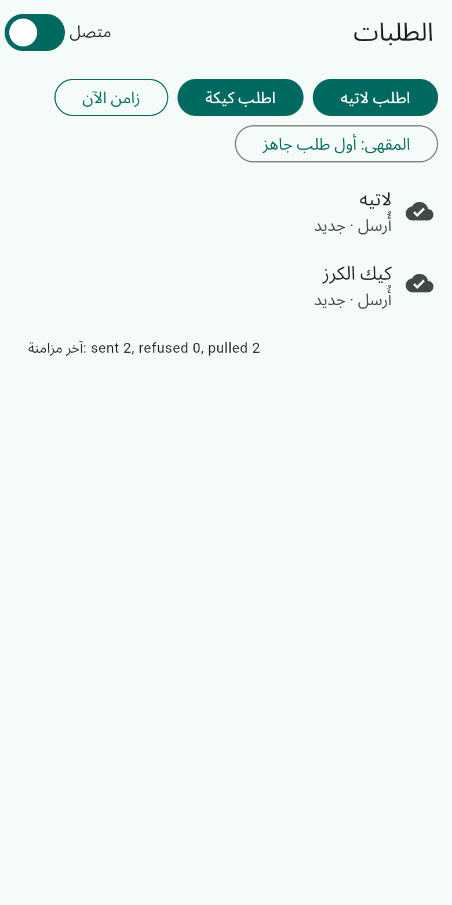
متصل من جديد: أُرسلا
المقهى علّم واحداً جاهزاً
الطرفية
$ flutter test test/screen_test.dart
00:00 +0: loading test/screen_test.dart
00:00 +0: بلا اتصال يظهر الطلب، معلَّماً بأنه ينتظر
00:01 +1: All tests passed!
6.6ما يحتاجه التطبيق الذي يعمل بلا اتصال أيضاً
الحذف يجب أن يُزامَن أيضاً. فالطلب المحذوف يصير شاهد قبر (tombstone)، صفاً معلَّماً بأنه محذوف، حتى يؤكد الخادم؛ وإلا أعاده الجلب التالي.
الحجم. قرّر ما تحفظه وإلى متى: طلبات الشهر الأخير، لا كل طلب منذ 2019.
تغييرات البنية. قاعدة البيانات المحلية تعيش أطول من إصدارات التطبيق، فتحتاج ترحيلات، كما في الكتاب الخامس.
الخصوصية. البيانات على الجوال يمكن قراءتها من النسخ الاحتياطية والجوالات المسروقة؛ ويتناول الفصل 14 التشفير وما لا يجب حفظه أصلاً.
أخطاء شائعة
الخطأ
ما يحدث
الحل
شاشات تنتظر الخادم
مؤشرات دوّارة وأخطاء كلما ضعفت الشبكة
الشاشات تشاهد المخزن المحلي
أرقام من الخادم
لا رقم بلا اتصال؛ وتكرار بعد إعادة المحاولة
أرقام عشوائية تُصنع على الجوال، وتُستخدم مفاتيح عدم تكرار
إعادة محاولة الرفض
مزامنات فاشلة بلا نهاية، وبطاريات مستنزفة
علّمها فاشلة وأخرجها من صندوق الصادر
جلب كل شيء في كل مرة
مزامنات بطيئة وبيانات مهدرة
مؤشر: فقط الإصدارات بعد آخر ما رُئي
آخر كتابة تغلب في كل شيء
ضياع تغييرات الشخص بصمت
مالك لكل حقل
حذف الصفوف محلياً
العناصر المحذوفة تعود مع الجلب التالي
شواهد قبور حتى يؤكد الخادم
الملخص
المخزن المحلي مصدر الحقيقة؛ والشاشات تشاهده ولا تنتظر الشبكة أبداً.
الكتابات تذهب إلى المخزن منتظرة؛ وصندوق الصادر يحفظها حتى يؤكد الخادم.
محرك المزامنة يرسل أولاً، ثم يجلب التغييرات بعد المؤشر؛ ويتوقف بهدوء بلا اتصال ويحاول لاحقاً.
الأرقام تُصنع على الجوال وتعمل مفاتيح عدم تكرار؛ والرفض يُعلَّم ولا يُعاد.
التعارضات تُحل بإعطاء كل حقل مالكاً، والدمج حقلاً حقلاً.
إجابات «اختبر نفسك»: 1. لأن المخزن المحلي يجيب فوراً دائماً، متصلاً كان الجوال أم لا؛ أما الخادم فقد يبطئ أو لا يمكن الوصول إليه، والشاشة التي تنتظره معطلة كلما تعطلت الشبكة. 2. لأن رقم الطلب، المصنوع على الجوال، يسافر مع كل محاولة ويعمل مفتاح عدم تكرار: فيجده الخادم محفوظاً من قبل فيحدّثه بدل إنشاء آخر. 3. لأن الرفض لا يتغير بإعادة المحاولة؛ وإبقاؤه في صندوق الصادر سيُفشل كل مزامنة إلى الأبد، فيُعلَّم فاشلاً ويُعرض على الشخص بدلاً من ذلك.
مشاريع للتدريب
المشاريع تضيف ما تركه العرض: عدد التغييرات المنتظرة، والمزامنة بلا زر، ومخزناً ينجو من إغلاق التطبيق.
المشروع 6.1 · سهل
كم طلباً ينتظر؟
provider يعدّ الطلبات التي تنتظر الإرسال، لشارة على الشاشة.
ستتدرب على: الـ providers المشتقة من StreamProvider، واختبارها بحاوية.
شاهد ordersProvider وعُدّ الطلبات التي حالة مزامنتها queued.
اختبر: اقطع الاتصال، وأرسل طلبين، وتوقع 2؛ ثم اتصل، وزامن، وتوقع 0، وكل الطلبات مُزامَنة.
تلميح: القيم تمر عبر تيار المخزن ثم الـ provider قبل أن تصل إلى العدد: فبعد الكتابة أعطها لحظة، await Future.delayed(const Duration(milliseconds: 50))، قبل قراءته. ومع Duration.zero يقرأ الاختبار مبكراً.
يجب أن تكون نتيجتك هكذا:
الطرفية
$ flutter test test/pending_test.dart
00:00 +0: loading test/pending_test.dart
00:00 +0: الشارة تعدّ ما ينتظر
00:00 +1: All tests passed!
المشروع 6.2 · متوسط
زامن حين تعود الشبكة
أرسل ما كان ينتظر فور عودة التطبيق إلى الاتصال، دون أن يلمس الشخص شيئاً.
ستتدرب على:ref.listen للآثار الجانبية، ومقارنة القيمة السابقة بالجديدة.
provider يستمع إلى onlineProvider ويشغّل مزامنة حين تتغير القيمة من false إلى true.
أبقِ الـ provider حياً بالاستماع إليه من جذر التطبيق (أو من الاختبار).
اختبر: بلا اتصال أرسل طلباً؛ ثم اتصل؛ وبعد توقف قصير يكون صندوق الصادر فارغاً والطلب على الخادم.
تلميح: على الجوال الحقيقي تأتي إشارة الاتصال من حزمة مثل connectivity_plus، وهي لا تقول إلا إن واجهة شبكة موجودة، لا إن الخادم يمكن الوصول إليه. فعاملها تلميحاً لتجربة مزامنة، لا وعداً أبداً.
يجب أن تكون نتيجتك هكذا:
الطرفية
$ flutter test test/auto_sync_test.dart
00:00 +0: loading test/auto_sync_test.dart
00:00 +0: العودة إلى الاتصال ترسل ما كان ينتظر
00:00 +1: All tests passed!
المشروع 6.3 · تحدٍّ
مخزن ينجو من إغلاق التطبيق
نفّذ LocalStore على SQLite، وشغّل محرك المزامنة عليه دون تغيير.
ستتدرب على: تنفيذ واجهة بـ sqflite، والحفاظ على ترتيب الإنشاء، وصنع تيار من قاعدة بيانات.
جدولان: orders، فيه عمود created ليحفظ صندوق الصادر ترتيبه؛ وmeta للمؤشر.
put تُدخل أو تستبدل، محافظة على created الأصلي، ثم تعلن القائمة الجديدة على تيار بث.
اختبر المحرك عليه: بلا اتصال، طلبان بترتيب إنشائهما في صندوق الصادر؛ ومتصلاً، أُرسلا؛ وحالة تغيّرت على الخادم، جُلبت؛ والمؤشر 3.
تلميح: لا يخبر SQLite أحداً أن جدولاً تغيّر، فيعلن المخزن عن كتاباته بنفسه. وحزم مثل drift تفعل ذلك عنك، باستعلامات هي تيارات.
يجب أن تكون نتيجتك هكذا:
الطرفية
$ flutter test test/sqlite_store_test.dart
00:00 +0: loading test/sqlite_store_test.dart
00:00 +0: (setUpAll)
00:00 +0: المزامنة نفسها تعمل على SQLite
00:00 +1: (tearDownAll)
00:00 +1: All tests passed!
تمارين
سهل لماذا يرسل المحرك قبل أن يجلب؟ وما الذي قد يسوء بالعكس؟
سهل أضف فعل «أعد المحاولة» للطلبات الفاشلة. ماذا يجب أن يغيّر في الطلب، وأين؟
متوسط أضف حذف طلب لم يُرسل بعد، وطلب أُرسل. لماذا يختلفان؟
متوسط صار المقهى يستطيع أيضاً تعديل الملاحظات («لا يوجد حليب شوفان»). أي قاعدة ملكية تنكسر، وكيف تغيّر الدمج؟
تحدٍّ جوالان للشخص نفسه يعدّلان ملاحظة الطلب نفسه بلا اتصال. صمّم ما يحدث حين يعود الاثنان، واكتب الاختبار.
إجابات التمارين في آخر الكتاب، وفي مستودع كود الكتاب.
في الفصل 7
أعطى الجزء الأول التطبيق هيكله: الرسم، والطبقات، والحالة، والتنقل، والشبكة، والبيانات بلا اتصال. والجزء الثاني عن الجودة، ويبدأ بما يراه الناس أولاً: نظام تصميم، لتبدو خمسون شاشة تطبيقاً واحداً.
7
الفصل 7
أنظمة التصميم في Flutter
ستتعلم في هذا الفصل أن
تحوّل قرارات التصميم إلى رموز (tokens): مقياس واحد للمسافات، وآخر للزوايا، وألوان لها أسماء
تحمل ألوان العلامة الخاصة في الثيم بـ ThemeExtension، في الوضعين الفاتح والداكن
تبني مكونات تأخذ كل قيمة من الثيم، فلا تختار الشاشات قيمة أبداً
تثبت أن كل زوج ألوان مقروء، بنسبة التباين في WCAG
تُبعد القيم الخام عن الشاشات باختبار، وتغيّر العلامة كلها بتغيير الرموز
الشاشة الأولى في التطبيق تُصمم بعناية. والخمسون تُبنى مساء خميس، بهامش 12 لأن 16 بدا كبيراً، وبنيّ يكاد يكون بنيّ العلامة، ونص أبيض على أصفر لأنه بدا جيداً على شاشة واحدة. واضرب ذلك في فريق وسنتين، فيبدو التطبيق تطبيقات كثيرة. ونظام التصميم يمنع هذا: القرارات تُتخذ مرة واحدة، قيماً لها أسماء ومكونات، والشاشات تجمعها فقط.
بِت
كل نسبة تباين في هذا الفصل حسبها اختبار من ألوان الثيم الحقيقية، وفشلت واحدة عمداً: أول فكرة لوسم. ويعرض القسم 7.4 الأرقام.
7.1الرموز
الرمز (token) قرار تصميم له اسم: لا «16 نقطة»، بل «المسافة المتوسطة». والمسافات والزوايا ثوابت بسيطة:
lib/design/tokens.dart
// المسافات: مقياس واحد لكل فراغ في التطبيق.abstractfinalclass Space {
staticconst xs = 4.0;
staticconst s = 8.0;
staticconst m = 16.0;
staticconst l = 24.0;
staticconst xl = 32.0;
}
// الزوايا: ثلاثة مقاسات، ولا شيء بينها.abstractfinalclass Radii {
staticconst s = 8.0;
staticconst m = 16.0;
staticconst l = 28.0;
}
خمس مسافات وثلاث زوايا تبدو مقيِّدة، وهذا المقصود. فحين يكون كل فراغ في التطبيق واحداً من خمسة مقاسات، تصطف الشاشات مع بعضها دون أن يقيس أحد، ويستطيع المصمم تغيير «المتوسطة» في كل مكان بتغيير رقم واحد.
7.2العلامة في الثيم
تعطي Material كل تطبيق ColorScheme، تبنيه من لون بذرة واحد مجموعةً كاملة من الأدوار: الأساسي، والسطح، والخطأ، والألوان التي تُكتب على كل منها. والعلامة تحتاج عادة ألواناً أخرى قليلة: لوناً مميزاً للأسعار، وأخضر لـ«جاهز»، وكهرمانياً للتحذيرات. وThemeExtension تضيفها إلى الثيم، فتتبعه إلى الوضع الداكن وعبر كل حركة:
lib/design/brand.dart (جزء)
// ألوان العلامة نفسها، بجانب ألوان Material: فـ ThemeExtension تسافر مع الثيم.
@immutable
class Brand extends ThemeExtension<Brand> {
const Brand({
requiredthis.accent,
requiredthis.onAccent,
requiredthis.success,
requiredthis.onSuccess,
requiredthis.warning,
requiredthis.onWarning,
requiredthis.muted,
});
// كل لون يأتي مع لون ما يُكتب عليه.final Color accent;
final Color onAccent;
final Color success;
final Color onSuccess;
final Color warning;
final Color onWarning;
final Color muted;
staticconst light = Brand(
accent: Color(0xFF6D4C41),
onAccent: Color(0xFFFFFFFF),
success: Color(0xFF1B5E20),
onSuccess: Color(0xFFFFFFFF),
warning: Color(0xFFFFB300),
onWarning: Color(0xFF3E2723),
muted: Color(0xFFF3EDE7),
);
staticconst dark = Brand(
كل لون يأتي مع لونه on، لون النص والأيقونات المرسومة عليه. فلا يختار أي مكون لون النص بنفسه.
وlerp تقول كيف ننتقل بين علامتين. فحين ينتقل الشخص إلى الوضع الداكن يحرّك MaterialApp الثيم، ومع lerp تتحرك ألوان العلامة معه بدل أن تقفز:
الطرفية
$ flutter test test/lerp_test.dart
00:00 +0: loading test/lerp_test.dart
00:00 +0: تبديل الثيم يحرّك ألوان العلامة أيضاً
t = 0.0 accent #6D4C41 muted #F3EDE7
t = 0.25 accent #88675B muted #C1BBB5
t = 0.5 accent #A28275 muted #8F8984
t = 0.75 accent #BC9D8E muted #5D5652
t = 1.0 accent #D7B8A8 muted #2B2420
00:00 +1: All tests passed!
والثيم يجمع كل شيء، مرة واحدة:
lib/design/theme.dart (جزء)
ThemeData buildTheme(
Brightness brightness, {
Brand? brand,
Color seed = const Color(0xFF6D4C41),
}) {
// Material تبني مخططاً كاملاً سهل القراءة من لون بذرة واحد.final colors = ColorScheme.fromSeed(seedColor: seed, brightness: brightness);
final shape = RoundedRectangleBorder(
borderRadius: BorderRadius.circular(Radii.m),
);
return ThemeData(
colorScheme: colors,
extensions: [
brand ?? (brightness == Brightness.light ? Brand.light : Brand.dark),
],
// المكونات تأخذ أشكالها من الرموز مرة واحدة، هنا، لا في كل شاشة.
filledButtonTheme: FilledButtonThemeData(
style: FilledButton.styleFrom(
shape: shape,
minimumSize: const Size(0, 48),
padding: const EdgeInsets.symmetric(horizontal: Space.l),
),
),
outlinedButtonTheme: OutlinedButtonThemeData(
style: OutlinedButton.styleFrom(
shape: shape,
minimumSize: const Size(0, 48),
),
),
cardTheme: CardThemeData(shape: shape, margin: EdgeInsets.zero),
);
}
7.3المكونات
الشاشات يجب ألا تعرف كيف يبدو الزر، بل ما يعنيه فقط. ومجموعة صغيرة من المكونات تأخذ كل قيمة من الرموز والثيم:
وامتداد على BuildContext يُبقي الشاشات قصيرة: context.brand وcontext.colors وcontext.text. وصفحة كتالوج تعرض كل مكون في مكان واحد، في الثيمين، فيراجع المصممون والمطورون الشيء نفسه:
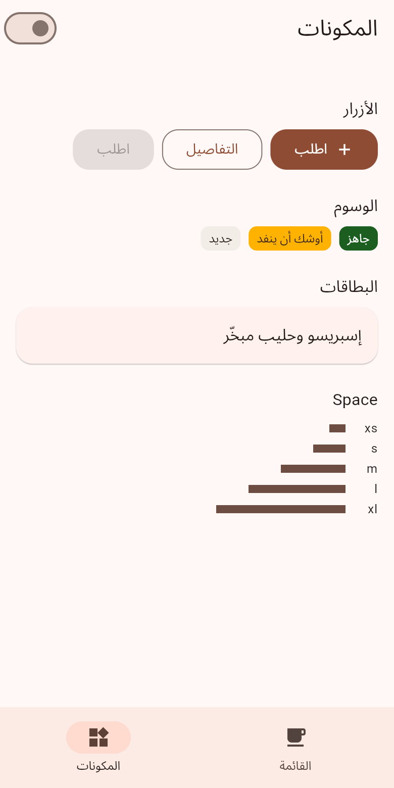
الكتالوج، فاتحاً
المكونات نفسها، داكنة
ثم لا تحتوي الشاشة الحقيقية أي قرار خاص بها، بل مكونات ورموزاً وقيماً من الثيم فقط:
زوج الألوان مقروء حين تكون نسبة التباين بينهما عالية بما يكفي. وتأتي النسبة من الإضاءة النسبية للونين، من 1:1 (اللون نفسه) إلى 21:1 (أسود على أبيض)؛ وتطلب إرشادات WCAG نسبة 4.5:1 على الأقل للنص العادي. ويحسب Flutter الإضاءة؛ واختبار يحسب كل زوج في نظام التصميم، في الثيمين:
test/contrast_test.dart (جزء)
double contrast(Color a, Color b) {
final (hi, lo) = (
max(a.computeLuminance(), b.computeLuminance()),
min(a.computeLuminance(), b.computeLuminance()),
);
return (hi + 0.05) / (lo + 0.05);
}
الطرفية
$ flutter test test/contrast_test.dart
00:00 +0: loading test/contrast_test.dart
00:00 +0: كل زوج ألوان مقروء في الثيمين
dark
text on surface 14.4 : 1
text on primary 7.7 : 1
text on accent 7.4 : 1
text on success 6.2 : 1
text on warning 9.0 : 1
text on muted 11.8 : 1
price (accent on surface) 10.0 : 1
light
text on surface 16.4 : 1
text on primary 6.5 : 1
text on accent 7.6 : 1
text on success 7.9 : 1
text on warning 7.7 : 1
text on muted 14.8 : 1
price (accent on surface) 7.2 : 1
00:00 +1: All tests passed!
كل الأزواج تنجح، وأدناها 6.2:1، الوسم الأخضر في الوضع الداكن. ويعرض المشروع 7.1 هذا الاختبار وهو يلتقط أول فكرة لوسم التحذير.
أخطاء شائعة
الخطأ
ما يحدث
الحل
ألوان سداسية عشرية في الشاشات
خمسون بنياً، ووضع داكن يفوته نصفها
أدوار الثيم وThemeExtension
مسافات تُختار لكل شاشة
شاشات تكاد تصطف
مقياس مسافات، وGap
لون بلا لونه on
كل شاشة تخمّن لون النص، وبعضها يخطئ
أزواج ألوان، تُختار وتُختبر معاً
لا lerp في الامتداد
ألوان العلامة تقفز والباقي يتحرك
نفّذ lerp بـ Color.lerp
قراءة الثيم بـ context غيرك
أجزاء من الشاشة تُبقي الثيم القديم
كل Widget يقرأ الثيم في build الخاصة به
الثقة بالعين في التباين
نص غير مقروء في ضوء الشمس ولكثير من الناس
اختبار تباين لكل زوج
الملخص
الرموز تسمّي قرارات التصميم: مقياس للمسافات، ومقاسات قليلة للزوايا، وألوان لها أسماء.
ColorScheme.fromSeed تعطي أدوار Material؛ وThemeExtension تضيف ألوان العلامة الخاصة، مع lerp للحركة وقيم للوضعين الفاتح والداكن.
المكونات تأخذ كل قيمة من الرموز والثيم؛ والشاشات تجمع المكونات فقط.
كل زوج ألوان يُختبر لتباين WCAG لا يقل عن 4.5:1، في الثيمين.
اختبار حارس يُبعد القيم الخام عن الشاشات؛ والعلامة الجديدة مجموعة رموز جديدة.
إجابات «اختبر نفسك»: 1. ليُقرَّر لون النص والأيقونات المرسومة عليه، ويُختبر تباينه، مرة واحدة مع اللون نفسه، بدل أن يخمّنه كل مكون. 2. لن تتحرك ألوان العلامة مع باقي الثيم: فأثناء الانتقال ستبقى فاتحة ثم تقفز إلى الداكنة في النهاية. 3. 4.5:1 على الأقل؛ والمقياس من 1:1، اللون نفسه مرتين، إلى 21:1، أسود على أبيض.
مشاريع للتدريب
المشاريع تحوّل وعود نظام التصميم إلى اختبارات، ثم تستخدمه لصنع علامة ثانية.
المشروع 7.1 · سهل
التقط وسماً غير مقروء
كانت أول فكرة لـ«أوشك أن ينفد» نصاً أبيض على كهرماني. أثبت بدالة التباين أنه غير مقروء، ثم اختر لون نص أفضل.
اكتب اختباراً يحسب contrast(white, amber) ويتوقع 4.5 على الأقل، مع reason يطبع النسبة.
شغّله واقرأ الفشل.
جرّب بنياً داكناً جداً للنص على الكهرماني، وأضف الزوج إلى اختبار التباين الرئيسي.
تلميح: الألوان الزاهية (الأصفر والكهرماني والأخضر الفاتح والسماوي) تحتاج نصاً داكناً؛ والألوان العميقة تحتاج نصاً فاتحاً. ودالة التباين تحسم كل جدال في ذلك في ثانية.
يجب أن تكون نتيجتك هكذا (الفكرة الأولى، فاشلة):
الطرفية
$ flutter test test/contrast_bad_test.dart
00:00 +0: loading test/contrast_bad_test.dart
00:00 +0: الزوج غير المقروء يُكتشف
00:00 +0 -1: الزوج غير المقروء يُكتشف [E]
Expected: a value greater than or equal to <4.5>
Actual: <1.7948656834741148>
Which: is not a value greater than or equal to <4.5>
white on amber is 1.8 : 1
المشروع 7.2 · متوسط
لا قيم خام في الشاشات
اختبار يفشل حين تحتوي شاشة لوناً خاماً أو هامشاً رقمياً أو حجم خط، ويقول أين.
ستتدرب على: التعبيرات النمطية على ملفات الكود، وأرقام الأسطر، واختبار فحص على مثال ثابت.
لكل ملف Dart تحت lib/screens، ابحث في كل سطر عن Color(0x أو Colors.، وعن EdgeInsets…( مع رقم، وعن fontSize:.
أبلغ عن كل منها بصيغة file:line: what، وتوقع ألا يوجد بلاغ.
اكتب شاشة «مستعجلة» في مجلد أمثلة، فيها الثلاثة، وتأكد أن الدالة نفسها تبلّغ عن كل واحد.
تلميح: هذه فكرة اختبار المعمارية في الفصل 2 نفسها: القواعد التي ينساها الفريق تصير اختبارات لا تنسى. واسمح بالاستثناءات صراحة (هنا Colors.transparent)، وأبقِ القائمة قصيرة.
يجب أن تكون نتيجتك هكذا (الشاشات تنجح؛ والمثال يُكتشف):
الطرفية
$ flutter test test/guard_test.dart
00:00 +0: loading test/guard_test.dart
00:00 +0: الشاشات تستخدم الرموز، لا القيم الخام
00:00 +1: All tests passed!
الطرفية
$ flutter test test/guard_bad_test.dart
00:00 +0: loading test/guard_bad_test.dart
00:00 +0: الشاشة ذات القيم الخام تُكتشف
00:00 +0 -1: الشاشة ذات القيم الخام تُكتشف [E]
Expected: empty
Actual: [
'test/fixtures/hurried_screen.dart:8: a raw colour',
'test/fixtures/hurried_screen.dart:9: a raw spacing',
'test/fixtures/hurried_screen.dart:12: a raw colour',
'test/fixtures/hurried_screen.dart:12: a raw font size'
]
المشروع 7.3 · تحدٍّ
علامة ثانية
افتتح مخبز بِت بجوار المقهى. أعطه ألوانه الخاصة، بالمكونات والشاشات نفسها، وأثبت أن أزواجه مقروءة أيضاً.
ستتدرب على: التثييم بالرموز، وألوان البذرة، وإعادة استخدام الاختبارات بين العلامات.
تطير بـ Widget بين صفحتين بـ Hero، وتُدرّج قائمة بمتحكم واحد
تحترم من يطلب حركة أقل، وتثبت ذلك باختبار
الحركة هي الطريقة التي يشرح بها التطبيق نفسه. بطاقة تكبر تقول «أُضيف شيء هنا»؛ وصورة تطير من القائمة إلى صفحة تقول «هذا المشروب نفسه، عن قرب». وحين تُتقن لا يلاحظها أحد. وحين تُسيء تكون أول ما يُلاحظ: قفزة، أو تقطّع، أو تلاشٍ يطول وأنت مستعجل. يعامل هذا الفصل الحركة كما عامل الفصل 7 الألوان: قرارات قليلة لها أسماء، ومكونات تستخدمها، واختبارات تفحصها.
بِت
كل رقم في هذا الفصل طبعه اختبار، إطاراً إطاراً، وأشرطة الصور لقطات حقيقية أُخذت والحركة تجري. ولكي يلحق بها المتصفح، تعمل تلك التطبيقات أبطأ عشر مرات؛ ويعرض القسم 8.5 السطر الوحيد الذي يفعل ذلك.
8.1رموز الحركة
كل حركة تحتاج قرارين: كم تطول، وكيف تتغير سرعتها في الطريق، أي المنحنى. وكلاهما يصير رمزاً:
lib/motion/motion.dart
import'package:material_ui/material_ui.dart';
// رموز الحركة: ثلاث مدد وثلاثة منحنيات، مثل مقياس المسافات في الفصل 7.abstractfinalclass Motion {
staticconst short = Duration(milliseconds: 150);
staticconst medium = Duration(milliseconds: 300);
staticconst long = Duration(milliseconds: 500);
// ما يصل يبطئ في النهاية؛ وما يغادر يسرع.staticconst enter = Easing.emphasizedDecelerate;
staticconst exit = Easing.emphasizedAccelerate;
staticconst move = Easing.standard;
}
// من يفعّل «تقليل الحركة» يحصل على النتيجة فوراً.
Duration motion(BuildContext context, Duration duration) =>
MediaQuery.disableAnimationsOf(context) ? Duration.zero : duration;
ثلاث مدد تكفي معظم التطبيقات: short للأشياء الصغيرة (شارة، مفتاح)، وmedium لبطاقة أو صفحة، وlong للحركات الكبيرة عبر الشاشة.
المنحنيات من Easing في Material 3. ما يصل يبدأ سريعاً ويستقر برفق، فيظهر فوراً ويهبط بنعومة؛ وما يغادر يبدأ ببطء ثم يسرع مبتعداً؛ وما يتحرك على الشاشة يأخذ المنحنى القياسي.
motion(context, duration) تعيد صفراً حين يطلب الشخص من النظام حركة أقل. وكل حركة في التطبيق تطلب مدتها عن طريقها.
المنحنى يحوّل الوقت المنقضي، من 0 إلى 1، إلى المسافة التي قطعتها الحركة. واختبار يطبع أربعة منها:
الطرفية
$ flutter test test/curves_test.dart
00:00 +0: loading test/curves_test.dart
00:00 +0: المنحنيات، خطوة خطوة
time 0.00 0.25 0.50 0.75 1.00
linear 0.00 0.25 0.50 0.75 1.00
easeInOut 0.00 0.13 0.50 0.87 1.00
standard 0.00 0.61 0.88 0.98 1.00
emphasizedDecelerate 0.00 0.83 0.95 0.99 1.00
00:00 +1: All tests passed!
بعد ربع الوقت يكون linear قد قطع ربع الحركة، وeaseInOut 13% فقط؛ أما emphasizedDecelerate من Material فقد قطع 83%. ولهذا يبدو الوصول به سريعاً حتى في 300 ms: يحدث كل شيء تقريباً في الربع الأول، والباقي هبوط. والحركة الخطية تبدو آلية للسبب المعاكس: لا شيء في العالم الحقيقي يبدأ ويتوقف بأقصى سرعته.
8.2الحركة الضمنية
أسهل حركة في Flutter ألا تكتبها. الـ Widgets التي تبدأ أسماؤها بـ Animated تراقب قيمها بنفسها؛ فإذا أعطاها إعادة البناء قيمة جديدة تحركت إليها وحدها. فبطاقة الطلب تكبر ويتغير لونها وتستدير زواياها حين يُضاف أول لاتيه، ويظهر المجموع تدريجياً:
الشاشة تنادي setState(() => count++) فقط. واختبار يضغط الزر ويطبع شفافية المجموع وارتفاع البطاقة كل 50 ms:
الطرفية
$ flutter test test/implicit_test.dart
00:00 +0: loading test/implicit_test.dart
00:00 +0: AnimatedOpacity، إطاراً إطاراً
0 ms opacity 0.00 height 96
50 ms opacity 0.74 height 130
100 ms opacity 0.89 height 157
150 ms opacity 0.95 height 170
200 ms opacity 0.98 height 176
250 ms opacity 1.00 height 179
300 ms opacity 1.00 height 180
00:00 +1: All tests passed!
العمودان يتبعان منحنييهما: بعد 50 ms صار المجموع ظاهراً بنسبة 74% (وصول، بـ Motion.enter)، بينما قطع الارتفاع 40% من طريقه (Motion.move). وهذه اللحظة نفسها في المتصفح، مبطَّأة:
shots/card-film.png560px
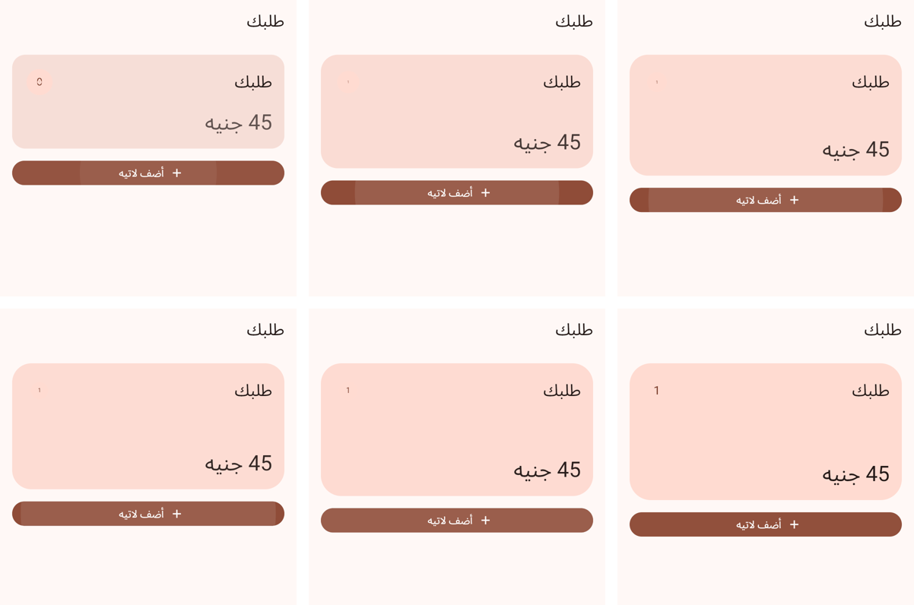
البطاقة في ست لحظات بعد الضغط (من اليسار إلى اليمين، ثم السطر الثاني): تكبر وتستدير، ويظهر المجموع، وتصغر الشارة القديمة بينما تكبر الجديدة.
الشارة تستخدم AnimatedSwitcher، الذي يحرّك بين ابنين مختلفين. ويعرف أنهما مختلفان من مفتاحيهما: ValueKey(count) تجعل شارة الرقم 1 Widget جديداً، لا شارة الصفر بنص جديد. ولولا المفتاح لحدّث Flutter النص في مكانه، ولم يتحرك شيء. ويثبت المشروع 8.1 أن الرقمين على الشاشة معاً وهما يتقاطعان.
8.3الحركة الصريحة
الـ Widgets الضمنية تتحرك من قيمة إلى أخرى. وبعض الحركة بلا قيمة نهائية: حلقة تدور والقهوة تُحضَّر، أو نبضة على طلب حي. ولهذه تمسك الساعة بنفسك، أي AnimationController:
المتحكم يحتاج vsync، مؤقتاً (ticker) يناديه مرة في كل إطار. وSingleTickerProviderStateMixin يعطي الحالة واحداً، ويوقفه حين لا تكون الصفحة ظاهرة، فلا تكلّف الحلقة المخفية شيئاً.
..repeat() يشغّله من 0 إلى 1 كل ثانيتين، إلى الأبد، وdispose يوقفه. ونسيان dispose يترك المؤقت يعمل بعد إغلاق الصفحة؛ وفي نسخ التطوير يتوقف Flutter بخطأ يسمّي الحالة صاحبة المؤقت النشط.
AnimatedBuilder يعيد بناء builder في كل إطار. وكل ما لا يتحرك يوضع في child: يُبنى مرة ويُسلَّم إلى الـ builder في كل مرة.
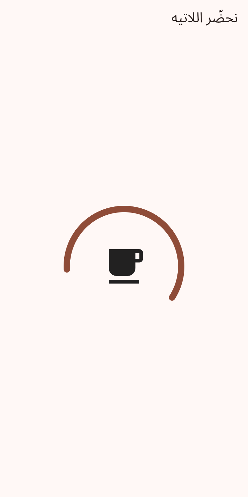
الحلقة تدور؛ والكوب يُبنى مرة واحدة.
الكوب يعدّ مرات بنائه، واختبار يشغّل 60 إطاراً:
الطرفية
$ flutter test test/child_test.dart
00:00 +0: loading test/child_test.dart
00:00 +0: ابن AnimatedBuilder يُبنى مرة واحدة
60 frames of the ring, the cup was built 1 time
00:00 +1: All tests passed!
بناء واحد لستين إطاراً. ولو كُتب الكوب داخل الـ builder لبُني 61 مرة: لا ضرر لأيقونة واحدة، ومكلف لبطاقة مليئة بالنصوص والصور. ويقيس الفصل 9 كم يكلف ذلك.
8.4الأبطال (Heroes)
حين يفتح الشخص مشروباً، يجب أن تنتقل صورته من القائمة إلى الصفحة لتتبعها العين. ويسمي Flutter هذا Hero: أعطِ الوسم (tag) نفسه لـ Widget في كل صفحة، وأثناء التنقل يرفعه Flutter من الصفحة الأولى ويطير به إلى مكانه في الثانية.
الضغط على «لاتيه» (اللحظات من اليسار إلى اليمين): الدائرة البنية تطير من القائمة وتكبر إلى الصفحة، والصفحتان تتبدلان حولها.
لم يلزم شيء آخر: لا متحكم ولا مواضع. وقاعدتان تُبقيان الأبطال سليمة. الوسم فريد في الصفحة (بطلان بالوسم latte في قائمة واحدة خطأ)، فالأوسمة من المعرّفات لا الأسماء. والـ Widget يجب أن يبدو متشابهاً في الطرفين، لأن Flutter يطير بـ Widget الوجهة بعد تغيير حجمه؛ ودائرة تصير مربعاً في منتصف الطيران تبدو عطلاً.
8.5إبطاء الزمن
أشرطة الصور في هذا الفصل أُخذت من نسخ من التطبيقات تبدأ بسطر واحد زائد:
lib/hero_menu_slow.dart
import'package:flutter/scheduler.dart';
import'hero_menu.dart'as app;
// مبطَّأة لأشرطة صور الكتاب: كل حركة تأخذ عشرة أضعاف وقتها.void main() {
timeDilation = 10;
app.main();
}
timeDilation يمطّ كل حركة في التطبيق. وهو للناس لا للتطبيق: اجعله 5 أو 10 وأنت تعمل على انتقال، فترى ما يحدث في كل إطار بدل ومضة ضبابية. وهكذا أيضاً يجب أن تُراجَع الحركة مع المصممين. ولا تنشره أبداً.
8.6حركة أقل
عند بعض الناس تسبب الحركة على الشاشة دواراً أو غثياناً؛ وآخرون يفضلون هاتفاً أهدأ فقط. وفي Android إعداد («إزالة الصور المتحركة»)، وفي iOS آخر («تقليل الحركة»)، ويبلغه Flutter بـ MediaQuery.disableAnimationsOf(context). ولأن كل حركة هنا تأخذ مدتها من motion()، يفحص اختبار واحد البطاقة كلها:
$ flutter test test/reduce_test.dart
00:00 +0: loading test/reduce_test.dart
00:00 +0: مع تقليل الحركة يكون التغيير فورياً
one frame after the tap: height 180
00:00 +1: All tests passed!
بعد إطار واحد من الضغط تكون البطاقة في ارتفاعها النهائي. والحركة الأقل لا تعني غياب الاستجابة: البطاقة ما زالت تكبر والمجموع ما زال يظهر، بلا رحلة فقط. والحركة التي تحمل معنى (حلقة تقدّم، مؤشر تحميل) تبقى تتحرك؛ أما الزينة فتتوقف.
أخطاء شائعة
الخطأ
ما يحدث
الحل
مدد ومنحنيات تختارها كل شاشة
تطبيق يتحرك كل جزء فيه بسرعته
رموز الحركة
منحنيات خطية
حركة تبدو آلية
منحنيات Material حسب الدور
لا مفتاح في AnimatedSwitcher
النص يتغير في مكانه؛ لا شيء يتحرك
مفتاح من القيمة
متحكم بلا dispose
مؤقت يعمل بعد إغلاق الصفحة
dispose() في الحالة
Widgets ثابتة داخل الـ builder
تُبنى في كل إطار
مرّرها child
تجاهل الحركة الأقل
بعض الناس لا يستخدمون التطبيق براحة
كل مدة عبر motion()، واختبار
الملخص
للحركة رموز أيضاً: مدد قليلة وثلاثة منحنيات، للوصول والمغادرة والتحرك.
المنحنى يحوّل الوقت إلى تقدّم؛ والوصول يقطع معظم حركته مبكراً ويهبط برفق.
الـ Widgets الضمنية Animated… تتحرك إلى القيم الجديدة وحدها؛ وAnimatedSwitcher يحتاج مفتاحاً ليرى ابناً جديداً.
AnimationController يقود الحركة التي بلا قيمة نهائية؛ والأجزاء الثابتة في child الخاص بـ AnimatedBuilder.
Hero يطير بـ Widget بين الصفحات بوسمه؛ وtimeDilation يبطئ كل شيء للمراجعة.
كل مدة تمر عبر motion()، فالحركة الأقل اختبار واحد.
إجابات «اختبر نفسك»: 1. ليظهر ما يصل فوراً ثم يستقر برفق: معظم الحركة يحدث في الربع الأول من الوقت (83% مع emphasizedDecelerate)، فيبدو سريعاً، والنهاية البطيئة تبدو هبوطاً لا توقفاً. 2. يخبر AnimatedSwitcher أن الابن Widget جديد؛ ولولاه لحُدّث الابن القديم في مكانه ولم يكن هناك ما يُحرَّك بينهما. 3. كل جزء من الصورة لا يتغير من إطار إلى إطار؛ يُبنى مرة ويُمرَّر إلى الـ builder في كل إطار.
مشاريع للتدريب
المشاريع تختبر ما قد تفوته العين، ثم تستخدم متحكماً واحداً لقائمة كاملة وثيماً واحداً لكل الصفحات.
المشروع 8.1 · سهل
الرقمان معاً
أثبت باختبار أن الرقم القديم والجديد على الشاشة معاً في منتصف حركة الشارة، وأن الجديد وحده يبقى في النهاية.
ستتدرب على:pump بمدة، وpumpAndSettle، والباحثات التي تعدّ.
اعرض صفحة الطلب، واضغط الزر، وشغّل إطاراً واحداً لتبدأ الحركة.
شغّل 150 ms، نصف Motion.medium، وتوقّع «0» واحداً و«1» واحداً.
نادِ pumpAndSettle وتوقّع أن «0» اختفى.
تلميح: احذف key من الشارة وشغّل الاختبار مرة أخرى: يفشل في المنتصف، لأن هناك شارة واحدة فقط.
يجب أن تكون نتيجتك هكذا:
الطرفية
$ flutter test test/badge_test.dart
00:00 +0: loading test/badge_test.dart
00:00 +0: الرقمان على الشاشة معاً وهما يتقاطعان
halfway: "0" 1, "1" 1
00:00 +1: All tests passed!
المشروع 8.2 · متوسط
قائمة متدرجة
عناصر القائمة تصل واحداً بعد الآخر، صاعدة ومتلاشية إلى الظهور، يقودها كلها متحكم واحد، مع زر لإعادة الحركة.
أعطِ الصفحة متحكماً واحداً مدته 800 ms، يبدأ حين تظهر الصفحة، ومدته من motion().
أعطِ العنصر i الشريحة Interval(i × 0.15, 0.4 + i × 0.15) من المتحكم، مع Motion.enter.
أضف زر «أعد الحركة» ينادي controller.forward(from: 0)، واختباراً يطبع شفافية كل عنصر كل 200 ms.
lib/stagger.dart (جزء)
for (final (i, name) in items.indexed)
Builder(
builder: (context) {
// كل عنصر يبدأ بعد قليل: وInterval تعطي كلاً منها شريحته من المتحكم نفسه.final slice = CurvedAnimation(
parent: controller,
curve: Interval(
i * 0.15,
0.4 + i * 0.15,
curve: Motion.enter,
),
);
return FadeTransition(
opacity: slice,
child: SlideTransition(
position: Tween(
begin: const Offset(0, 0.6),
end: Offset.zero,
).animate(slice),
child: Card(
margin: const EdgeInsets.fromLTRB(16, 8, 16, 0),
child: ListTile(title: Text(name)),
تلميح: الـ CurvedAnimation تُصنع في build، وهذا مقبول هنا لأن الصفحة تُبنى مرة والانتقالات تستمع إلى المتحكم بنفسها. ولو كانت الصفحة تُعاد بناؤها كثيراً لكان مكانها الحالة، تُصنع مرة وتُتخلص منها.
يجب أن تكون نتيجتك هكذا:
shots/stagger-film.png560px
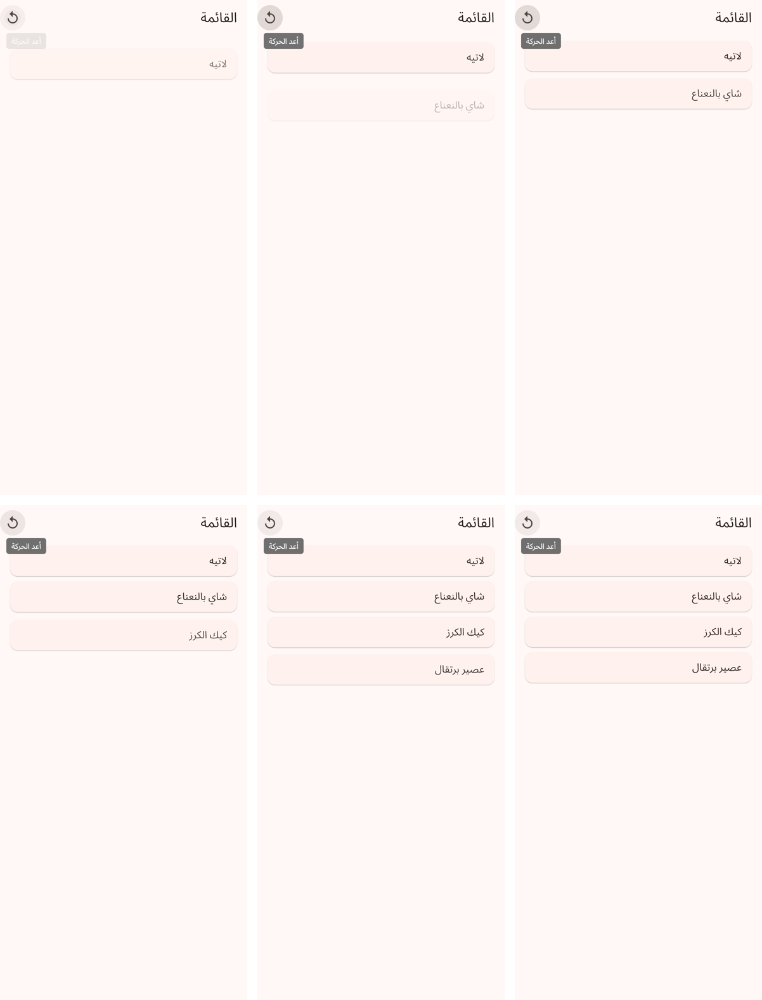
المشروع 8.2: بعد «أعد الحركة» تصل العناصر الأربعة واحداً بعد الآخر (اللحظات من اليسار إلى اليمين).
الطرفية
$ flutter test test/stagger_test.dart
00:00 +0: loading test/stagger_test.dart
00:00 +0: كل عنصر يصل بعد الذي قبله بقليل
0 ms 0.00 0.00 0.00 0.00
200 ms 0.98 0.83 0.00 0.00
400 ms 1.00 1.00 0.95 0.68
600 ms 1.00 1.00 1.00 0.99
800 ms 1.00 1.00 1.00 1.00
00:00 +1: All tests passed!
المشروع 8.3 · تحدٍّ
انتقال واحد لكل الصفحات
استبدل انتقال الصفحات الخاص بالمنصة بانتقال التطبيق نفسه، تلاشٍ وانزلاق قصيران، على Android وiOS، في الثيم؛ ومع الحركة الأقل تظهر الصفحات فوراً.
ستتدرب على:PageTransitionsBuilder وPageTransitionsTheme، واختبار تنقل في منتصفه.
اكتب PageTransitionsBuilder يعيد الابن كما هو حين تكون الحركة أقل، وإلا FadeTransition حول SlideTransition، بمنحنيي الوصول والمغادرة من رموز الحركة.
ضعه في pageTransitionsTheme في الثيم للمنصتين.
اختبر الانتقال في منتصفه، مرة عادية ومرة مع الحركة الأقل، واطبع شفافية الصفحة الجديدة.
تلميح: اعرض الحالتين تطبيقين مختلفين (key مختلف على MaterialApp)؛ وإلا بدأت الحالة الثانية وصفحات الأولى ما زالت في المكدس.
يجب أن تكون نتيجتك هكذا:
الطرفية
$ flutter test test/transition_test.dart
00:00 +0: loading test/transition_test.dart
00:00 +0: انتقال الصفحة يتلاشى وينزلق، ما لم تُقلَّل الحركة
halfway through the push: normal 0.95, reduced motion: no fade at all
00:00 +1: All tests passed!
تمارين
سهل غيّر منحنى البطاقة من Motion.move إلى Curves.linear، وشغّل اختبار الحركة الضمنية مرة أخرى، وقارن الارتفاعات عند 50 ms.
سهل اجعل الشارة تنزلق إلى أعلى بدل أن تكبر. أي سطر واحد يتغير؟
متوسط حين يجهز الطلب، يجب أن تُكمل حلقة التحضير الدورة التي تقوم بها ثم تتوقف، بدل أن تتجمد حيث هي. أي دوال المتحكم تستخدم؟
متوسط أعطِ الأبطال flightShuttleBuilder يُبقي الدائرة مستديرة أثناء الطيران، أياً كان شكل الطرفين. متى يلزم ذلك؟
تحدٍّ اكتب اختباراً يفشل إن صنع أي ملف تحت lib/ مدة Duration بـ milliseconds: خارج lib/motion/. ماذا يحمي، وماذا يجب أن يسمح به؟
إجابات التمارين في آخر الكتاب، وفي مستودع كود الكتاب.
في الفصل 9
الحركة الناعمة تحتاج كل إطار في وقته: 16 ميلي ثانية في 60 Hz، و8 في 120. والفصل القادم يقيس الإطارات، ويجد العمل الذي يؤخرها، ويصلحه: إعادة البناء، والتخطيط، والصور، والقوائم، بـ DevTools وبالاختبارات.
9
الفصل 9
الأداء: التقطّع والذاكرة وسرعة الفتح
ستتعلم في هذا الفصل أن
تفكر بالإطارات: 16 ميلي ثانية في 60 Hz، و8 في 120، وماذا يحدث حين يتأخر إطار
تعيد بناء ما تغيّر فقط، وتثبت ذلك بعدّ مرات البناء في اختبار
تفك الصور بالحجم الذي تُعرض به، وتقيس الذاكرة التي توفرها
تُسرّع بدء التطبيق بتشغيل الأعمال المستقلة معاً وعرض شيء فوراً
تُبعد العمل الثقيل عن الـ isolate الرئيسي، وتحصر إعادة الرسم في طبقتها
نادراً ما يقول الناس إن التطبيق بطيء. يقولون إنه «يبدو رخيصاً»، أو «يتقطع»، أو «يسخّن الهاتف»، أو «يأخذ دهراً ليفتح». ولكل واحدة منها سبب يمكن قياسه: إطار أخذ وقتاً أطول مما يجب، أو صورة ملأت الذاكرة، أو بدء انتظر الأشياء واحداً واحداً. ويقيس هذا الفصل كل سبب باختبار يطبع أرقاماً، ثم يصلحه، ثم يقيس مرة أخرى.
بِت
الاختبارات في هذا الفصل تعدّ الأشياء: مرات البناء، ومرات الرسم، والبايتات، والإطارات. والأعداد واحدة على كل جهاز، فتصلح اختبارات جيدة. أما الميلي ثانية فتعتمد على الهاتف: ويعرض القسم 9.5 كيف تُقاس على جهاز حقيقي، حيث يكون لها معنى.
9.1ميزانية الإطار
الشاشة في 60 Hz تعرض صورة جديدة كل 16.7 ميلي ثانية؛ وفي 120 Hz كل 8.3. ولكل صورة يعمل Flutter في مكانين. في خيط الواجهة (UI thread)، الـ isolate الرئيسي الذي يجري فيه كود Dart، يبني الـ Widgets ويخطط أماكنها ويسجل ما سيُرسم. وفي خيط الرسم (raster thread) يحوّل المحرك تلك التسجيلات إلى بكسلات على معالج الرسوم. وإن فات أيَّهما الموعد، تعرض الشاشة الصورة السابقة مرة أخرى، وترى العين تقطّعاً: jank.
وينتج عن هذا ثلاث قواعد:
اعمل أقل في كل إطار. كل Widget يُعاد بناؤه، وكل صف يُبنى، وكل طبقة تُرسم، تكلّف وقتاً من الإطار الذي يحتاجها.
اعمل العمل الثقيل في مكان آخر. ما دام كود Dart يحلل JSON كبيراً في خيط الواجهة، لا يمكن بناء أي إطار إطلاقاً.
قِس في وضع profile. نسخ التطوير (debug) أبطأ بكثير من نسخ الإصدار، عمداً، لتدعم إعادة التحميل السريع والتأكيدات. فلا تحكم على السرعة في debug أبداً؛ استخدم flutter run --profile على هاتف حقيقي.
9.2أعد البناء أقل
صفحة الطلب فيها ثلاثون مشروباً وشارة بعدد القطع. والنسخة الأولى تحفظ العدد في حالة الصفحة:
تبدو بريئة. لكن setState تعيد تشغيل build كلها، والصفوف كائنات جديدة في كل مرة، فيُعاد بناء كل واحد منها. وكل صف يعدّ مرات بنائه، واختبار يضغط الزر مرة:
class DrinkColumn extends StatelessWidget {
const DrinkColumn({super.key});
@override
Widget build(BuildContext context) => SingleChildScrollView(
child: Column(children: [for (var n = 1; n <= 30; n++) DrinkRow(n: n)]),
);
}
العدد صار ValueNotifier، ولا يستمع إليه إلا ValueListenableBuilder حول الشارة. والصفحة نفسها لا يُعاد بناؤها أبداً. (ومزوّد Riverpod لا يراقبه إلا الشارة، كما في الفصل 3، يفعل الشيء نفسه.)
الصفوف في Widget خاص بها، يُصنع بـ const. والـ Widget الثابت هو الكائن نفسه في كل مرة، وFlutter يتخطى إعادة بناء Widget لم يتغير.
صفر صفوف أُعيد بناؤها. ثلاثون صفاً لا شيء بالنسبة إلى الهاتف؛ لكن الخطأ نفسه في أعلى شاشة كبيرة، فيها صور ورسوم بيانية ونصوص، هو بداية تقطّع التطبيقات. والعادة رخيصة: أبقِ الحالة منخفضة في الشجرة بقدر انخفاض الـ Widgets التي تستخدمها، واجعل ما لا يعتمد عليها const.
9.3الصور والذاكرة
كاميرا الهاتف تلتقط صوراً بحجم 4032 في 3024 بكسل. والقائمة تعرضها بحجم 56 في 56. والملف صغير لأن JPEG يضغط جيداً، لكن ليرسمه Flutter عليه أن يفكّه إلى بكسلات خام، أربعة بايتات لكل بكسل، وتبقى تلك البايتات في الذاكرة ما دامت الصورة محفوظة. واختبار يفك صورة القائمة بالطريقتين:
$ flutter test test/image_test.dart
00:00 +0: loading test/image_test.dart
00:00 +0: ذاكرة صورة مفكوكة
file on disk: 0.32 MB
decoded, full size: 4032 x 3024, 46.51 MB
decoded, cacheWidth 168: 168 x 126, 0.08 MB
00:00 +1: All tests passed!
ملف بثلث ميغابايت يصير 46.5 MB من الذاكرة حين يُفك بحجمه الكامل: أكثر مما تعطيه هواتف كثيرة لتطبيق من أجل كل صوره. وإذا فُك بالحجم الذي يُعرض به أخذ 0.08 MB، أي أقل بستمئة مرة تقريباً. وفي الـ Widget تفعل هذا cacheWidth، محسوبة من الحجم على الشاشة وكثافة بكسلات الهاتف:
lib/menu.dart (جزء)
final width = (56 * MediaQuery.devicePixelRatioOf(context)).round();
return Scaffold(
appBar: AppBar(title: const Text('القائمة')),
// لا يُبنى إلا ما على الشاشة من صفوف، وقليل حولها.
body: ListView.builder(
itemCount: 1000,
itemExtent: 72,
itemBuilder: (context, i) => ListTile(
leading: ClipRRect(
borderRadius: BorderRadius.circular(12),
// فُكّ الصورة بالحجم الذي تُعرض به، لا بالحجم الذي التُقطت به.
child: Image.asset(
'assets/photos/latte.jpg',
width: 56,
height: 56,
fit: BoxFit.cover,
cacheWidth: width,
),
),
title: Text('مشروب ${i + 1}'),
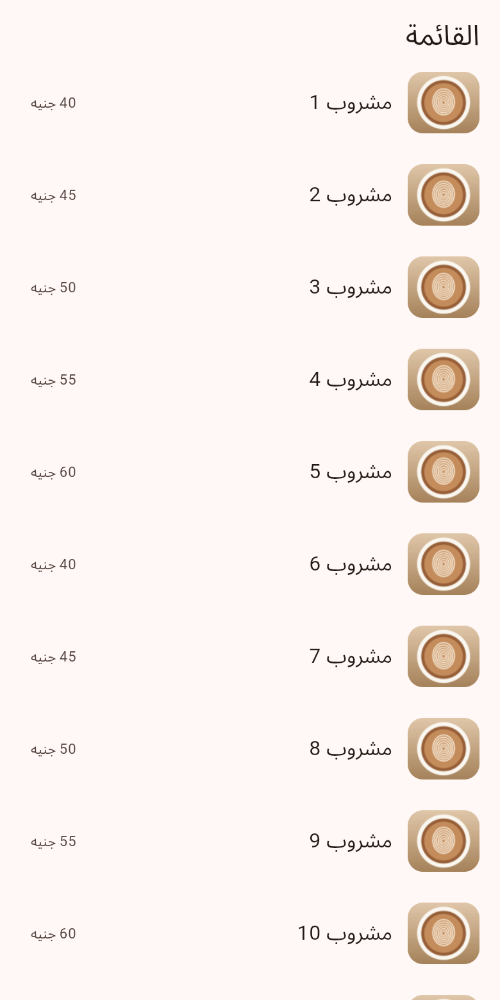
ألف مشروب، وكل صورة مفكوكة بعرض 168 بكسل
الكثافة في هذا الهاتف 3، فالـ 56 بكسلاً منطقياً هي 168 بكسلاً حقيقياً: الصورة حادة بأقصى ما تسمح به الشاشة، لا أكثر. وزيادة الذاكرة لا تظهر تقطّعاً في البداية؛ بل تظهر تطبيقاً يُقتل في الخلفية، أو هاتفاً يسخن ويبطؤ بعد دقائق من التمرير.
9.4بدء سريع
يُحكم على التطبيق في ثانيته الأولى. ودالة main شائعة تقرأ الإعدادات، ثم تفتح قاعدة البيانات، ثم تجلب القائمة، ثم تعرض شيئاً. والخطوات الثلاث هنا بدائل تنتظر قدر ما قد تنتظره الحقيقية:
lib/startup.dart (جزء)
Future<void> startOneByOne() async {
await readSettings();
await openDatabase();
await fetchMenu();
}
// الخطوات الثلاث لا تعتمد على بعضها: ابدأها معاً.Future<void> startTogether() =>
Future.wait([readSettings(), openDatabase(), fetchMenu()]).then((_) {});
// اعرض شيئاً فوراً؛ وحمّل الباقي خلفه.void main() {
final ready = startTogether();
runApp(
MaterialApp(
debugShowCheckedModeBanner: false,
// من اليمين إلى اليسار، كما في الفصل 13 من الكتاب الخامس.
builder: (context, child) =>
Directionality(textDirection: TextDirection.rtl, child: child!),
theme: ThemeData(colorSchemeSeed: Colors.brown),
home: FutureBuilder(
future: ready,
builder: (context, snapshot) =>
snapshot.connectionState == ConnectionState.done
? const MenuPage()
: const Splash(),
),
),
);
}
الطرفية
$ flutter test test/startup_test.dart
00:00 +0: loading test/startup_test.dart
00:00 +0: ثلاث خطوات، واحدة بعد الأخرى أو معاً
one by one: 904 ms
together: 401 ms
00:01 +1: All tests passed!
واحدة بعد الأخرى تتراكم الانتظارات: 300 + 200 + 400، أي نحو 900 ms. والخطوات لا يحتاج بعضها بعضاً، فـ Future.wait تبدأها معاً، ويجهز التطبيق حين تنتهي أبطؤها: نحو 400 ms. وrunApp لا تنتظر إطلاقاً: شاشة ترحيب (أو، وهو أفضل، القائمة من آخر زيارة، كما في الفصل 6) تظهر في الإطار الأول، والشاشة الحقيقية تحل محلها حين ينتهي العمل.
9.5القياس على هاتف حقيقي
الأعداد تقول لك إن التغيير يعمل أقل. أما كم يستغرق ذلك العمل فيعتمد على الهاتف، فالميلي ثانية تُقاس على هاتف، والأفضل هاتف Android متوسط عمره بضع سنوات، لأنه الهاتف الذي في أيدي كثير من مستخدميك:
flutter run --profile يبني التطبيق كنسخة إصدار تقريباً، لكنه يُبقي الخطاطيف التي تحتاجها الأدوات. وافتح DevTools من الرابط الذي يطبعه.
صفحة Performance ترسم كل إطار عمودين، للواجهة وللرسم، مقابل ميزانية الإطار. والإطارات البطيئة حمراء؛ واختيار واحد منها يعرض ما ملأه من بناء وتخطيط ورسم. وفعّل «Track widget builds» لترى إعادات البناء في القسم 9.2 بأسمائها.
صفحة Memory تعرض ذاكرة التطبيق عبر الزمن؛ وتمرير القائمة بصور كاملة الحجم يجعل الخط يصعد بقفزات من عشرات الميغابايت.
flutter run --profile --trace-startup يكتب الوقت حتى الإطار الأول في build/start_up_info.json.
showPerformanceOverlay: true على MaterialApp يرسم منحنيي الإطار على شاشة الهاتف نفسها، وهو مفيد حين يجرّب التطبيقَ شخصٌ آخر.
أخطاء شائعة
الخطأ
ما يحدث
الحل
الحكم على السرعة في وضع debug
إصلاح مشكلات غير موجودة، وتفويت الحقيقية
flutter run --profile على هاتف حقيقي
setState في أعلى شاشة كبيرة
كل شيء يُعاد بناؤه لتغيير صغير
الحالة منخفضة بقدر مستخدميها؛ وconst للباقي
صور كاملة الحجم في المصغرات
عشرات الميغابايت لكل صورة؛ والتطبيق يُقتل في الخلفية
cacheWidth مضروبة في كثافة البكسلات
خطوات البدء تُنتظر واحدة بعد الأخرى
ثانية أولى تضيع في الانتظار
Future.wait، وإطار أول فوراً
تحليل بيانات كبيرة في خيط الواجهة
شاشة متجمدة أثناء ذلك
Isolate.run (المشروع 9.2)
حركة تشارك طبقة مع رسم ثقيل
الرسم يُعاد في كل إطار
RepaintBoundary (المشروع 9.3)
الملخص
لكل إطار 16 ms في 60 Hz، و8 في 120؛ والعمل في خيط الواجهة أو خيط الرسم الذي يتجاوزها تقطّع.
أبقِ الحالة منخفضة والباقي const: ضغطة كانت تعيد بناء 30 صفاً لا تعيد بناء أي صف.
فُك الصور بحجمها على الشاشة: 46.5 MB تصير 0.08 MB.
شغّل أعمال البدء المستقلة معاً واعرض إطاراً أول فوراً: 900 ms تصير 400.
عُدّ العمل في الاختبارات؛ وقِس الوقت في وضع profile على هاتف حقيقي، بـ DevTools.
إجابات «اختبر نفسك»: 1. setState تشغّل build الصفحة كلها، فتصنع Widgets صفوف جديدة، وFlutter يعيد بناء كل Widget هو كائن جديد. أما الـ Widget الثابت (const) فيصنعه المترجم مرة، وهو الكائن نفسه كل مرة، فيرى Flutter أنه لم يتغير ويتخطاه. 2. 4032 × 3024 × 4 بايتات، نحو 46.5 MB، لأن الصورة المفكوكة تحفظ أربعة بايتات (أحمر وأخضر وأزرق وشفافية) لكل بكسل، أياً كان حجم الملف المضغوط. 3. حين لا تحتاج أي منها نتيجة غيرها؛ والخطوة التي تحتاج نتيجة أخرى يجب أن تنتظرها، وإن ظلت تستطيع أن تجري بجانب الخطوات التي لا تحتاجها.
مشاريع للتدريب
المشاريع تقيس ثلاثة أسباب أخرى للتقطّع: القوائم الطويلة، والعمل الثقيل في خيط الواجهة، وإعادة الرسم التي تنتشر.
المشروع 9.1 · سهل
كم تكلّف القائمة الطويلة حقاً
قائمة من 1000 مشروب، مكتوبة بطريقتين. عُدّ الصفوف التي تُصنع والصفوف التي تُبنى في كل منهما، ثم مرّر وعُدّ مرة أخرى.
ستتدرب على:ListView وListView.builder، والعدادات في الاختبارات، وtester.drag.
عُدّ مرات الصنع بدالة تصنع كل صف، ومرات البناء بالعداد داخل DrinkRow.
اعرض ListView(children: [...]) وListView.builder بألف صف لكل منهما، واطبع العددين.
اسحب قائمة الـ builder مسافة 3000 بكسل، واطبع كم صفاً حياً وكم صُنع إجمالاً.
$ flutter test test/list_test.dart
00:00 +0: loading test/list_test.dart
00:00 +0: قائمة من 1000 مشروب، كم صفاً يُبنى
ListView(children:) 1000 rows created, 16 built
ListView.builder 16 rows created, 16 built
after scrolling 3000 pixels: 12 rows alive, 69 created in all
00:01 +1: All tests passed!
تلميح: النتيجة فاجأت المؤلف: القائمتان كلتاهما لا تبنيان إلا الصفوف الـ 16 القريبة من الشاشة، لأن ListView كسولة في الحالتين. والفرق هو الألف Widget التي تصنعهاListView(children:) قبل أن تعرض شيئاً، وتحتفظ بها؛ ومع بيانات من خادم، يعني ذلك أيضاً عمل ألف صف مقدماً. وبعد التمرير، صنعت الـ builder 69 صفاً إجمالاً ولا تُبقي حياً إلا 12.
المشروع 9.2 · متوسط
التحليل خارج الـ isolate الرئيسي
طلبات اليوم تصل في 15 MB من JSON. اجمعها في الـ isolate الرئيسي وبـ Isolate.run، وعُدّ كم إطاراً كان يمكن رسمه أثناء العمل.
ولّد 200,000 طلب بصيغة JSON، واكتب total(json) التي تحللها وتجمع الأسعار.
شغّل مؤقتاً يدق كل 16 ms، كما تفعل الإطارات، وعُدّ دقاته أثناء العمل.
شغّل total مباشرة، ثم داخل Isolate.run، وقارن الوقت والإطارات المستحقة والإطارات المرسومة.
test/isolate_test.dart (جزء)
// A frame is due every 16 ms: count how many times the main isolate was free to draw one.Future<(int, int, int)> whileWorking(FutureOr<int> Function() work) async {
var frames = 0;
final ticker = Timer.periodic(
const Duration(milliseconds: 16),
(_) => frames++,
);
final watch = Stopwatch()..start();
final result = await work();
final ms = watch.elapsedMilliseconds;
ticker.cancel();
return (result, ms, frames);
}
يجب أن تكون نتيجتك هكذا (الميلي ثانية تتغير قليلاً في كل تشغيل):
الطرفية
$ flutter test test/isolate_test.dart
00:00 +0: loading test/isolate_test.dart
00:00 +0: الإطارات الضائعة أثناء تحليل JSON كبير
JSON: 15.0 MB, 200000 orders
on the main isolate: 429 ms, 26 frames due, 0 drawn
with Isolate.run: 436 ms, 27 frames due, 25 drawn
00:01 +1: All tests passed!
تلميح: في الـ isolate الرئيسي لا تدق دقة واحدة: طوال نحو 400 ms لم يكن التطبيق يستطيع رسم شيء، ولا تحريك شيء، ولا الرد على لمسة. ومع Isolate.run يأخذ العمل وقتاً قريباً، لكن تُرسم الإطارات كلها تقريباً؛ والإطار أو الإطاران الناقصان هما اللحظات التي يقضيها الـ isolate الرئيسي في بدء الـ isolate واستلام جوابه. أرسل إليه النص الخام واستلم النتيجة الصغيرة (هنا مجموع)؛ فإرسال كائنات كبيرة بين الـ isolates له وقت نسخ خاص به.
المشروع 9.3 · تحدٍّ
أبعد الرسم البياني عن إطارات المؤشر
لوحة فيها شريط تقدّم يتحرك، وتحته رسم بياني للمبيعات لا يتغير أبداً. أثبت أن الرسم البياني يُرسم في كل إطار من الحركة، ثم أوقف ذلك بـ RepaintBoundary.
ستتدرب على:CustomPainter، والطبقات وRepaintBoundary، وعدّ مرات الرسم.
اجعل الرسم البياني CustomPainter يعدّ مرات paint، وshouldRepaint فيه تعيد false.
اعرض اللوحة و60 إطاراً من 16 ms، مع RepaintBoundary حول الرسم البياني وبدونه، واطبع مرات الرسم.
توقّع ألا يُرسم إطلاقاً مع الحد، بعد انتهاء الإطار الأول.
lib/repaint.dart (جزء)
final chart = CustomPaint(
size: const Size(300, 160),
painter: SalesChart(),
);
return Scaffold(
body: Column(
children: [
const LinearProgressIndicator(),
// المؤشر يُعاد رسمه ستين مرة في الثانية؛ والحد يُبقي الرسم البياني خارج ذلك.if (boundary) RepaintBoundary(child: chart) else chart,
يجب أن تكون نتيجتك هكذا:
الطرفية
$ flutter test test/repaint_test.dart
00:00 +0: loading test/repaint_test.dart
00:00 +0: ستون إطاراً لمؤشر، كم مرة يُرسم الرسم البياني
chart painted in 60 frames: without a boundary 60, with one 0
00:01 +1: All tests passed!
تلميح:shouldRepaint: false لا تكفي، وهذا هو الدرس. فهي تجيب فقط عن «هل تغيّر الرسّام؟»؛ أما حين تُعاد رسم الطبقة التي يشاركها الرسم البياني مع شريط التقدم، فكل رسم فيها يُرسم من جديد. وRepaintBoundary تعطي الرسم البياني طبقته الخاصة، التي يعيد المحرك استخدامها ما دام الرسم البياني لم يتغير.
تمارين
سهل لماذا لا يمكن إصلاح الصفحة البطيئة بكتابة const DrinkRow(n: n) داخل الحلقة؟
سهل في هاتف كثافة بكسلاته 2، ما قيمة cacheWidth التي تستخدمها القائمة، وكم بايتاً تأخذ كل صورة مصغرة مفكوكة؟
متوسط القائمة تعرض الصورة نفسها ألف مرة. كم مرة تُفك أثناء التمرير، ولماذا؟
متوسط جلب القائمة صار يحتاج اللغة من الإعدادات. أعد كتابة startTogether لتظل تشغّل أكبر قدر ممكن بالتوازي. كم تستغرق؟
تحدٍّ اكتب اختبار «ميزانية إعادة البناء» لصفحة الطلب السريعة: يفشل إن أعادت ضغطة واحدة بناء أي صف، ويطبع نوع الـ Widget الذي أُعيد بناؤه أكثر. لماذا يفيد اختبار كهذا في CI أكثر من اختبار يقيس الميلي ثانية؟
إجابات التمارين في آخر الكتاب، وفي مستودع كود الكتاب.
في الفصل 10
كل فصل حتى الآن أثبت ادعاءاته باختبارات. والفصل القادم عن الاختبارات نفسها: اختبارات الوحدة والـ Widgets والتكامل، والصور الذهبية، والبدائل المزيفة والمحاكية، ومجموعة اختبارات يثق بها الفريق بما يكفي لينشر على بناء أخضر.
10
الفصل 10
الاختبار: الوحدات والـ Widget واللقطات والتكامل
ستتعلم في هذا الفصل أن
تختار نوع الاختبار المناسب: الوحدة، أو الـ Widget، أو اللقطة الذهبية، أو التكامل، وكم من كل نوع
تجعل الكود قابلاً للاختبار بتمرير ما يعتمد عليه: مستودعاً، وعميل HTTP، وساعة
تستبدل الشبكة ببدائل مزيّفة تتصرف كالحقيقية، تحت سيطرة الاختبار
تحمي شكل الـ Widget بلقطات ذهبية، وتقرأ فشلها
تشغّل التطبيق الحقيقي من أوله إلى آخره بـ integration_test، وتقيس التغطية
كل فصل في هذا الكتاب أثبت ادعاءاته باختبارات. وهذا الفصل عن الاختبارات نفسها: ما أنواعها، وفيمَ يُجيد كل نوع، وكيف تكتب كوداً سهل الاختبار من البداية. التطبيق صغير، قائمة قد يفشل تحميلها وطلب فيه ساعة سعادة، لكن فيه أجزاء كل تطبيق حقيقي: منطق، وخادم، وشاشة، وشكل يجب ألا يتغير مصادفة.
بِت
اختبار التكامل في هذا الفصل وجد خطأً حقيقياً في أول تشغيل له، خطأً لم تُظهره لقطات الشاشة للتطبيق نفسه. ويحكي القسم 10.6 القصة.
10.1أربعة أنواع من الاختبار
النوع
ما يشغّله
السرعة
يصلح لـ
الوحدة
دالة أو صنف، بـ Dart خالصة
ميلي ثوانٍ
القواعد: الأسعار والتواريخ والتحليل
الـ Widget
Widgets في بيئة اختبار، بلا جهاز
عشرات الميلي ثواني
الشاشات: الحالات والضغطات والنصوص
اللقطة الذهبية
Widget يُقارن بكسلاً ببكسل بصورة معتمدة
عشرات الميلي ثواني
شكل المكونات
التكامل
التطبيق الحقيقي، مبنياً ومشغّلاً على جهاز
ثوانٍ إلى دقائق
الرحلات الكاملة، وكود المنصة
المجموعة السليمة على شكل هرم: اختبارات وحدة كثيرة، وعدد جيد من اختبارات الـ Widget، وقليل من اللقطات الذهبية للمكونات المهمة، وحفنة من اختبارات التكامل للرحلات التي يقوم عليها العمل. وكل نوع يكشف ما لا يكشفه الأرخص منه، ويكلّف أكثر في تشغيله وصيانته.
10.2اختبارات الوحدة
قواعد المقهى Dart خالصة، بلا Flutter في الأفق:
lib/domain/pricing.dart
class Line {
const Line(this.name, this.price, this.quantity);
finalString name;
finalint price;
finalint quantity;
}
// ساعة السعادة: خصم 20% بين 15:00 و17:00 (والساعة 17:00 نفسها خارجها).bool isHappyHour(DateTime time) => time.hour >= 15 && time.hour < 17;
int total(List<Line> lines, DateTime at) {
final subtotal = lines.fold(
0,
(sum, line) => sum + line.price * line.quantity,
);
return isHappyHour(at) ? subtotal - subtotal * 20 ~/ 100 : subtotal;
}
لاحظ ما تأخذه total: الوقت. إنها لا تنادي DateTime.now() بنفسها، فيستطيع الاختبار أن يسأل عن العاشرة صباحاً والثالثة والنصف عصراً في أي يوم، أياً كانت ساعة تشغيل الاختبارات:
$ flutter test test/pricing_test.dart
00:00 +0: loading test/pricing_test.dart
00:00 +0: مجموع طلب
00:00 +1: ساعة السعادة تخصم 20%
00:00 +2: الطلب الفارغ لا يكلّف شيئاً
00:00 +3: All tests passed!
وهذا كل سر الكود القابل للاختبار: مرّر ما تعتمد عليه. الدالة التي تقرأ الساعة أو الشبكة أو ملفاً بنفسها لا تُختبر إلا بالسيطرة على الساعة أو الشبكة أو الملف. أما الدالة التي تُعطاها فتُختبر بأي شيء.
10.3بدائل مزيّفة عند الأطراف
الشاشة تحتاج قائمة. ولا يهمها من أين تأتي، فتعتمد على واجهة صغيرة، والتنفيذ الحقيقي يتحدث HTTP:
lib/data/menu.dart (جزء)
abstractinterfaceclass MenuRepository {
Future<List<Drink>> menu();
}
class MenuApi implements MenuRepository {
MenuApi(this.client, {this.base = 'https://api.bitcafe.online'});
final http.Client client;
finalStringbase;
@override
Future<List<Drink>> menu() async {
final response = await client.get(Uri.parse('$base/menu'));
// أي شيء غير 200 فشل تستطيع الشاشة عرضه.if (response.statusCode != 200) {
throw MenuException('status ${response.statusCode}');
}
final items = jsonDecode(response.body) asList<dynamic>;
return [
for (final item in items) Drink.fromJson(item asMap<String, dynamic>),
];
}
}
ويُختبر صنف الـ API بعميل HTTP مزيّف. وpackage:http تأتي بواحد، MockClient: يستقبل كل طلب، فيفحصه الاختبار، ويعيد أي رد يختاره الاختبار:
$ flutter test test/menu_api_test.dart
00:00 +0: loading test/menu_api_test.dart
00:00 +0: يقرأ القائمة من الخادم
00:00 +1: خطأ الخادم يصير MenuException
00:00 +2: All tests passed!
كلمتان تختلطان كثيراً. البديل المزيّف (fake) تنفيذ يعمل لكنه يختصر الطريق: مستودع في الذاكرة، أو عميل يرد من دالة. والمحاكي (mock) كائن يسجل النداءات ليتحقق منها الاختبار، ويُصنع عادة بحزمة مثل mocktail. البدائل المزيّفة تختبر السلوك («الشاشة تعرض القائمة»)، والمحاكيات تختبر التفاعل («الشاشة نادت menu() مرة واحدة»). فضّل البدائل المزيّفة؛ والجأ إلى المحاكي حين يكون التفاعل نفسه هو المقصود، وحتى حينها كثيراً ما يكفي بديل مزيّف بعدّاد، كما يبيّن المشروع 10.2.
10.4اختبارات الـ Widget
الشاشة تأخذ مستودعها وساعتها معاملين، للسبب نفسه الذي جعل total تأخذ الوقت:
lib/ui/menu_screen.dart (جزء)
class MenuScreen extends StatefulWidget {
// الساعة معامل، فيستطيع الاختبار أن يختار الوقت.const MenuScreen({
super.key,
requiredthis.repository,
this.now = DateTime.now,
});
final MenuRepository repository;
final DateTime Function() now;
والاختبار يعطيها بديلاً مزيّفاً لا تصل قائمته إلا حين يقول الاختبار، عن طريق Completer. وهذا يجعل حالة التحميل قابلة للاختبار: تدوم بالضبط ما يريده الاختبار.
test/menu_screen_test.dart (جزء)
class FakeMenu implements MenuRepository {
final arrives = Completer<List<Drink>>();
@override
Future<List<Drink>> menu() => arrives.future;
}
const drinks = [Drink('latte', 'Latte', 45), Drink('cake', 'Cherry cake', 55)];
Widget screen(MenuRepository repository) => MaterialApp(
// العاشرة صباحاً في يوم عمل: لا ساعة سعادة، فالمجموع معروف مسبقاً.
home: MenuScreen(
repository: repository,
now: () => DateTime(2026, 11, 23, 10),
),
);
void main() {
testWidgets('يعرض مؤشراً ثم القائمة', (tester) async {
final fake = FakeMenu();
await tester.pumpWidget(screen(fake));
expect(find.byType(CircularProgressIndicator), findsOneWidget);
fake.arrives.complete(drinks);
await tester.pump();
expect(find.text('Latte'), findsOneWidget);
expect(find.byType(CircularProgressIndicator), findsNothing);
الطرفية
$ flutter test test/menu_screen_test.dart
00:00 +0: loading test/menu_screen_test.dart
00:00 +0: يعرض مؤشراً ثم القائمة
00:00 +1: الضغط على مشروب يضيفه إلى المجموع
00:01 +2: All tests passed!
والاختبار الثاني يضغط لاتيهين وكيكة ويتوقع 145 جنيهاً. وساعته تقول العاشرة صباحاً، فلا تجعل ساعة السعادة الاختبار ينجح صباحاً ويفشل عصراً. والاختبار الذي يعتمد على وقت تشغيله هو أشهر أنواع الاختبار المتذبذب (flaky): أخضر على جهازك، وأحمر في CI في الثالثة وخمس دقائق.
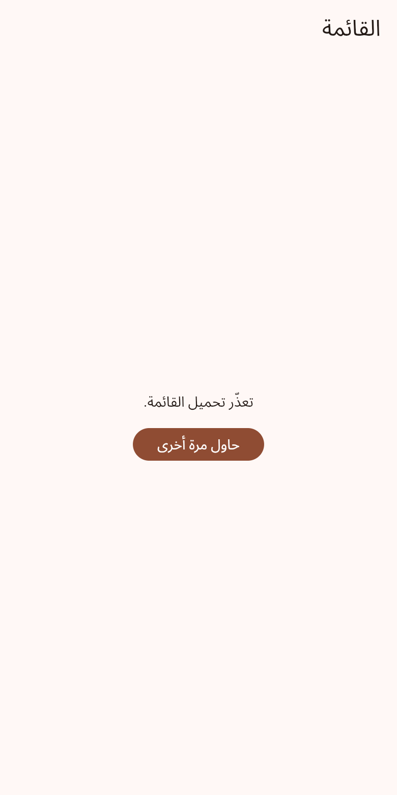
الزيارة الأولى لتطبيق العرض تفشل
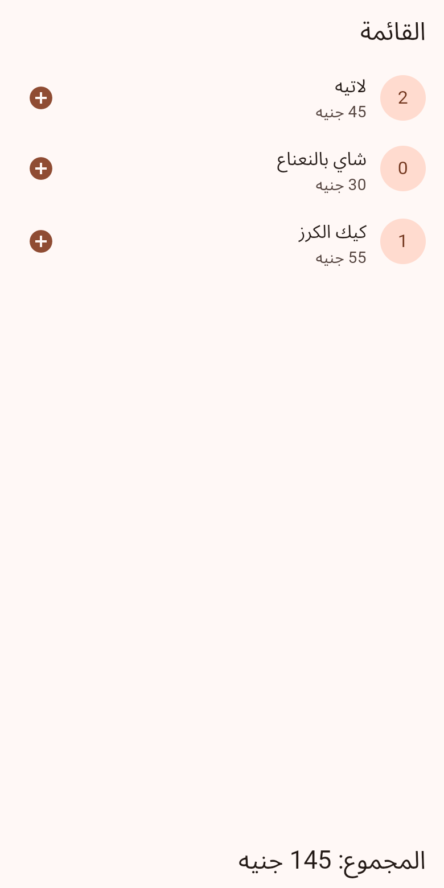
بعد «حاول مرة أخرى»، وطلب
10.5اللقطات الذهبية
اختبار الـ Widget يفحص ما تقوله الشاشة. واختبار اللقطة الذهبية (golden test) يفحص شكلها: يرسم Widget، ويقارن بكسلاته بصورة معتمدة، الصورة الذهبية، محفوظة في المستودع.
في المرة الأولى لا توجد صورة ذهبية للمقارنة، فتصنعها، وتنظر إليها، وتحفظها في المستودع:
الطرفية
$ flutter test --update-goldens test/golden_test.dart test/golden_rtl_test.dart
00:00 +0: loading test/golden_test.dart
00:00 +0: test/golden_test.dart: بلاطة المشروب كما اعتُمدت
00:00 +1: test/golden_rtl_test.dart: بلاطة المشروب بالعربية وفي الوضع الداكن
00:00 +2: All tests passed!
الطرفية
$ flutter test test/golden_test.dart
00:00 +0: loading test/golden_test.dart
00:00 +0: بلاطة المشروب كما اعتُمدت
00:00 +1: All tests passed!
ثم يغيّر زميل لون البذرة في الثيم من البني إلى الأزرق المخضر، من أجل شاشة أخرى، فيفشل اختبار اللقطة الذهبية:
الطرفية
$ flutter test test/golden_change_test.dart
Golden "goldens/drink_tile.png": Pixel test failed, 100.00%, 38400px diff detected.
Failure feedback can be found at test/failures
00:00 +0 -1: بلاطة المشروب كما اعتُمدت [E]
00:00 +0 -1: Some tests failed.
shots/golden-compare.png560px
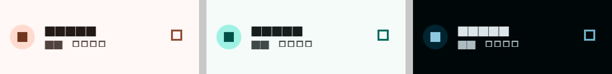
من اليسار إلى اليمين: الصورة الذهبية المعتمدة، وما رسمه الاختبار، والفرق الذي حفظه Flutter في test/failures. تغيّر كل بكسل، لأن لون البذرة يصبغ الخلفية أيضاً.
شيئان في هذه الصور يفاجئان الجميع أول مرة. النص مرسوم مربعات: اختبارات Flutter تستخدم خط اختبار كل حرف فيه مربع، لتكون الصور الذهبية متطابقة على كل جهاز، أياً كانت الخطوط المثبتة فيه. والأيقونات مربعات أيضاً، للسبب نفسه. فالصور الذهبية تحمي التخطيط والألوان والمسافات؛ أما الكلمات فتفحصها اختبارات الـ Widget.
10.6اختبارات التكامل
كل ما سبق جرى في بيئة اختبار: لا نافذة حقيقية، ولا محرك حقيقي، ولا منصة. واختبار التكامل يبني التطبيق الحقيقي ويشغّله على جهاز، وهنا سطح مكتب Linux، الجهاز المتاح على جهاز هذا الكتاب، على شاشة افتراضية. والاختبار نفسه يعمل دون تغيير على محاكي Android أو هاتف، بـ -d ومعرّف الجهاز.
$ flutter test integration_test/order_flow_test.dart -d linux
00:00 +0: loading integration_test/order_flow_test.dart
Building Linux application...
✓ Built build/linux/x64/debug/bundle/bit_app
00:00 +0: من بداية فاشلة إلى طلب
00:02 +1: (tearDownAll)
00:02 +1: All tests passed!
والحزمة جزء من Flutter SDK، تُضاف اعتماداً للتطوير:
الطرفية
$ flutter pub add http 'dev:integration_test:{"sdk":"flutter"}'
Resolving dependencies...
Downloading packages...
+ http 1.6.0
... and 11 packages they need
Changed 12 dependencies!
في أول تشغيل فشل هذا الاختبار. كان زر «حاول مرة أخرى» مكتوباً هكذا: onPressed: () => setState(() => drinks = widget.repository.menu()). والسهم الداخلي يعيد قيمة الإسناد، أي Future، وsetState تتأكد أن دالتها لا تعيد شيئاً، لأن دالة async كانت ستحدّث الحالة متأخرة. واختبار التكامل يشغّل نسخة debug، حيث التأكيدات مفعّلة، فتوقف برسالة «setState() callback argument returned a Future». أما لقطات الشاشة للتطبيق نفسه فجاءت من نسخة release، حيث تُحذف التأكيدات، فبدا الزر يعمل هناك. والإصلاح جسم بأقواس: setState(() { drinks = widget.repository.menu(); }).
هذه قيمة تشغيل الشيء الحقيقي: وجد خطأً في طريق لم يسلكه بعدُ أي اختبار Widget.
10.7التغطية
flutter test --coverage يسجل الأسطر التي شغّلتها الاختبارات، في coverage/lcov.info. وسكربت قصير في المشروع، tool/coverage.dart، يطبعها لكل ملف:
الطرفية
$ dart run tool/coverage.dart
lib/domain/pricing.dart 5/5 100%
lib/data/menu.dart 10/12 83%
lib/ui/menu_screen.dart 41/47 87%
all 56/64 88%
اقرأ التغطية خريطةً لما لم يلمسه أي اختبار، لا درجةً. والأسطر الناقصة هنا هي MenuException.toString وفرع الخطأ في الشاشة، بزر «حاول مرة أخرى»: الطريق نفسه الذي وجد فيه القسم 10.6 خطأه. (المشروع 10.2 يغطيه؛ ولم يدخل في هذا التشغيل.) ولاحظ ما ليس في القائمة إطلاقاً: مستودع العرض. فالملف الذي لا يستورده أي اختبار لا يظهر في التقرير، فلا يستطيع حتى أن يُنقص النسبة. وتغطية 100% لا تعني أن الكود صحيح؛ أما 40% فتعني أن معظمه لم يجرِ قط في اختبار.
أخطاء شائعة
الخطأ
ما يحدث
الحل
DateTime.now() داخل المنطق
اختبارات تفشل في ساعات معينة
مرّر الساعة
شبكة حقيقية في الاختبارات
اختبارات بطيئة متذبذبة تحتاج الخادم يعمل
مستودع مزيّف، أو MockClient
محاكاة كل شيء
اختبارات تنكسر مع كل إعادة هيكلة
بدائل تتصرف؛ ومحاكيات للتفاعلات فقط
تحديث الصور الذهبية دون نظر
شكل مكسور، معتمد
انظر في الفرق أولاً
الاختبار في نسخ release فقط
التأكيدات لا تجري أبداً
اختبارات Widget وتكامل في debug
مطاردة تغطية 100%
اختبارات تشغّل الأسطر دون أن تفحص شيئاً
استخدم التغطية لتجد الطرق غير المختبرة
الملخص
اختبارات الوحدة للقواعد، والـ Widget للشاشات، واللقطات الذهبية للشكل، والتكامل للرحلات، بهذه النسب.
الكود قابل للاختبار حين يُعطى ما يعتمد عليه: مستودعاً، وعميل HTTP، وساعة.
البدائل المزيّفة تتصرف كالحقيقية بلا شبكة؛ وCompleter يتحكم في متى ترد.
اللقطات الذهبية تقارن البكسلات بصورة معتمدة؛ والنص يُرسم مربعات لتتطابق في كل مكان.
اختبارات التكامل تشغّل التطبيق الحقيقي على جهاز، والتأكيدات مفعّلة، فتجد ما لا يجده غيرها.
التغطية تُظهر ما لم يجرِ قط في اختبار؛ إنها خريطة لا درجة.
إجابات «اختبر نفسك»: 1. ليستطيع الاختبار أن يختار الوقت: الدالة التي تنادي DateTime.now() بنفسها تعطي أجوبة مختلفة حسب وقت تشغيل الاختبار، ولا تُختبر ساعة السعادة إلا بين 15:00 و17:00. 2. البديل المزيّف تنفيذ أبسط يعمل (مستودع في الذاكرة، أو عميل يرد من دالة)؛ والمحاكي يسجل النداءات التي تصله ليتحقق منها الاختبار. البدائل تختبر السلوك، والمحاكيات تختبر التفاعل. 3. اختبارات Flutter ترسم النص بخط اختبار كل حرف فيه مربع، لتتطابق الصور الذهبية على كل جهاز مهما كانت خطوطه المثبتة؛ أما الكلمات نفسها فتفحصها اختبارات الـ Widget.
مشاريع للتدريب
المشاريع تختبر حدود قاعدة، وطريق فشل، وشكل مكوّن بلغة وثيم لا تغطيهما الصورة الذهبية السابقة.
المشروع 10.1 · سهل
ساعة السعادة عند حدودها
الأخطاء تسكن الحدود. اختبر ساعة السعادة في 14:59 و15:00 و16:59 و17:00 وفي منتصف الليل، بجدول حالات واحد.
ستتدرب على:group، والاختبارات المبنية على جداول، وأسماء اختبارات مصنوعة من البيانات.
اكتب خريطة من الأوقات إلى الجواب المتوقع.
مرّ عليها وأنشئ test لكل حالة، باسم من الوقت، فيقول الفشل أي وقت خاطئ.
غيّر < 17 إلى <= 17 في isHappyHour وشاهد حالة واحدة بالضبط تفشل.
$ flutter test test/edges_test.dart
00:00 +0: loading test/edges_test.dart
00:00 +0: ساعة السعادة عند حدودها 14:59 is not happy hour
00:00 +1: ساعة السعادة عند حدودها 15:00 is happy hour
00:00 +2: ساعة السعادة عند حدودها 16:59 is happy hour
00:00 +3: ساعة السعادة عند حدودها 17:00 is not happy hour
00:00 +4: ساعة السعادة عند حدودها 03:30 is not happy hour
00:00 +5: All tests passed!
المشروع 10.2 · متوسط
«حاول مرة أخرى»، حقاً
اختبر طريق الفشل في الشاشة: النداء الأول يفشل، فيظهر الخطأ والزر، والزر يسأل المستودع من جديد، فيجيب هذه المرة.
ستتدرب على: البدائل المزيّفة ذات الحالة، وعدّ النداءات بلا مكتبة محاكاة، وpumpAndSettle.
اكتب FlakyMenu الذي يرمي استثناء في أول نداء ويعيد قائمة بعده، ويعدّ نداءاته.
اعرض الشاشة، وتوقّع نص الخطأ ونداءً واحداً.
اضغط «حاول مرة أخرى»، وانتظر الاستقرار، وتوقّع نداءين والقائمة.
test/retry_test.dart (جزء)
class FlakyMenu implements MenuRepository {
var calls = 0;
@override
Future<List<Drink>> menu() async {
calls++;
if (calls == 1) {
throwconst MenuException('timeout');
}
returnconst [Drink('latte', 'Latte', 45)];
}
}
يجب أن تكون نتيجتك هكذا:
الطرفية
$ flutter test test/retry_test.dart
00:00 +0: loading test/retry_test.dart
00:00 +0: «حاول مرة أخرى» تسأل المستودع من جديد
00:00 +1: All tests passed!
تلميح: بعد الضغط لا يكفي pump واحد: الإطار الأول يعرض الـ Future الجديد في حالة التحميل، والقائمة تحتاج إطاراً آخر بعد اكتماله. وpumpAndSettle تواصل حتى لا يبقى شيء مجدول. وهذا الاختبار كان سيكشف خطأ setState في القسم 10.6 أيضاً، لو كُتب أولاً.
المشروع 10.3 · تحدٍّ
صورة ذهبية بالعربية وفي الظلام
أضف صورة ذهبية لبلاطة المشروب بنص من اليمين إلى اليسار وبالثيم الداكن، فيُكشف أي تغيير يكسر أياً منهما.
ستتدرب على: اللقطات الذهبية بحجم عرض ثابت، وDirectionality، والثيمات الداكنة.
اجعل عرض الاختبار 320 × 120 بكثافة بكسلات 1، لتكون الصورة واحدة في كل مكان، وأعده في النهاية.
اعرض البلاطة داخل ثيم داكن وDirectionality من اليمين إلى اليسار.
اصنع الصورة الذهبية بـ --update-goldens، وانظر إليها، وشغّل الاختبار.
المشروع 10.3: الصورة الذهبية معكوسة وداكنة. العدد الآن على اليمين، والزر على اليسار.
الطرفية
$ flutter test test/golden_rtl_test.dart
00:00 +0: loading test/golden_rtl_test.dart
00:00 +0: بلاطة المشروب بالعربية وفي الوضع الداكن
00:00 +1: All tests passed!
تمارين
سهل أضف اختبار وحدة لمشروب ثمنه 45 طُلب ثلاث مرات في ساعة السعادة. كم المجموع، ولماذا ليس 108.0؟
سهل اختبار الـ API يفحص عنوان الطلب. أضف فحصاً أن الطلب من نوع GET.
متوسط اكتب اختبار Widget يفشل إن ظهر المجموع قبل تحميل القائمة.
متوسط اجعل اللقطات الذهبية تستخدم خطاً حقيقياً، لتُظهر الصور كلمات فعلية. ماذا تكسب، وماذا تخاطر؟
تحدٍّ حوّل اختبار التكامل إلى فحص يجري مع كل طلب دمج. أي جهاز يشغّله، وماذا يحتاج مثبتاً، وكم من الوقت تحتمل أن يأخذ؟
إجابات التمارين في آخر الكتاب، وفي مستودع كود الكتاب.
في الفصل 11
التطبيق ينجح في اختباراته. لكن هل يعمل لمن لا يرى الشاشة، أو يستخدم نصاً كبيراً، أو يتنقل بمفتاح واحد؟ والفصل القادم يجعل التطبيق متاحاً للجميع، ويثبت ذلك بالأدوات نفسها: الدلالات والاختبارات وقارئات الشاشة الحقيقية.
11
الفصل 11
الوصول على الموبايل
ستتعلم في هذا الفصل أن
تقرأ تطبيقك كما يقرؤه قارئ الشاشة، عبر شجرة الدلالات في Flutter
تسمّي كل عنصر تحكم، وتدمج ما يتكامل، وتخفي ما هو زينة
تحوّل إرشادات الإتاحة في Flutter إلى اختبارات، وتعرف ما لا تراه
تجعل ترتيب القراءة في الشاشة العربية من اليمين إلى اليسار، لا تخطيطها فقط
تصمد أمام نص بضعف حجمه، وتُعلن التغييرات التي لا تُرى
نحو شخص من كل ستة يعيش مع إعاقة ما، وكل الناس تقريباً يمرّون بيوم سيئ: شاشة مشروخة، أو شمس ساطعة، أو ذراع مكسورة، أو هاتف في يد واحدة في حافلة مزدحمة. يستخدم الناس قارئات الشاشة (TalkBack في Android وVoiceOver في iOS)، والنص الأكبر، ولوحة المفاتيح أو مفتاحاً واحداً، والتباين الأعلى. والتطبيق المتاح ليس تطبيقاً منفصلاً لهم. إنه التطبيق نفسه، مبنياً بحيث يكون ما تعرضه الشاشة متاحاً أيضاً أسماءً وأدواراً وأفعالاً.
بِت
نتيجتان في هذا الفصل فاجأتا المؤلف، وأُبقيتا كلتاهما: إرشاد نجّح لوناً رمادياً راسباً، وشاشة عربية تبدو من اليمين إلى اليسار لكنها تُقرأ من اليسار إلى اليمين. ويعرض القسمان 11.3 و11.4 الاختبارين اللذين وجداهما.
11.1شجرة الدلالات
Flutter يرسم كل بكسل بنفسه، فلا يستطيع نظام التشغيل أن ينظر داخل الصورة ليجد الأزرار والنصوص. وبجانب شجرة الـ Widgets وشجرة الرسم، يبني Flutter شجرة ثالثة، شجرة الدلالات (semantics tree): عُقد لها تسمية («أضف لاتيه»)، ودور (زر، عنوان، حقل نص)، وحالة (مختار، مؤشَّر عليه)، وأفعال (ضغط، تمرير). والمنصة تسلّم هذه الشجرة إلى TalkBack أو VoiceOver؛ وعلى الويب يحوّلها Flutter إلى عناصر HTML بأدوار ARIA تقرؤها شجرة الإتاحة في المتصفح.
معظم الـ Widgets تملأ الشجرة جيداً وحدها: Text يعطي كلماته، وElevatedButton يقول إنه زر، وTextField يعطي تسميته. والمشكلة تبدأ بما نبنيه بأنفسنا من GestureDetector وأيقونات وحاويات.
11.2ما يسمعه قارئ الشاشة
هذه قائمة كُتبت على عجل. في كل صف صورة واسم ووصف وسعر، وقلب لحفظ المشروب، وزائد لإضافته. والأيقونتان مرسومتان باليد:
مستخدم قارئ الشاشة يسمع كل مشروب، ثم «زر»، «زر». أيهما يحفظ وأيهما يضيف؟ لا شيء يقول. والنسخة المتأنية تسمّي كل زر بما يفعله ولأي مشروب، وتدمج الصورة والاسم والوصف والسعر في وقفة واحدة، وتخفي الصورة التي يحمل الاسمُ معناها:
lib/menu_careful.dart (جزء)
child: MergeSemantics(
child: Row(
spacing: 12,
children: [
// الصورة زينة: الاسم يقول ما هي.
ExcludeSemantics(
child: Container(
width: 56,
height: 56,
decoration: BoxDecoration(
color: Colors.brown,
borderRadius: BorderRadius.circular(12),
),
child: const Icon(
Icons.local_cafe,
color: Colors.white,
),
),
),
Expanded(
child: Column(
crossAxisAlignment:
CrossAxisAlignment.start,
children: [
Text(name, style: text.titleMedium),
Text(
about,
style: text.bodySmall!.copyWith(
color: colors.onSurfaceVariant,
),
),
// تحت الاسم لا بجانبه: في الأحجام الكبيرة لا يبقى في الصف عرض زائد.
Text(
'$price جنيه',
style: text.labelLarge,
),
],
),
),
],
),
),
),
// كل زر أيقونة يقول ما يفعل، ولأي مشروب.
IconButton(
tooltip: 'احفظ $name',
onPressed: () {},
icon: const Icon(Icons.favorite_border),
),
IconButton.filled(
tooltip: 'أضف $name',
onPressed: () {},
icon: const Icon(Icons.add),
tooltip في IconButton هو اسمه المتاح، وهو أيضاً التسمية التي تظهر بالضغط المطوّل: نص واحد يخدم الاثنين.
MergeSemantics تحوّل شجرتها الفرعية إلى عقدة واحدة تُقرأ دفعة واحدة. استخدمها لما هو فكرة واحدة، كعنصر في القائمة؛ لا لما هو أفعال منفصلة.
ExcludeSemantics تحذف الزينة. أما الصورة التي تحمل معلومة فتحتاج semanticLabel بدلاً من ذلك.
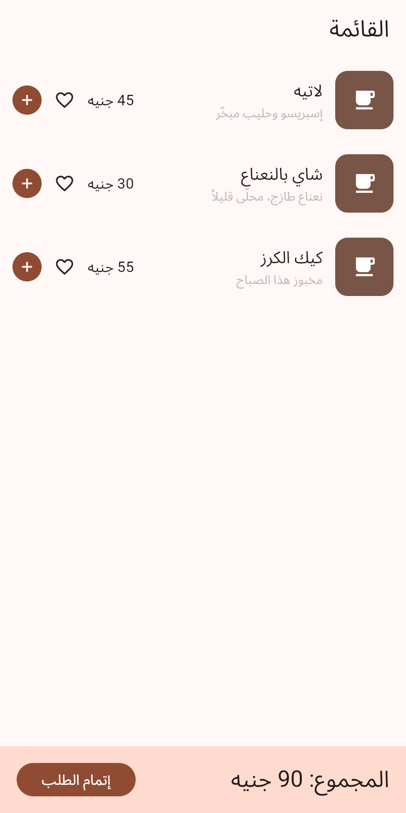
القائمة المستعجلة: أيقونات صغيرة بلا أسماء
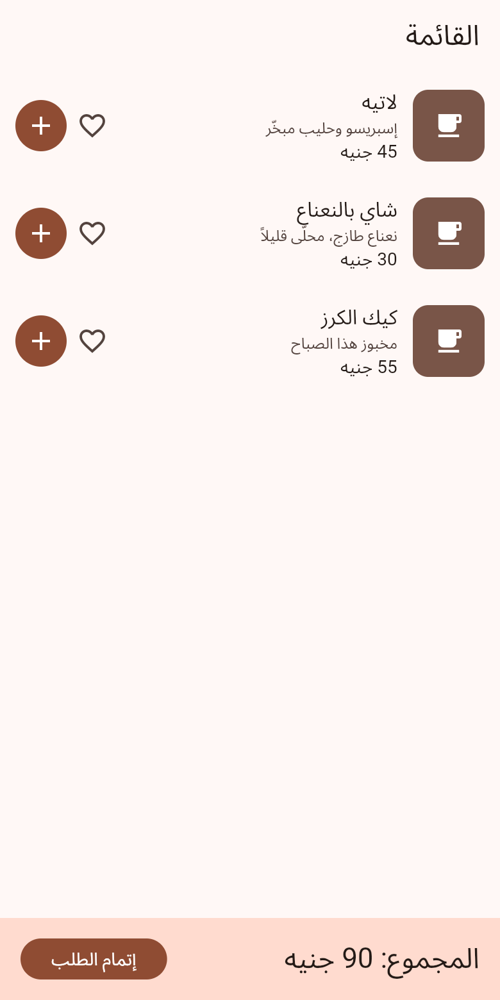
القائمة المتأنية: الشاشة نفسها، بأسماء
للعين، الشاشتان متطابقتان تقريباً. ولقارئ الشاشة، هما تطبيقان مختلفان.
11.3الإرشادات اختبارات
حزمة الاختبار في Flutter فيها إرشادات إتاحة تفحص الشاشة المعروضة: كل عقدة قابلة للضغط لها تسمية، وكل هدف للمس لا يقل عن 48 × 48 (Android) أو 44 × 44 (iOS)، والنص له تباين كافٍ. واختبار يشغّل الأربعة على القائمتين:
test/guidelines_test.dart (جزء)
const guidelines = {
'labeled tap targets': labeledTapTargetGuideline,
'Android tap targets (48 x 48)': androidTapTargetGuideline,
'iOS tap targets (44 x 44)': iOSTapTargetGuideline,
'text contrast': textContrastGuideline,
};
Future<int> check(WidgetTester tester, String name, Widget menu) async {
final semantics = tester.ensureSemantics();
await tester.pumpWidget(cafe(menu));
var failed = 0;
debugPrint('$name menu:');
for (final MapEntry(key: rule, value: guideline) in guidelines.entries) {
final result = await guideline.evaluate(tester);
if (!result.passed) {
failed++;
}
final first = result.reason?.split('\n').first ?? '';
debugPrint(
' ${result.passed ? 'pass' : 'FAIL'} ${rule.padRight(30)}${first.length > 70 ? '${first.substring(0, 70)}...' : first}',
);
}
semantics.dispose();
return failed;
}
الطرفية
$ flutter test test/guidelines_test.dart
00:00 +0: loading test/guidelines_test.dart
00:00 +0: أربعة إرشادات للإتاحة، القائمتان المستعجلة والمتأنية
hurried menu:
FAIL labeled tap targets SemanticsNode#6(Rect.fromLTRB(52.0, 30.0, 72.0, 50.0), actions: [tap])...
FAIL Android tap targets (48 x 48) SemanticsNode#6(Rect.fromLTRB(52.0, 30.0, 72.0, 50.0), actions: [tap])...
FAIL iOS tap targets (44 x 44) SemanticsNode#6(Rect.fromLTRB(52.0, 30.0, 72.0, 50.0), actions: [tap])...
pass text contrast
careful menu:
pass labeled tap targets
pass Android tap targets (48 x 48)
pass iOS tap targets (44 x 44)
pass text contrast
00:01 +1: All tests passed!
القائمة المستعجلة ترسب في ثلاثة: قلبها ذو العشرين بكسلاً بلا تسمية، وأصغر من أن يُصاب بثقة. والمتأنية تنجح في الأربعة. لكن انظر إلى السطر الأخير من القائمة المستعجلة: تباين النص ينجح، لوصف مرسوم برمادي فاتح صعب القراءة بوضوح. ومفحوصاً وحده، يرسب الرمادي نفسه بجلاء:
الطرفية
$ flutter test test/contrast_alone_test.dart
00:00 +0: loading test/contrast_alone_test.dart
00:00 +0: الوصف الرمادي، مفحوصاً وحده
text contrast: FAIL
Expected contrast ratio of at least 4.5 but found 1.79 for a font size of 12.0.
00:00 +1: All tests passed!
لماذا نجح في القائمة؟ إرشاد التباين يبحث عن تسمية كل عقدة دلالات بين الـ Text المعروضة، ويقيس ذلك النص. وفي القائمة كان Flutter قد جمع اسم كل صف ووصفه وسعره في عقدة واحدة، فصارت تسميتها الأسطر الثلاثة معاً، ولم يطابقها Text واحد، فلم يُقس شيء. الإرشاد لم يكذب؛ لم يفحص شيئاً فلم يبلّغ عن رسوب.
11.4ترتيب القراءة من اليمين إلى اليسار
قارئ الشاشة يتنقل في شجرة الدلالات بـترتيب التنقل (traversal order): من أعلى إلى أسفل، وداخل السطر باتجاه القراءة. وفي تطبيق عربي يكون اسم المشروب على اليمين وأزراره على اليسار، فيجب أن يُقرأ الاسم أولاً. واختبار يطبع الصف الأول كما يزوره قارئ الشاشة، للقائمة المتأنية مُعدّة بطريقتين:
$ flutter test test/reading_order_test.dart
00:00 +0: loading test/reading_order_test.dart
00:00 +0: ترتيب القراءة في قائمة من اليمين إلى اليسار
Directionality only: أضف لاتيه -> احفظ لاتيه -> لاتيه
Arabic locale: لاتيه -> احفظ لاتيه -> أضف لاتيه
00:00 +1: All tests passed!
مع Directionality وحدها، الشاشة تبدو من اليمين إلى اليسار، لكنها تُقرأ من اليسار إلى اليمين: «أضف لاتيه» قبل أن يسمع المستخدم ما اللاتيه. فاتجاه شجرة الدلالات يأتي من مستوى أعلى، من لغة التطبيق (locale). ومع اللغة العربية وترجماتها يصير التخطيط وترتيب القراءة كلاهما من اليمين إلى اليسار. وهذا إعداد تطبيقات هذا الفصل في النسخة العربية، وهو نفسه الذي استخدمه الفصل 13 من الكتاب الخامس:
وهذا درس خاص بنا نحن من نكتب العربية: كثير من الأمثلة والدروس يقلب الاتجاه بـ Directionality ويكتفي بما تراه العين، فيخرج تطبيق يقرؤه قارئ الشاشة مقلوباً.
11.5النص الكبير
Android وiOS كلاهما يتيح تكبير النص، حتى ضعف حجمه وأكثر، وFlutter يحترم ذلك عبر MediaQuery.textScalerOf. والتخطيطات المكتوبة للحجم الافتراضي تنكسر: الصفوف ينفد عرضها، والارتفاعات الثابتة تقطع الكلمات نصفين. وتطبيقات العرض في الكتاب تأخذ مقياساً للنص، فيجرّب الاختبار واللقطة 200%:
الطرفية
$ flutter test test/large_text_test.dart
00:00 +0: loading test/large_text_test.dart
00:00 +0: القائمتان والنص بضعف حجمه
hurried menu at 200%: A RenderFlex overflowed by 678 pixels on the right.
careful menu at 200%: fits
00:00 +1: All tests passed!
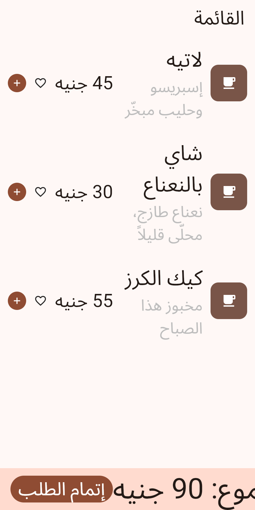
المستعجلة بحجم 200%: شريط المجموع يخرج من الشاشة
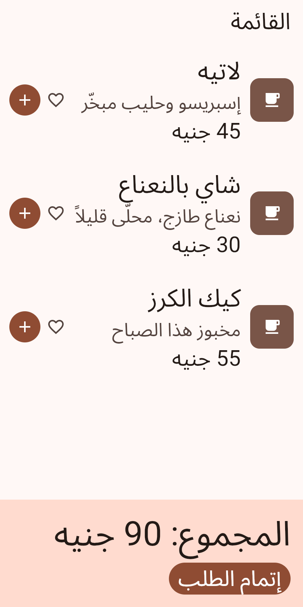
المتأنية بحجم 200%: كل شيء ينتقل إلى سطر جديد
تغييران جعلا القائمة المتأنية تتسع. شريط المجموع Wrap بلا ارتفاع ثابت، فينتقل الزر إلى سطر ثانٍ حين يمتلئ السطر:
والسعر انتقل من جانب الاسم إلى تحته. النسخة المتأنية الأولى أبقته بجانب الاسم؛ فاتسع في الإنجليزية، أما في العربية، وكلماتها أعرض في هذا الحجم، فأبلغ الاختبار: «A RenderFlex overflowed by 6.5 pixels on the right». اختبر النص الكبير في كل لغة تنشر بها.
أخطاء شائعة
الخطأ
ما يحدث
الحل
أيقونات مرسومة بـ GestureDetector
«زر، زر»: بلا أسماء، وأهداف صغيرة
IconButton مع tooltip
صور زخرفية في الشجرة
ضجيج يُقرأ مع كل صف
ExcludeSemantics، أو semanticLabel إن كانت تُخبر
الثقة بإرشاد تباين ناجح
نص غير مقروء «نجح»
اختبارات تباين على رموز التصميم
Directionality بدل اللغة
عربية تُخطَّط من اليمين وتُقرأ من اليسار
اللغة العربية بترجماتها
ارتفاعات ثابتة وصفوف مزدحمة
نص كبير مقطوع أو فائض
Wrap، وبلا ارتفاعات ثابتة، واختبار بـ 200%
تغييرات تُعرض بصرياً فقط
مستخدم قارئ الشاشة لا يعرف أن الطلب تغيّر
إعلان (المشروع 11.1)
الملخص
Flutter يبني شجرة دلالات من التسميات والأدوار والحالات والأفعال؛ وقارئات الشاشة والمتصفح يقرؤونها.
سمِّ كل عنصر تحكم (tooltip والتسميات)، وادمج ما هو فكرة واحدة، وأخفِ الزينة.
ترتيب القراءة من اليمين إلى اليسار يأتي من لغة التطبيق، لا من Directionality.
اختبر بنص 200% في كل لغة، ودع التخطيطات تنتقل إلى أسطر جديدة بدل تثبيت الأحجام.
إجابات «اختبر نفسك»: 1. تجمع شجرتها الفرعية كلها في عقدة دلالات واحدة تُقرأ دفعة واحدة، كصورة عنصر القائمة واسمه وسعره. ولا تستخدمها حول ما هو أفعال منفصلة، كزرين: إن دُمجا صارا عقدة واحدة ولم يستطع المستخدم بلوغ كل منهما وحده. 2. لأن الإرشاد يقيس الـ Text الذي تطابق كلماته تسمية العقدة، وكان Flutter قد دمج نصوص كل صف في عقدة واحدة لا تطابق تسميتها أي Text منفرد؛ فلم يُقس شيء، فلم يرسب شيء. 3. لغة التطبيق: مع اللغة العربية وترجماتها تُقرأ شجرة الدلالات من اليمين إلى اليسار. أما Directionality وحدها فتعكس التخطيط وتترك ترتيب القراءة من اليسار إلى اليمين.
مشاريع للتدريب
المشاريع تغطي ما تراه العين ولا تسمعه الأذن: تغييراً على الشاشة، وترتيب نموذج، ومكوّناً مصنوعاً باليد.
المشروع 11.1 · سهل
أعلِن ما تغيّر
حين يُضاف مشروب تتغير الشارة على الكوب، ومستخدم قارئ الشاشة لا يراها. أعلن التغيير، وأثبت ذلك باختبار.
بعد تغيّر الحالة، أرسل إعلاناً بالمشروب والعدد الجديد، باتجاه نص الشاشة.
في اختبار، اضغط مرتين وخذ الإعلانات.
اطبعها، وتوقّع اثنين.
lib/announce.dart (جزء)
void add() {
setState(() => count++);
// أخبر مستخدمي قارئ الشاشة بما تغيّر، فهم لا يرون الشارة.
SemanticsService.sendAnnouncement(
View.of(context),
'لاتيه أُضيف, $count قطع في طلبك',
Directionality.of(context),
);
}
يجب أن تكون نتيجتك هكذا:
الطرفية
$ flutter test test/announce_test.dart
00:00 +0: loading test/announce_test.dart
00:00 +0: إضافة مشروب تُعلَن
announced (polite): "لاتيه أُضيف, 1 قطع في طلبك"
announced (polite): "لاتيه أُضيف, 2 قطع في طلبك"
00:00 +1: All tests passed!
تلميح: أعلن النتائج لا الأفعال: «أُضيف لاتيه، 2 قطع في طلبك»، لا «ضُغط زر». وأبقِ الإعلانات مهذبة (polite، وهو الافتراضي)، فتنتظر قارئ الشاشة حتى ينهي ما يقوله.
المشروع 11.2 · متوسط
ترتيب مفتاح Tab
زر «ادفع» في صفحة إتمام الطلب موجود في شريط التطبيق، في الأعلى، فيبلغه مستخدمو لوحة المفاتيح والمفتاح الواحد قبل الحقول التي يجب ملؤها. اجعل Tab يمر بالاسم ثم الهاتف ثم «ادفع».
$ flutter test test/focus_order_test.dart
00:00 +0: loading test/focus_order_test.dart
00:00 +0: ترتيب مفتاح Tab
by position: pay -> name -> phone
in order: name -> phone -> pay
00:01 +1: All tests passed!
المشروع 11.3 · تحدٍّ
منتقي حجم الكوب الذي يشرح نفسه
منتقٍ مصنوع من ثلاث رقائق مستديرة مبنية بـ GestureDetector. اجعل كل رقاقة زراً، في مجموعة واحد منها مختار، بتسمية واضحة، وكبيرة بما يكفي للمس، وأثبت ذلك.
ستتدرب على: الـ Widget Semantics، وisSemantics، وtester.semantics.tap، والإرشادات على مكوّن مصنوع.
غلّف كل رقاقة بـ Semantics مع button وselected وinMutuallyExclusiveGroup وتسمية وonTap، واستبعد نص الرقاقة نفسه من الشجرة.
في اختبار، افحص علامات الرقاقة المختارة وغير المختارة بـ isSemantics.
اضغط «كبير» عبر شجرة الدلالات، كما يفعل النقر المزدوج لقارئ الشاشة، وتحقق أن الاختيار انتقل؛ ثم شغّل إرشادَي هدف اللمس والتباين.
$ flutter test test/cup_size_test.dart
00:00 +0: loading test/cup_size_test.dart
00:00 +0: أحجام الكوب أزرار في مجموعة، واحد منها مختار
a screen reader double-tap on كبير selected it, and وسط is no longer selected
00:00 +1: All tests passed!
تلميح: قبل كتابة مكوّن مصنوع، تحقق إن كان مكوّن من Material يؤدي المهمة: SegmentedButton مجموعة أزرار قابلة للاختيار، وكل هذه الدلالات مبنية فيها.
تمارين
سهل أعطِ صورة القائمة المستعجلة معنى: لنقل إنها تُظهر المشروب في كوبه الحقيقي. ماذا يجب أن تكون دلالاتها الآن؟
سهل زر الزائد في القائمة المتأنية يقول «أضف لاتيه». لماذا لا تكفي «أضف» وحدها، مع أنه في صف اللاتيه؟
متوسط شجرة المتصفح تُظهر «القائمة» عنواناً (heading)، مع أن الكود لم يطلب ذلك. من جعله عنواناً؟ ثم اجعل المجموع منطقة حية (live region). ماذا يغيّر ذلك لمستخدم قارئ الشاشة؟
متوسط اكتب اختباراً يفشل إن كان أي IconButton في التطبيق بلا tooltip. لماذا قد يكون أشد من labeledTapTargetGuideline؟
تحدٍّ اكتب اختباراً يطبع القائمة المتأنية كلها كما يزورها قارئ الشاشة، بالعربية وبالإنجليزية، وقارن الترتيبين. أي العقد ينتقل، وأيها يبقى مكانه؟
إجابات التمارين في آخر الكتاب، وفي مستودع كود الكتاب.
في الفصل 12
التطبيق الآن يعمل لكل من يفتحه. والفصل القادم عن اللحظات التي يكون فيها مغلقاً: إشعارات تعيد الناس إليه، وعمل يجري في الخلفية، ضمن الحدود الصارمة التي يضعها Android وiOS.
ملحق
حلول التمارين
حاول حل كل تمرين بنفسك قبل أن تنظر هنا. وإن اختلف حلك عن هذا فليس بالضرورة خطأ: معظم المسائل لها حلول جيدة كثيرة. إن كان حلك يعالج الحالات العادية وغير العادية، وتستطيع أن تشرح اختياراتك، فهو حل جيد. والكود الكامل المختبر لكل حل موجود في مستودع الكود الخاص بالكتاب.
الفصل 1
لـ SizedBox كائن رسم واحد، RenderConstrainedBox. أما Icon فلا كائن رسم خاصاً به: فهو مثل Text يبني Widgets أخرى، منها RichText يرسم كائنه RenderParagraph الأيقونة حرفاً واحداً من خط أيقونات، داخل بضعة Widgets للمقاس وقارئات الشاشة. وكتابة التوقع أولاً هي المقصود: فأخطاؤك تقول لك أي الـ Widgets ظننتها «حقيقية».
أربع مرات أيضاً. فمُنشئ constيسمح بالثابت فقط؛ ومكان الاستدعاء هو الذي يقرر. وBadge2() بلا const داخل دالة build تُنشئ كائناً جديداً في كل مرة، والكائن الجديد يُبنى من جديد. ولهذا تنظر قاعدة prefer_const_constructors إلى الاستدعاءات، لا إلى الأصناف وحدها.
يقول الخطأ إن RenderFlex له أبناء بنسبة مرنة لكن قيد الارتفاع الذي يصله بلا حد: فقد أعطت ListView العمود Column ارتفاعاً أقصى لا نهائياً، وExpanded تعني «خذ الباقي من الأقصى». فإما أن تعطي العمود ارتفاعاً محدوداً (SizedBox(height: …) حوله، أو لا ListView إن لم تكن الصفحة تحتاج التمرير)، وإما أن تحذف Expanded وتدع الأبناء يأخذون مقاساتهم بـ mainAxisSize: MainAxisSize.min.
في الصف بلا مفاتيح يبقى النص في موضعه ويظهر تحت الحرف الآخر، لأن النص يعيش في الـ State الخاصة بالحقل، وقد أبقاها العنصر؛ والتركيز والمؤشر يبقيان هناك أيضاً. وفي الصف ذي المفاتيح ينتقل النص والمؤشر والتركيز مع البطاقة. وهذه أشهر صورة واقعية لمشكلة المفاتيح: نماذج تُضاف حقولها أو تُحذف.
تُرسم الصورة مرة واحدة أيضاً: فلها الآن طبقة خاصة، وحين يعيد المؤشر رسم طبقة الأب تُعاد طبقة الصورة كما هي دون رسمها. فالموضعان كلاهما يحمي الصورة؛ والفرق فيما يحميانه غيرها. فالحد حول الشيء الذي يتغير يحمي كل جيرانه دفعة واحدة، وهو الأفضل عادة؛ والحد حول شيء ثابت غالٍ واحد يحميه وحده، وهو الاختيار الأفضل حين يكون رسمه مكلفاً والأجزاء المتغيرة موزعة في الشاشة.
الفصل 2
البيانات: OrderDto وjsonDecode. المجال: قاعدة العشرين قطعة وMoney. العرض: Colors.green والنص «أُرسل الطلب». واختبار سريع لأي شيء: هل سيتغير إن تغيّر الخادم (بيانات)، أم إن تغيّر العمل (مجال)، أم إن تغيّر التصميم أو اللغة (عرض)؟
يبلّغ المحلل أن الـ switch في OrdersController.describe لا يعالج كل OrderFailure، لأن SoldOut لا يطابقه شيء. وهذا النوع المختوم يؤدي عمله: يحصي وقت الترجمة كل مكان يجب أن يقرر ما يقوله عن الحالة الجديدة، قبل أن يقابلها أي شخص.
أعطِ FakeOrdersSource قائمة بداية اختيارية، FakeOrdersSource({this.fails = false, List<Map<String, dynamic>> orders = const []})، تُنسخ إلى _orders؛ ويمرر جذر العرض ثلاثة طلبات بشكل JSON وساعة 10:00. ولا يتغير شيء آخر، وتعرض الصفحة السجل فور أول تحديث. واحفظ بيانات العرض في جذر التركيب أو في ملف عرض، لا في المجال أبداً.
احفظ piastres في Money، وأبقِ خاصية int get pounds => piastres ~/ 100، واكتب القائمة Money(4500)؛ فتعمل + و* و== وcompareTo كما كانت. ولا يتغير إلا money.dart وorder.dart. والملفات قليلة لأن المجال وحده يعرف ما المال: فطبقة البيانات لا تحمل أسعاراً أبداً (الخادم لا يحسب شيئاً هنا)، والعرض لا يقرأ إلا pounds. وهذه فائدة كائن القيمة.
هذا مسموح: فقاعدة الاعتماد تخص المجال، والعرض طبقة Flutter بطبيعته. لكن المتحكم المكتوب بـ Dart خالصة، بحالته قيمةً لا تتغير وبلا BuildContext، يُختبر دون رسم أي Widget، ويُعاد استخدامه في شاشة أخرى أو تطبيق سطح مكتب، ويُستبدل في الاختبارات بسهولة أكبر. وتخسر راحة مستمعي ChangeNotifier، وتحتاج طريقة أخرى لتخبر الشاشة أن شيئاً تغيّر، وهذا بالضبط ما يعطيك إياه Notifier في Riverpod، وهو صنف Dart خالصة، في الفصل القادم.
الفصل 3
أول لمسة ترمي خطأً: فـ build تعيد const {}، والخريطة الثابتة لا تتغير، فتفشل state[item] = … بـ UnsupportedError، ويفشل معها كل اختبار يضيف إلى السلة. واجعل الحالة الأولى {} عادية فيختفي الخطأ، وهذا أسوأ: فالخريطة تتغير الآن، لكن state هو الكائن نفسه، فلا يُبلَّغ أحد، وتبقى الدوائر على الشاشة تعرض 0، ويعدّ اختبار select مرة بناء واحدة لكل منهما. والحالات الأولى الثابتة حارس رخيص من هذا الخطأ.
يُرسل الطلب وتُفرَّغ السلة، لكن «طلباتك» تبقى تقول «لم تطلب شيئاً بعد»: فالسجل حُمِّل مرة ولم يخبره شيء أنه صار قديماً. ولا يلحق إلا حين يعيد بناءه شيء من الصفر: زر «أعد المحاولة»، أو مغادرة شاشة رُمي الـ provider الخاص بها ثم فتحها، أو إعادة تشغيل التطبيق. والإبطال في المكان الذي تتغير فيه البيانات هو ما يُبقي كل شاشة صحيحة دون أن تعرف الشاشات بعضها.
ref.listen(placeControllerProvider, (previous, next) { if (next.value case Ok(:final value)) { ScaffoldMessenger.of(context).showSnackBar(SnackBar(content: Text('… ${value.id}'))); } }); في بداية build. فـ listen تشغّل دالة مرة واحدة لكل تغيير، وهذا ما يحتاجه الأثر الجانبي: شريط سفلي، أو انتقال، أو صوت. أما watch فتعيد البناء فقط، وعرض الشريط من build سيعرضه من جديد مع كل إعادة بناء، حتى حين لا يحدث جديد.
FutureProvider(…, retry: (count, error) => null). فتعرض شاشة انقطاع الاتصال الخطأ فوراً بدل قيمة تبقى في التحميل أثناء إعادة المحاولة؛ ويبقى زر «أعد المحاولة» يعمل لأنه يُبطل. واختر ذلك حين لا تفيد إعادة المحاولة (403، أو خطأ تحقق، أو سجل غير موجود)، أو حين يجب أن يقرر الشخص، مثلاً على باقة بيانات محدودة؛ وأبقِ إعادة المحاولة التلقائية للأخطاء العابرة مثل انتهاء المهلة.
historyProvider.overrideWith((ref) async => [order1, order2, order3]). وهذا يتخطى المصدر والـ DTO وتحويل المستودع: جيد لصور الشاشات ولاختبار كيف ترسم الصفحة قائمة معروفة، لكنه لم يعد يختبر أن طبقة البيانات تنتج هذه القائمة، ولا تظهر الطلبات الجديدة أبداً، لأن إبطال السجل يشغّل الاستبدال من جديد فيعيد الثلاثة نفسها. أما استبدال المصدر فيُبقي كل الطبقات تعمل.
الفصل 4
«لا طلب برقم 9» و«لا طلب برقم ?»، وكلاهما داخل التخطيط العادي، مع اختيار لسان الطلبات وسهم رجوع. فالعنوانان يطابقان المسار /orders/:id، فيبني الموجّه OrderPage؛ والصفحة وحدها تعرف أن الطلب 9 غير موجود، وint.tryParse('abc') تعطي null بدل الانهيار. أما صفحة «غير موجودة» فللعناوين التي لا تطابق أي مسار أصلاً.
يختفي سهم الرجوع. فالمسار في الأعلى لا أب له في الشجرة، ففتحه يبني كومة من صفحة واحدة: لا شيء يُرجع إليه. (وخارج الإطار يفقد الألسنة أيضاً.) فالتداخل ليس زينة: إنه ما يقول للموجّه أي الصفحات تنتمي تحت الرابط العميق.
onDestinationSelected: (i) => shell.goBranch(i, initialLocation: i == shell.currentIndex). فـ goBranch تستعيد عادة آخر مكان في الفرع، وهذا ما يُبقي الكيك مفتوحاً؛ ومع initialLocation: true تذهب إلى أول مسار في الفرع بدلاً من ذلك. وتمريرها للسان المختار من قبل وحده يعطي السلوك الذي يعرفه الناس من أكثر التطبيقات: المس لساناً آخر لتعود إلى حيث كنت، والمس اللسان الحالي من جديد لتعود إلى بدايته.
أعطِ المسار الابن تحويله الخاص: GoRoute(path: ':id', redirect: (context, state) => drinks.containsKey(state.pathParameters['id']) ? null : Routes.menu, …). وهذا أسوأ عادة: فقد تبع الشخص رابطاً، فوجد نفسه في القائمة، ولا يعرف لماذا. أما رسالة «لا مشروب باسم coffee» فتشرح ذلك. والتحويلات أفضل للعناوين التي انتقلت، مثل رقم قديم أُعيدت تسميته، حيث الوجهة هي الشيء نفسه حقاً.
اجعل حالة تسجيل الدخول provider من نوع Notifier<bool>، وأنشئ الموجّه داخل provider: final routerProvider = Provider((ref) { final refresh = ValueNotifier(0); ref.listen(authProvider, (previous, next) => refresh.value++); ref.onDispose(refresh.dispose); return GoRouter(refreshListenable: refresh, redirect: (context, state) { final signedIn = ref.read(authProvider); … }, routes: […]); });. ويشاهد التطبيق routerProvider من أجل routerConfig، ويستبدل الاختبار authProvider في ProviderScope الخاص به، كما في الفصل 3. ويُنشأ الموجّه مرة واحدة لكل حاوية، لا داخل build أبداً.
الفصل 5
أربع محاولات بينها ثلاثة انتظارات، بحدود 200 و400 و800 جزء من الثانية: 1.4 ثانية من الانتظار على الأكثر، وعادة نحو نصف ذلك، لأن العشوائية الكاملة تختار قيمة عشوائية تحت كل حد. ولا يُبلغ الحد الأقصى 5 ثوانٍ بهذه الأرقام؛ بل يهم مع محاولات أكثر. وRetry-After من الخادم يحل محل الانتظار المحسوب، وقد يجعله أطول.
تعيد get القيمة null: فالعميل يعامل الجسم الناجح الفارغ على أنه «لا محتوى»، وهذا ما ترسله 204 No Content وكثير من أجوبة DELETE. وليس BadResponse لأن شيئاً لم يفشل في القراءة. والمستودع الذي كان يتوقع قائمة يجب أن يقرر ما تعنيه null له، قائمة فارغة أم خطأ، ومكان هذا القرار هناك، لا في العميل.
أعطِ الطلبات رمز إلغاء اختيارياً (كائناً فيه علامة cancelled، أو Future يكتمل عند الإلغاء)، تُنشئه الشاشة وتلغيه في dispose. ويتحقق العميل منه في مكانين: قبل كل محاولة، وبعد كل انتظار، رامياً Cancelled. والشاشات تتجاهل Cancelled: فلا أحد هناك ليراه. وبدونه يبقى الشخص الذي غادر الشاشة سبباً في أربعة طلبات وأربعة انتظارات.
غلّف العميل (بـ http.BaseClient مثل المشروع 5.3) أو سجّل في _send: '$method $path -> $status in ${watch.elapsedMilliseconds} ms'. ولا تسجّل ترويسة Authorization أبداً: فالسجلات تُنسخ إلى أدوات تقارير الأعطال وتذاكر الدعم وصور الشاشة، والتوكن في سجل يسمح لكل من يقرؤه أن يتصرف باسم الشخص. ولا الجسم أبداً: ففيه بيانات شخصية (أسماء، وعناوين، ورسائل)، وجمعها في السجلات خطر على الخصوصية، ومخالف للقانون في بلدان كثيرة.
بلا عشوائية تصل الأعداد في قمم عالية: العملاء المئة كلهم عند 0 و200 و600 و1400 جزء من الثانية، ولا شيء بينها، فيقابل الخادم الذي يتعافى للتو جداراً من الطلبات عند كل قمة، وقد يسقط من جديد. ومع العشوائية الكاملة تتوزع الطلبات نفسها على كل الفترات، قليلاً في كل 100 جزء من الثانية، فيرى الخادم المتعافي تدفقاً هادئاً. والعدد الكلي للطلبات واحد؛ لا يتغير إلا شكلها في الزمن، وهذا الشكل هو ما يقرر هل يتعافى الخادم.
الفصل 6
ليعرف الخادم تغييرات الشخص قبل أن يقارن التطبيق ملاحظاته به. وللجلب أولاً كلفتان. فالجلب يأتي بنسخة الخادم الأقدم من أشياء غيّرها الشخص للتو؛ ودمج هذا الفصل يحمي الملاحظة المنتظرة، لكن مع قاعدة أبسط مثل «آخر كتابة تغلب» سيُكتب فوق التغيير غير المرسل. وكل إرسال يصنع إصدارات جديدة فوق المؤشر، فيجلب الجلب التالي تغييرات التطبيق نفسه من جديد. أرسل أولاً ثم اجلب، فيغطيها المؤشر من قبل.
يعيد الطلب إلى صندوق الصادر: order.copyWith(sync: SyncState.queued)، مع مسح الخطأ، ثم يشغّل مزامنة. والمسح يحتاج انتباهاً: فـ copyWith المكتوبة بـ error ?? this.error لا تستطيع أبداً أن تعيد error إلى null. فأعطها طريقة منفصلة للمسح (علامة clearError، أو دالة retried() تبني الطلب الجديد)، وضع الفعل في متحكم الطلبات بجانب place، فلا تفعل الشاشات إلا استدعاءه.
الطلب الذي لم يُرسل قط لم يره الخادم قط: فيمكن حذفه من المخزن ببساطة، ومن صندوق الصادر بالتالي (ما لم يكن إرساله جارياً في تلك اللحظة، وهو ما يجب أن يحترس منه المحرك). أما الطلب الذي أُرسل فموجود على الخادم أيضاً: وحذفه محلياً سيعيده مع الجلب التالي. فعلّمه محذوفاً ومنتظراً (شاهد قبر)، وأرسل الحذف، ولا تحذف الصف إلا حين يؤكد الخادم.
تنكسر قاعدة «الملاحظة ملك الشخص»: فصار كاتبان يتشاركان حقلاً واحداً، ولم تعد ملكية الحقول تستطيع أن تقرر. وأنظف حل أن تعطي كل كاتب حقله، ملاحظة من الشخص ورداً من المقهى، فتعود الملكية صحيحة. وإن وجب أن يبقى الحقل مشتركاً، فيجب أن يحفظ الخادم إصداراً لكل حقل ويرفض التغيير المبني على إصدار أقدم، وأن يعرض التطبيق على الشخص النصين ويدعه يختار.
لكلا الجوالين ملاحظة منتظرة مبنية على الإصدار 1. فأول من يزامن يغلب على الخادم (الإصدار 2). والثاني يرسل ملاحظة مبنية على الإصدار 1؛ فيجيب الخادم بتعارض بدل الكتابة فوقها، ويعيد ملاحظته الحالية. فيعلّم الجوال الثاني الطلب متعارضاً، ويحفظ النصين، ويسأل الشخص («جوالك الآخر غيّر هذه الملاحظة»). والاختبار: خادم مزيف واحد، ومخزنان محليان، ومحركان؛ عدّل بلا اتصال على الاثنين، وزامن أ، ثم ب، وتوقع ملاحظة أ على الخادم، وتعارضاً على ب بالنصين، ولا ضياع صامت.
الفصل 7
لا يظهر في أي مكان، وهذا هو الدرس: فالكتالوج يعدّد المسافات باليد، [('xs', Space.xs), …]، فيبقى الرمز الجديد غير مرئي حتى يتذكر أحد أن يضيفه. أعطِ Space قائمة واحدة بكل القيم، static const all = {'xs': xs, 's': s, 'm': m, 'l': l, 'xl': xl, 'xxl': xxl}، ودع الكتالوج يمر عليها؛ فيظهر كل رمز جديد من تلقاء نفسه، في كل ثيم.
كل ما يأتي من ColorScheme في Material يصير أزرق: أزرار «اطلب» الممتلئة، وعنصر التنقل المختار، والمفتاح، وصبغة الأسطح والبطاقات. وتبقى الأسعار والوسوم كما كانت، لأنها تأتي من امتداد Brand الذي لا تلمسه البذرة. وهذا الانقسام مقصود: أدوار Material تتبع البذرة، وألوان العلامة الخاصة تُختار وتُختبر باليد.
تأخذ brand.dart اللونين info وonInfo، بقيم في light وdark وسطر في lerp؛ وتأخذ components.dart حالة في switch الخاص بـ StatusTag، يطلبها المترجم فور أن يكبر الـ enum؛ ويعرض الكتالوج الوسم الجديد. ويجب أن يفحص اختبار التباين الزوج الجديد في الثيمين. ولا تتغير أي شاشة حتى تقرر إحداها استخدام الوسم الجديد.
أول ما ينكسر صف رأس البطاقة: اسم مشروب طويل بخط كبير ووسم يتشاركان سطراً واحداً، فينطوي الاسم في عمود ضيق أو يفيض. والأزرار تبقى تعمل لأن ارتفاعها حد أدنى لا مقاس ثابت. والرموز تساعد لأن الإصلاح يُصنع مرة واحدة، في المكون: يصير الرأس Wrap (أو ينتقل الوسم تحت الاسم حين تضيق المساحة)، فتُصلح كل شاشة تستخدم MenuCard معاً. واختبره بـ MediaQuery(data: MediaQuery.of(context).copyWith(textScaler: TextScaler.linear(2))) في اختبار Widget.
أضف 'a hand-made text style': RegExp(r'TextStyle\(') إلى القواعد؛ والشاشات تستخدم من قبل context.text.titleLarge وأخواتها. وcopyWith على نمط من الثيم مقبولة للون دور من الثيم، كما يفعل السعر بـ context.brand.accent، لأن الحجم والوزن وارتفاع السطر ما زالت تأتي من نظام التصميم. وحين تظهر copyWith نفسها في مكانين تكون قد صارت نمطاً قائماً بذاته: فأعطه اسماً في نظام التصميم (priceStyle).
الفصل 8
مع Curves.linear يكون الارتفاع عند 50 ms نحو 110 (سدس الطريق من 96 إلى 180)، مقابل 130 مع Motion.move؛ وعند 150 ms يكون 138 مقابل 170. البطاقة الخطية تبدأ أبطأ وتصل بأقصى سرعتها، ولهذا تبدو كأنها تصطدم بجدار في النهاية.
الـ transitionBuilder: (child, animation) => SlideTransition(position: Tween(begin: const Offset(0, 1), end: Offset.zero).animate(animation), child: child). وغلّفه بـ ClipRect كي لا تنزلق الأرقام فوق عنوان البطاقة. ولا يتغير شيء آخر: المفتاح ما زال يجعل كل رقم ابناً جديداً.
أوقف التكرار وأكمل الدورة الحالية: turns.stop(); turns.animateTo(1, curve: Motion.enter)، فتأخذ الحلقة من حيث هي إلى نهاية الدورة وتتوقف هناك. وstop() وحدها تجمّدها في منتصف الدورة؛ وreset() تقفز بها إلى البداية. وحين يبدأ الطلب التالي، turns.repeat() من جديد.
flightShuttleBuilder: (context, animation, direction, from, to) => ClipOval(child: to.widget) على البطلين. ويلزم حين لا يكون للطرفين الشكل نفسه، كصورة مربعة في القائمة ومستديرة في الصفحة، أو حين يعتمد Widget الوجهة على شيء غائب أثناء الطيران (سلف Material، أو أنماط نص). ومع دائرتين، كما هنا، الطائر الافتراضي صحيح أصلاً.
اقرأ كل ملف .dart تحت lib/ إلا lib/motion/، وأبلغ عن كل سطر يطابق RegExp(r'Duration\(\s*milliseconds:') بصيغة file:line، وتوقّع ألا يوجد شيء. إنه يحمي رموز الحركة كما يحمي حارس الفصل 7 الألوان والمسافات: لا تخترع الشاشات الجديدة سرعاتها. ويجب أن يسمح بالمدد التي ليست حركة، كمهلة الشبكة أو التأخير قبل البحث، فإما أن تبقى في ثابت له اسم في طبقتها (lib/data/، المستثناة من الفحص)، أو يُسمح بها سطراً سطراً بقائمة قصيرة مراجَعة.
الفصل 9
لأن n تتغير في كل دورة من الحلقة، فـ DrinkRow(n: n) ليست تعبيراً ثابتاً، ويرفض المترجم const هناك. وconst تعمل مستوى أعلى: تنتقل القائمة كلها إلى Widget خاص بها، DrinkColumn، لا يأخذ معاملات ويمكن أن يكون const. وصفوفه ما زالت تُبنى في حلقة، لكن مرة واحدة فقط، لأن لا شيء يطلب من DrinkColumn أن يُعاد بناؤه.
مرة واحدة. كل الصفوف تستخدم المزوّد نفسه، AssetImage للملف نفسه داخل ResizeImage بالعرض نفسه، فتشترك في مفتاح واحد في ImageCache الخاص بـ Flutter: الصف الأول يفك الصورة، والـ 999 الباقية تعيد استخدام الصورة المفكوكة. ولا تُفك مرة أخرى إلا إن أخرجها الكاش، وهذا يحدث بعد 1000 صورة أو 100 MB افتراضياً (PaintingBinding.instance.imageCache.maximumSize وmaximumSizeBytes).
Future<void> startTogether() => Future.wait([readSettings().then((settings) => fetchMenu(settings.language)), openDatabase()]).then((_) {});. القائمة ما زالت تنتظر الإعدادات، 300 + 400 = 700 ms، لكن قاعدة البيانات تُفتح في الوقت نفسه، فيستغرق البدء كله نحو 700 ms بدل 900.
احفظ خريطة لمرات البناء حسب نوع الـ Widget (كل Widget معدود يضيف runtimeType الخاص به)، وصفّرها بعد الإطار الأول، واضغط مرة، وتوقّع expect(rowBuilds, 0)، مع طباعة الخريطة مرتبة بالعدد عند الفشل لتسمّي الرسالة المتسبب. والعدد في CI حتمي: الكود نفسه يعطي الرقم نفسه على حاسوب محمول، وعلى جهاز CI مثقل، وعلى حاسوب مكتبي سريع، فيفشل الاختبار بالضبط حين يسوء الكود. أما اختبار الميلي ثانية فيقيس الجهاز بقدر ما يقيس الكود: إما يتذبذب، وإما يُعطى هامشاً واسعاً حتى لا يكشف شيئاً.
الفصل 10
expect(total(const [Line('latte', 45, 3)], DateTime(2026, 11, 23, 16)), 108);. المجموع الفرعي 135، و20% منه، محسوبة بـ 135 * 20 ~/ 100، هي 27، فالمجموع 108. وهو int، لا 108.0 أبداً، لأن الأسعار محفوظة بجنيهات كاملة و~/ تقسم دون أن تترك الأعداد الصحيحة: المال بالأعداد العشرية يجمع أخطاء التقريب.
داخل دالة MockClient أضف expect(request.method, 'GET');. والـ expect التي تفشل داخل الدالة تُفشل الاختبار، لأن الخطأ يعود عبر الـ Future الذي تعيده menu().
اعرض الشاشة ببديل FakeMenu لا يكتمل Completer فيه أبداً، ثم expect(find.textContaining('Total'), findsNothing) وexpect(find.byType(CircularProgressIndicator), findsOneWidget) (والنص «المجموع» في النسخة العربية). وهو ينجح اليوم لأن المجموع يُبنى داخل فرع البيانات؛ والاختبار يضمن ألا ينقله أحد من هناك دون أن يلاحظ.
حمّل ملف خط قبل أن يرسم الاختبار، واستخدمه في الثيم: final loader = FontLoader('Roboto')..addFont(rootBundle.load('assets/fonts/Roboto-Regular.ttf')); await loader.load();، مع ThemeData(fontFamily: 'Roboto')، والشيء نفسه لخط الأيقونات. فتكسب صوراً يراجعها المصمم، وتكشف مشكلات كنص يفيض أو ينكسر سطره. وتخاطر بصور ذهبية تختلف بين الأجهزة، لأن الخطوط الحقيقية تُرسم بتنعيم حواف يعتمد على المنصة: فولّد هذه الصور وقارنها على نوع واحد من الأجهزة، عادة جهاز CI.
جهاز CI بنظام Linux يستطيع تشغيله كما فعل هذا الفصل: يحتاج Flutter، وأدوات سطح مكتب Linux (clang وcmake وninja-build وpkg-config وlibgtk-3-dev)، وشاشة افتراضية، ثم xvfb-run flutter test integration_test -d linux. البناء الأول يأخذ دقيقة أو اثنتين، وكل رحلة ثوانيَ قليلة؛ فأبقِ مجموعة طلب الدمج تحت عشر دقائق تقريباً، وشغّل الرحلات الأطول، أو الاختبارات نفسها على محاكي Android، بعد الدمج أو كل ليلة.
الفصل 11
صارت تحمل معلومة، فيجب أن تبقى في الشجرة بوصف: Image.asset('assets/latte.jpg', semanticLabel: 'لاتيه في كوبه الزجاجي الطويل')، أو لصورة مرسومة كالتي في القائمة المستعجلة Semantics(image: true, label: '…', child: …) بدل ExcludeSemantics. صِف ما تضيفه الصورة، لا أنها صورة: قارئات الشاشة تقول «صورة» أصلاً.
لأن مستخدمي قارئ الشاشة كثيراً ما يتنقلون حسب نوع العنصر لا حسب الصف: دوّار VoiceOver وتنقل TalkBack يقفزان من زر إلى زر، وAndroid وiOS يستطيعان عرض قائمة بكل أزرار الشاشة. وخارج صفوفها لا يمكن التمييز بين ثلاثة أزرار اسمها «أضف»؛ أما «أضف لاتيه» و«أضف شاي بالنعناع» و«أضف كيك الكرز» فيمكن.
AppBar هو من فعل ذلك: يعلّم عنوانه عنواناً يسمّي الصفحة، فحوّلته نسخة الويب إلى heading. وللمجموع، غلّفه بـ Semantics(liveRegion: true, child: …): في Android يقرؤه TalkBack من جديد كلما تغيّر نصه، دون أن ينتقل المستخدم إليه. والمناطق الحية لا تُحترم بالطريقة نفسها في كل منصة، فللتغيير المهم أرسل إعلاناً أيضاً، كما في المشروع 11.1.
اعثر على كل IconButton بـ find.byType(IconButton)، واقرأ tester.widget<IconButton>(…).tooltip، وأفشل الاختبار بقائمة ما ليس له tooltip. وهو أشد لأن labeledTapTargetGuideline يقبل أي تسمية من أي مصدر، وللأهداف المعروضة في ذلك الاختبار فقط؛ أما قاعدة الـ tooltip فتضمن أيضاً التسمية التي يراها المبصرون بالضغط المطوّل، وتشمل كل زر أيقونة يعرضه الاختبار، بثبات، قاعدةً للفريق.
مرّ على الشجرة بترتيب التنقل (كما تفعل heard في اختبار ترتيب القراءة) واطبع كل اسم. لا شيء ينتقل: في اللغتين يُقرأ كل صف هكذا: المشروب، ثم «احفظ»، ثم «أضف»، والمجموع قبل «إتمام الطلب»، كما تُظهر أشجار المتصفح في هذا الفصل بالضبط. ففي العربية يُعكس الصف ويُقرأ بالاتجاه المعكوس، فيبقى الترتيب للسامع هو نفسه، وهذا ما يجب أن يعطيه إعداد صحيح من اليمين إلى اليسار. ومع Directionality وحدها كان كل صف سيُقرأ معكوساً.